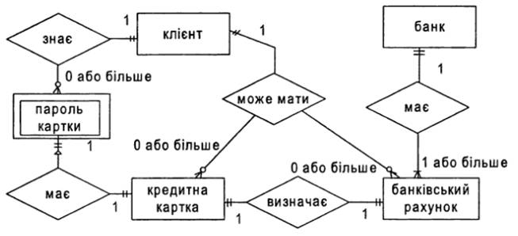
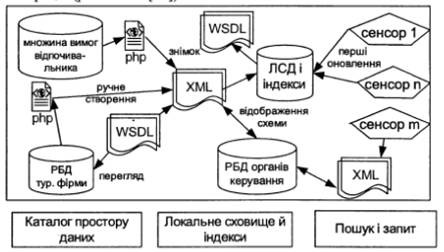

Вступ. Основні
проблеми, що приводять до
інтеграції
даних. Історія засобів інтеграції
Вступ
Значна і найбільш видима суспільству частина
інформаційних технологій створювалася і продовжує створюватися для підтримки
корпоративних інформаційних систем, тобто систем, що здійснюють
комп'ютеризовану підтримку бізнес-діяльності державних чи приватних, цивільних
або військових, комерційних чи наукових, централізованих або територіально
розподілених, великих, середніх або дрібних організацій. Як видно, поняття
корпоративної інформаційної системи дуже широко, і конкретні функції різних
подібних систем можуть вельми розрізнятися залежно від бізнес-орієнтації
компанії. Найбільш загальним чином корпоративну інформаційну систему, мабуть,
можна охарактеризувати як набір більш-менш пов'язаних додатків, які працюють з
однією або декількома базами даних, що містять інформацію, істотну для
діяльності організації, і дозволяють автоматизувати всі або деякі
бізнес-процеси цієї організації.
1.1 Характеристика інтеграції даних
До цих пір ми говорили в основному про інтеграцію
додатків шляхом забезпечення їх явної програмної взаємодії. Проте в
інформаційних системах додатки зазвичай працюють з базами даних, і, взагалі
кажучи, можна інтегрувати додатки на основі інтеграції даних. Такого роду
інтеграція застосовується, наприклад, у корпоративних системах, заснованих на
рішеннях ERP, які згадувалися вище: всі програми працюють з однією загальною
базою даних.
Але як бути в ситуаціях, коли з історичних причин на
підприємстві вже використовується кілька додатків, кожне з яких працює зі своєю
базою даних, і потрібно інтегрувати ці програми саме на основі інтеграції
даних? Іноді найкращим рішенням є фізична об'єднання всіх існуючих баз даних в
заново організує базі даних з відповідною зміною всіх існуючих додатків. При
переході на сучасні засоби управління базами даних таке рішення може сприяти
майбутньому масштабуванню корпоративної системи і сильно полегшить вирішення
потенційної завдання створення корпоративного сховища даних.
Однак потрібно усвідомлювати, що бази даних є
компонентами інфраструктури підприємства, а будь-які інфраструктурні зміни
вимагають великих витрат (організаційних, фінансових і тимчасових). Витрати на
переклад корпоративної системи на єдину базу даних сумірні з витратами на
створення нової системи. Тому варто задуматися про можливості віртуальної
інтеграції корпоративних баз даних, тобто забезпечення доступу додаткам до всіх
корпоративних даних без їх фізичної інтеграції. Відразу зауважимо, що, як і у
випадку інтеграції додатків на основі забезпечення їх безпосередніх взаємодій,
спільне вирішення проблеми віртуальної інтеграції даних відсутня.
Вже кілька десятків років тому, коли тільки
з'явилися реляційні системи управління базами даних, але ще активно
використовувалися ієрархічні, мережеві та інші до реляційні системи баз даних,
робилися спроби створення систем інтеграції неоднорідних баз даних.
Визначалася, наприклад, глобальна реляційна схема бази даних, яка відображалася
в схеми інтегрованих баз даних. На глобальному рівні віртуальної інтегрованої
бази даних запити формувалися на мові SQL, декомпозиційною системою інтеграції
на під запити до інтегрованим баз даних (з трансляцією в відповідний мова
запитів); ці під запити виконувалися в інтегрованих системах баз даних, а
приватні результати зливалися системою інтеграції і поверталися у відповідь на
глобальну запит. Незважаючи на те, що можливість створення таких систем була
доведена шляхом створення працюючих прототипів, їх застосування виявилося
неефективним (складним і повільним), і вони не набули практичного поширення.
Приватні рішення задачі інтеграції даних пропонували
постачальники реляційних СУБД. Наприклад, в СУБД IBM DB2 підтримувався (і досі
підтримується) шлюз для доступу до ієрархічним баз даних, керованим СУБД IMS, в
СУБД INGRES компанії Computer Associates забезпечувався доступ до мережевих баз
даних, керованим СУБД IDMS і т.д. Більш того, більшість постачальників
розвинених реляційних СУБД (IBM, Oracle, Informix, Sybase і т.д.) підтримувало
в своїх продуктах шлюзи для доступу до баз даних, керованих СУБД інших
постачальників. Ці рішення, звичайно, були корисні, але в загальному випадку не
дозволяли впоратися з проблемою інтеграції даних в корпоративній системі.
Дуже сильний вплив на організацію корпоративних
інформаційних систем з декількома базами даних справила розробка компанією
Microsoft інтерфейсу ODBC (Open DataBase Connectivity) і поява відповідної
специфікації CLI (Call Level Interface, інтерфейс рівня викликів) в стандарті
мови SQL. Стандартизація бібліотеки функцій і підмножини мови SQL, що
забезпечують можливість звертатися до будь-якій базі даних, для якої
підтримується відповідний ODBC-драйвер, сильно знизило гостроту проблеми
інтеграції даних. Практично всі постачальники комерційних і вільно доступних
СУБД забезпечили ODBC-драйвера для доступу до своїх баз даних, а відкритість
стандарту дозволила створювати такі драйвери стороннім розробникам. Звичайно,
ODBC (і що з'явився пізніше інтерфейс JDBC Java DataBase Connectivity)
забезпечує не інтеграцію даних, а всього лише доступ з додатку до різних баз
даних, але, по-перше, часто це виявляється достатнім, і, по-друге, обмеженість
технології окупається її простотою і ефективністю.
В останні роки, у зв'язку з розвитком технології XML
(мов XPath і XQuery, специфікації XML Schema і т.д.), знову підвищився інтерес
до такого підходу, як віртуальна інтеграції даних. Сьогодні актуальною
проблемою є віртуальна інтеграція баз XML-даних, що з'являються в корпоративних
системах, з існуючими базами даних. Незважаючи на схожість цієї проблеми з
згадуваної вище проблемою інтеграції неоднорідних баз даних, нова проблема
набагато простіше піддається вирішенню, оскільки, кажучи нестрого, табличний
формат реляційних даних легко вписується в загальний формат XML-документа. В
даний час провідні виробники СУБД більшою мірою зацікавлені в забезпеченні
ефективної підтримки управління XML-даними в своїх власних продуктах, але в
найближчому майбутньому можна очікувати підвищення активності і в області
віртуальної інтеграції [2].
1.1.1
Інтеграція даних
Технологія
інтеграції даних традиційно пов’язується з поняттям сховища даних і асоціюється
з пакетним виконанням операцій витягування, перетворення та завантаження
(Extraction, Transformation, Loading, скор. ETL) даних із різних систем до
єдиного сховища даних, призначеного для обробки та аналізу інформації
(підготовки звітності).
Необхідною
умовою здійснення такої інтеграції є проведення досконального аналізу,
по-перше, задіяних систем і даних з метою визначення релевантних даних, які
підлягають процедурам витягу і перетворення з наступним обов’язковим «очищенням»
таких даних, а, по-друге, цільових структур, в які будуть завантажуватися ці
дані. Підготовка звітності здійснюється за допомогою аналітичних засобів, які
дозволять кожного разу по-новому подивитися на зібрані дані, тобто допомагають
створювати інформацію, необхідну для прийняття рішень.
Як
відомо, традиційні інструменти ETL розроблювалися для фізичного переміщення
даних за пакетним сценарієм, а не для створення віртуального надання агрегованих
даних, до яких можна звертатись у режимі реального часу. Однак, сьогодні багато
хто з постачальників модернізували свої продукти, включаючи в них підтримку
доступу до даних у реальному часі.
ETL
використовує фізичне переміщення даних з одного місця знаходження в інше,
створюючи при цьому надлишкові копії даних. Як правило, ці скопійовані дані є
підсумковими даними, і частіше за все детальні дані, використані для отримання
підсумків, не доступні.
Очевидно,
що даний вид інтеграції необхідний, тому що інтеграція даних, у першу чергу,
задіяна в обробці та аналізі історичних даних з метою визначення тенденцій, які
не можуть бути встановлені будь-яким іншим способом, інше видиме застосування
цього виду інтеграції — підтримка запитів «що якщо» — для цього змінюється ряд
параметрів для прогнозування поки невідомих можливостей. Цей тип інтеграції,
зорієнтований в основному на осіб, відповідальних за прийняття рішень.
1.1.2
Інтеграція застосувань
Декілька
років тому з’явився термін «інтеграція корпоративних застосувань» (Enterprise
Application Integration, скор. EAI), що означає впровадження інтеграційної
платформи, яка складається з системи передачі повідомлень, брокера для маршрутизації
та трансформації, а також набору адаптерів, які спрощують взаємодію із
застосуваннями та даними з різних систем.
Технологічним
фундаментом брокера повідомлень є, як правило, програмне забезпечення
проміжного шару пересилання повідомлень (Messaging-Oriented Middleware, MOM) ,
яке забезпечує транспорт доставки інформації та даних між прикладними системами.
Прикладом такого програмного забезпечення є «сервер черг повідомлень» MSMQ
(Microsoft Message Queuing). Продукти цього класу забезпечують транспорт
гарантованої доставки повідомлень між застосуваннями в
територіально-розподіленому середовищі.
У
випадку, якщо застосування, що інтегруються, знаходяться в рамках однієї корпоративної
мережі, то забезпечується пересилання інформації в режимі, «близькому до
реального часу».
Якщо
інтегруються застосування, що знаходяться в різних організаціях, то принцип
«черги повідомлень» і гарантованої доставки, який реалізується MOM-продуктами,
забезпечує асинхронна взаємодія і так зване «слабке зв’язування».
Інтеграція
корпоративних застосувань є важливим типом інтеграції для корпоративних
користувачів. Справа в тому, що для більшості організацій підтримка в
синхронізованому стані даних із множини гетерогенних систем як правило є
серйозним завданням. Інтеграція застосувань, хоча й необхідна для здійснення
бізнес-функцій, в основному являється завданням корпоративних IT-підрозділів, обов’язком
яких є підтримка різних корпоративних систем в узгодженому стані.
1.1.3
Інтеграція інформації
Інтеграція
корпоративної інформації (Enterprise Information Integration, скор. EII) — це
інтеграція даних із численних систем в уніфіковане, узгоджене й точне надання,
яке призначене для вивчення та обробки даних.
Технологія
EII використовує розподілений запит для збору та інтеграції інформації з різних
джерел. Звичайно такий запит називають об’єднаним, або федеративним (federated).
У цьому випадку запити розподіляються за джерелами даних, а потім результати
їхнього виконання приєднуються один до одного або об’єднуються.
Основне
призначення таких інструментів інтеграції — одержати доступ у реальному часі до
інформації, що знаходиться в різних ІС. Кешування, індексація і оптимізація
розподілених запитів є основними технологіями, за допомогою яких ці інструменти
можуть забезпечити витяг інформації в реальному часі. XML та WEB-сервіси стають
стандартом, на якому будуються дані продукти.
На
відміну від попередніх двох типів інтеграції, EII є технологією витягу
інформації (pull), при якій об’єднаний запит знаходить дані, необхідні для
користувацького застосування, і вставляє їх в надання з користувацьким
контекстом.
1.1.4
Інтеграція метаданих
Складність
завдання інтеграції значно знижується, якщо направити певні зусилля на
стандартизацію опису даних задіяних інформаційних ресурсів. Короткий опис
властивостей та змісту інформації будь-якого ресурсу надається його метаданими.
Генерування,
зберігання і управління метаданими допомагають у підтримці використання
величезних об’ємів інформації, доступних у наші дні в будь-якій електронній
формі. Метадані в залежності від обраного технологічного підходу до інтеграції
ресурсів можна використовувати трьома способами:
1) пасивно,
забезпечуючи чітку документацію про структуру, процеси розробки та використання
інформаційного ресурсу. Документація має бути доступною всім учасникам
інформаційного простору;
2) активно,
шляхом зберігання конкретних семантичних аспектів (наприклад, правил
перетворення) у вигляді метаданих, які можна інтерпретувати та використовувати
під час виконання. У цьому випадку процеси інтеграції управляються метаданими.
А код (тобто активні метадані) і додаткова документація узгоджено та
уніфіковано управляються в одному репозиторії, при цьому актуальність
документації, звісно, збільшується;
3) напівактивно,
за рахунок зберігання статичної інформації (наприклад, визначень структур,
специфікацій конфігурацій), яку буде зчитувати інший програмний компонент під
час виконання. Наприклад, під час обробки запитів необхідні метадані для
перевірки існування певних атрибутів.
Важливим
етапом інтеграції метаданих є стандартизація переліків категорій предметних
галузей як важливого компоненту первинного пошуку без використання ключових
слів.
Інтеграція
метаданих окрім підтримки динамічної інтеграції ІР, слугуватиме основою:
·
підвищення
адаптивних властивостей спільного інформаційного середовища;
·
посилення
механізмів безпеки;
·
автоматизації
адміністрування наскрізних інформаційних процесів;
·
підтримки
аналізу на базі повторного використання існуючих аналітичних застосувань і
прискоренню розробки нових.
Як до найбільш
відповідальної функціональної властивості інтеграції даних, вимоги до
інструментів управління метаданими та моделювання даних ІР включають в себе:
·
автоматизоване
виявлення і отримання метаданих з джерел даних, програм та інших інструментів;
·
створення
та підтримку моделі даних;
·
взаємне
відображення фізичної та логічної моделі даних та їхню раціоналізацію;
·
визначення
відношення моделі до моделі на рівні атрибутів через їхнє графічне
відображення;
·
наявність
відкритих сховищ метаданих з можливістю для обміну метаданими в обох напрямках
за допомогою інших інструментів;
·
автоматизовану
синхронізацію метаданих у декількох примірниках інструментів управління
метаданими;
·
можливість
розширення сховища метаданих метаданими атрибутів і зв'язків замовника.
1.1.5
Вибір технологічних підходів до інтеграції даних
Вибір
технології інтеграції даних повністю залежить від рівня розвитку і вимог
діяльності, організаційної структури, рівня автономії підрозділів
організаційної структури і потреби в аналітичних даних і застосуваннях.
Так,
технологія ETL [1] найкраще застосовується в тому випадку, якщо існує багато місць
зберігання інформації і велика кількість накопичених історичних даних, а для
ефективної роботи аналітичних застосувань необхідно створити корпоративне
сховище надійних даних для історичного аналізу та багатовимірних запитів.
Технологія ETL підходить також для інтеграції важливих довідкових даних, виправлення
й видалення даних, що дублюються, перевірки якості даних і інших важливих
завдань.
Перевагою
технології є можливість провести трансформацію і переміщення великих обсягів
даних, здійснивши при цьому процеси узгодження, очищення і агрегації у процесі
передачі від джерела до сховища. ETL — основний метод інтеграції даних у
багаторівневих системах вертикальної інтеграції, яким необхідно забезпечити
інтеграцію великих обсягів даних і поєднати засоби інтеграції з існуючими
аналітичними інструментами і застосуваннями.
Технологія
EAI найбільш функціональна тоді, коли необхідно зв’язати різні застосування в
реальному часі для автоматизації наскрізних ділових процедур (наприклад,
обслуговування за принципом «єдиного вікна»).
Другий
випадок використання EAI — це ситуація, коли необхідно, щоб зміни, внесені до
даних одного застосування (зазвичай, це невеликий набір записів), були відбиті
у всіх інших. Ця технологія дуже добре показує себе при використанні методу
фіксації змін і їхнє перенесення у відповідні застосування або системи.
Технологія
EII на глобальному рівні застосовується за необхідності організувати на базі
множини спеціалізованих джерел загальну систему корпоративних даних. За джерела
можуть служити спеціалізовані репозиторії даних, бази даних різних операційних
систем, корпоративні сховища даних і файли користувачів.
Усі
джерела можуть бути рознесені географічно і організаційно, але всередині
ієрархії сховищ проводиться обмін даними, звітами та іншою інформацією. При цьому
реалізується принцип автономії підрозділів корпорації і здійснюється єдиний
контроль за рахунок розмежування прав доступу. Така структура називається федеральним
сховищем даних. На рівні підприємства технологія EII може застосовуватися при
оперативній підготовці запитів до джерел даних і складанні звітності.
Технологію
EII [1,2] доцільно застосовувати
і в тому випадку, коли вартість проекту інтеграції даних за технологією ETL
перевищує зиски. Крім того, федералізація забезпечує ідеальну інтеграцію даних
при злитті компаній. На первинному етапі федералізація використовується як
основний інструмент, а надалі, після впровадження засобів ETL, як додатковий
засіб для гнучкішого доступу до даних і автономності деяких елементів організаційної
структури.
Викладені
вище технологічні підходи можуть бути використані для реалізації широкого кола
завдань інтеграції даних: від інтеграції в режимі реального часу до пакетної
інтеграції, і від інтеграції даних до інтеграції застосувань.
Зазначимо,
що для інтеграції даних у режимі реального часу краще всього підходить
технологія EII. Для пакетної інтеграції даних — ETL. А для інтеграції застосувань,
незалежно від обраного режиму, найбільш придатним інструментом стане технологія
EAI.
Окрім
розуміння того, коли і які технології необхідно використовувати, потрібно
вказати на проблеми, які їм властиві. Впровадження цих технологій вимагає від
IT-персоналу глибокого розуміння тих вимог, які пред’являються до даних для
підтримки як тактичних, так і стратегічних рішень. Наприклад, при застосуванні
технології ETL потрібно мати на увазі, що необхідні дані витягуються,
перетворюються і завантажуються у вигляді, придатному для використання
безпосередньо аналітиками або EII-сервером. У разі використання EII-технології,
потрібно розуміти, що способи надання даних повинні задовольняти звітним
вимогам аналітиків, тобто дані повинні бути придатні для використання в
аналітичних звітах. В усіх випадках розуміння джерел даних і вимог, що
пред’являються до даних, є необхідним кроком для впровадження цих технологій. У
цьому значно допомагає сукупність зібраних та упорядкованих метаданих задіяних
ІР.
1.2
Проблеми інтеграції даних
Будь-яка
велика і давно існуюча корпорація володіє декількома базами даних, що
відносяться до різних видів діяльності. Дані можуть мати різні уявлення, а
іноді можуть бути навіть неузгодженими (наприклад, через помилки введення в
одну з БД). Це недобре навіть для OLTP-систем і в принципі непридатне для
OLAP-систем, які повинні обробляти спільні історичні узгоджені корпоративні
дані [6]. Більш того, для оперативної аналітичної обробки потрібне залучення
зовнішніх джерел даних, які тим більше можуть володіти різними форматами і
вимагати узгодження.
Підхід
до побудови сховище даних для інтеграції неоднорідних джерел даних принципово
відрізняється від підходу динамічної інтеграції різнорідних БД. У разі сховище
даних даних реально будується нове великомасштабне сховище даних, управління
даними в якому відбувається, взагалі кажучи, за іншими правилами, ніж у
вихідних оперативних БД.
1.2.1
Основні проблеми реалізації сховищ даних[6]
Неоднорідність
програмного середовища
Сховище
даних практично ніколи не створюється на порожньому місці[1].
Майже завжди кінцеве рішення буде різнорідним, тобто в ньому будуть
використовуватися автономно розроблені програмні засоби. Насамперед це
стосується формування інтегрованого узгодженого набору даних, які можуть
надходити з різнорідних БД, електронних архівів, публічних і комерційних
електронних каталогів, довідників, статистичних збірників. При побудові сховище
даних доводиться вирішувати завдання побудови єдиної, узгоджено функціонуючої
інформаційної системи на основі неоднорідних програмних засобів і рішень. При
виборі засобів реалізації сховище даних доводиться враховувати безліч факторів,
які включають рівень сумісності різних програмних компонентів, легкість їх
освоєння та використання, ефективність функціонування і т.д.
Розподілений
характер організації
У
концепції сховище даних зумовлено те, що операційна аналітична обробка може
виконуватися в будь-якому вузлі мережі незалежно від місця розташування
основного сховища. Хоча при аналітичній обробці дані лише читаються, і потреба
в синхронізації відсутня, для досягнення ефективності необхідно підтримувати
реплікацію даних у різних вузлах мережі. (Насправді, все не так просто. Однією
з вимог до сховищ даних є те, щоб свіжа інформація надходила в сховище даних
якомога швидше. Тобто потенційно будь-яка модифікація оперативної БД може
ініціювати додавання даних до сховища даних, а тоді буде потрібно оновити і всі
репліки, для чого синхронізація все-таки потрібна).
Підвищення
вимог до безпеки даних
Зібрана
разом узгоджена інформація про історію розвитку корпорації, її успіхи та
невдачі, про взаємини з постачальниками і замовниками, про історію та стан
ринку дає можливість аналізу минулої і поточної діяльності корпорації та
побудови прогнозів для майбутнього. Ця інформація настільки цінна для
корпорації, що не можна допустити можливості її витоку (насправді, якщо сховище
даних однієї корпорації потрапить в руки аналітиків іншої корпорації, то всі
аналітичні прогнози першої корпорації відразу стануть невірними). У системах,
заснованих на сховищах даних, виявляється недостатньою захист даних у стилі
мови SQL, яку забезпечують звичайні комерційні СУБД. Для забезпечення належного
рівня захисту доступ до даних повинен контролюватися не тільки на рівні таблиць
і їх стовпців, а й на рівні окремих рядків. Доводиться також вирішувати питання
аутентифікації користувачів, захисту даних при їх переміщенні в сховище даних з
оперативних БД і зовнішніх джерел, захисту даних при їх передачі по мережі.
Необхідність
наявності багаторівневих довідників метаданих
Якщо
роль метаданих (зазвичай містяться в таблицях-каталогах) в оперативних
інформаційних системах досить обмежена, то для OLAP-систем наявність розвинених
метаданих та засобів їх надання кінцевим користувачам є одним з основних умов
успішної реалізації. Наприклад, перш, ніж менеджер корпорації задасть системі
своє питання, він повинен зрозуміти, яка інформація є, наскільки вона
актуальна, чи можна їй довіряти, скільки часу може зайняти формування відповіді
і т.д.
Для
користувача OLAP-системи потрібні метадані, принаймні, наступних типів.
Типи
метаданих для користувача OLAP-системи
Опису
структур даних, їх взаємозв'язків [5].
Інформація
про збережених в сховищі даних і підтримуваних ним агрегатах даних.
Інформація
про джерела даних і про ступінь їх достовірності. Одна і та ж інформація могла
потрапити в сховище даних з різних джерел. Користувач повинен мати можливість
дізнатися, яке джерело був обраний основним, і яким чином проводилися
узгодження та очистка даних.
Інформація
про періодичність оновлень даних. Бажано знати не тільки те, якому моменту часу
відповідають його цікавлять дані, але і коли вони наступного разу будуть
оновлені.
Інформація
про власників даних. Користувачеві OLAP-системи може виявитися корисною
інформація про наявність в системі даних, до яких він не має доступу, про
власників цих даних і про дії, які він повинен зробити, щоб отримати доступ до
даних.
Статистичні
оцінки часу виконання запитів. До виконання запиту корисно мати хоча б
приблизну оцінку часу, який знадобиться для отримання відповіді, і обсягу цієї
відповіді.
Потреба
в ефективному зберіганні та обробці дуже великих обсягів інформації
Вже
зараз відомі приклади сховищ даних, що містять терабайти інформації. За даними
консалтингової компанії Meta Group, близько половини корпорацій, що
використовують або планують використовувати сховище даних, припускає довести їх
обсяг до сотень гігабайт. Проблемою таких великих сховищ є те, що накладні
витрати на зовнішню пам'ять зростають нелінійно при зростанні обсягу сховища.
Дослідження, проведені на основі тестового набору TPC-D, показали, що для БД
об'ємом в 100 гігабайт буде потрібно зовнішня пам'ять об'ємом в 4.87 рази
більша, ніж потрібно власне для корисних даних. При подальшому зростанні БД цей
коефіцієнт збільшується.
1.2.2
Реалізація сховищ і вітрин даних
Варіанти
реалізації сховищ даних:
Віртуальне
сховище даних. В його основі - репозиторій метаданих, які описують джерела
інформації (БД транзакційних систем, зовнішні файли та ін.), SQL-запити для їх
зчитування та процедури обробки та надання інформації. Безпосередній доступ до
останніх забезпечує ПО проміжного шару. У цьому випадку надмірність даних
нульова. Кінцеві користувачі фактично працюють з транзакційними системами
безпосередньо з усіма витікаючими звідси плюсами (доступ до "живим"
даним в реальному часі) і мінусами (інтенсивний мережевий трафік, зниження
продуктивності OLTP-систем і реальна загроза їх працездатності внаслідок
невдалих дій користувачів-аналітиків).
Вітрини
даних - це набір тематично пов'язаних БД, які містять інформацію, що
відноситься до окремих аспектів діяльності корпорації. По суті справи, вітрина
даних - це полегшений варіант сховища даних, який містить лише тематично
об'єднані дані. Цільова база даних максимально наближена до кінцевого
користувача і може містити тематично орієнтовані агрегатні дані. Вітрина даних,
природно, істотно менше за обсягом, ніж корпоративне сховище даних, і для його
реалізації не потрібно особливо потужна обчислювальна техніка.
Глобальне
сховище даних. Останнім часом все більш популярною стає ідея поєднати концепції
сховища і вітрини даних в одній реалізації та використовувати сховище даних в
якості єдиного джерела інтегрованих даних для всіх вітрин даних. Тоді природною
стає така трирівнева архітектура системи[1,2,5]:
Перший
рівень - корпоративне сховище даних на основі однієї з сучасних РСУБД. Це сховище
даних інтегрованих в основному деталізованих даних. РСУБД забезпечують
ефективне зберігання і управління даними дуже великого обсягу, але не дуже добре
відповідають потребам OLAP-систем, зокрема, у зв'язку з вимогою багатовимірного
подання даних.
Другий
рівень - вітрини даних на основі багатовимірної СУБД (прикладом - Oracle
Express Server). Такі СУБД майже ідеально підходять для цілей розробки OLAP-систем,
але поки не дозволяють зберігати надвеликі обсяги даних (граничний розмір
багатовимірної БД становить 10-40 Гбайт). В даному випадку це і не потрібно,
оскільки йдеться про вітринах даних. Зауважимо, що вітрина даних не обов'язково
повинна бути повністю сформована. Вона може містити посилання на сховище даних
і добирати звідти інформацію по мірі надходження запитів. Звичайно, це дещо
збільшує час відгуку, але зате знімає проблему обмеженого обсягу багатовимірної
БД.
Третій
рівень - клієнтські робочі місця кінцевих користувачів, на яких встановлюються
засоби оперативного аналізу даних
1.3 Історія засобів інтеграції
Перші
засоби інтеграції з’явились на початку 90-х pp. минулого століття. Вони
дозволяли описувати процедури перетворення даних на мовах програмування,
наприклад, на COBOL, технологія CORBA.
Середина
90-х pp. XX ст. знаменна появою нових засобів інтеграції даних, заснованих на
пропрієтарному ядрі і мові програмування. Протягом наступних
десяти років розробники СКБД істотно збільшували можливості SQL і утиліт СКБД.
У
1998 p. Sunopsis випускає унікальний засіб інтеграції даних, що генерує
оптимізований SQL-код і що дозволя задіяти всі можливості і переваги СКБД, які
використовуються в проекті.
Технологію
прозорих шлюзів [2] Oracle виконана в 1998 році співробітниками Technology
Solution Group (технологічного підрозділу Oracle Russia) для великої фінансової
організації.
2000-ні
рр. – розроблено цілий ряд технологій і засобів для інтеграції додатків.
Ruby
on Rails — об'єктно-орієнтований програмний
каркас (фреймворк) для створення веб-застосунків,
написаний на мові
програмування Ruby [3]. Ruby
on Rails надає каркас модель-вид-контролер (Model-View-Controller)
для веб-застосунків, а також забезпечує їхню інтеграцію з веб-сервером і сервером бази даних. Ruby on Rails був створений Девідом
Гайнемаєр Генссоном (англ. David
Heinemeier Hansson) на основі його роботи над засобом керування проектами Basecamp і був
випущений в липні 2004 року.
18.03.2004
- Microsoft випускає BizTalk Server 2004, обладнаний новими засобами
інтеграції і управління бізнес-процесами [4].
Корпорація
Microsoft оголосила про випуск BizTalk® Server 2004 — одного
із найбільш популярних рішень для інтеграції даних, що входить
до складу Windows Server SystemTM [4]. Додатки, створювані
з використанням BizTalk Server 2004, працюють на платформі
Microsoft® .NET Framework. Рішення полегшує автоматизацію
і управління складними бізнес-процесами, дозволяючи використовувати
масштабований механізм об’єднання процесів BizTalk Server для інтеграції
внутрішньокорпоративних додатків і програмних систем ділових партнерів.
Використання BizTalk Server 2004 допомагає підвищити продуктивність праці співробітників,
які працюють з інформацією, розробників і фахівців в сфері
інформаційних технологій. Подібний ефект досягається завдяки наявності
спеціалізованих інструментальних засобів, що дозволяють використовувати
для розробки, управління і здійснення доступу до бізнес-процесів
звичні додатки, такі как Microsoft Visio і Visual Studio® .NET 2003.
Оголошення про випуск BizTalk Server 2004 було зроблено в рамках Silicon
Valley Speaker Series — спонсованої Microsoft програми щомісячних
семінарів, присвячених новим продуктам і технологіям.
2013р – проводиться розробка засобів інтеграції
даних з хмарних додатків.
Література
1.
Берко
А.Ю., Висоцька В.А. Семантична інтеграція
неповних та неточних даних / Берко А.Ю.,
Висоцька В.А. / Журнал «Системи обробки інформації», -
2009, випуск 7
2.
Інтеграція
корпоративних додатків // Swewe. – Режим доступу: http://uk.swewe.net/word_show.htm/ Інтеграція
корпоративних додатків /. – Дата доступу: 21.12.2014. - Інтеграція
корпоративних додатків/
3.
Глеб
Ладыженский. Історія розвитку програмного забезпечення / Глеб Ладыженский // Віртуальний
комп’ютерний музей. – Режим доступу: http://www.computer-museum.ru/histsoft/ji98091.htm
/.
– Дата доступу: 22.12.2014. - Історія розвитку програмного забезпечення.
4.
Microsoft
випускає BizTalk Server 2004, обладнаний новими засобами інтеграції
і управління бізнес-процесами// Microsoft – Режим доступу:
http://www.microsoft.com/Ukraine/News/Issues/2004/03/BizTalk.mspx/. – Дата
доступу: 23.12.2014. - Microsoft випускає BizTalk Server 2004, обладнаний
новими засобами інтеграції і управління бізнес-процесами.
5.
Інтеграція
/ – Режим доступу: http://prj-exp.ru/Integeration_Systems?page=1/. – Дата
доступу: 23.12.2014. - Корпоративні сховища даних. Інтеграція систем. Проектна
документація.
6.
Н.Б.
Шаховська, Д.О. Тарасов / технології інтеграції даних інформаційних систем
національного університету “львівська політехніка” // Національний університет
“Львівська політехніка”, - 2011р.
Алгебраїчна
система. Відображення логічних моделей даних у вигляді алгебраїчних систем.
Поняття моделі даних та її рівнів.
2.1Поняття алгебраїчної
системи
Алгебраїчною системою
<Al; WF; WR> називається об’єкт, що складається з трьох
множин: непорожньої множини Al, множини операцій алгебри WF,
визначених на Al, і множини відношень (зв’язків) WR,
визначених на Al:
A = < Al, WF, WR
>.
Множина Al
називається носієм алгебраїчної системи. Якщо алгебраїчна система не містить
операцій, вона називається моделлю, якщо не містить відношень,
то - алгеброю.
Символи операцій алгебри
і відношень (кожний з яких має певну арність) складають сигнатуру
алгебраїчної системи.
Ми матимемо справу
з алгебраїчною системою, що містить скінченну кількість операцій і
відношень. Алгебраїчну систему записуватимемо у вигляді:
< Al; f1 ,..., fk;
r1,..., ri >
де {f1,...,fk } =
WF; {r1,..,r2} = WR.
Типом
алгебраїчної системи <Al;f1,...,fk;r1,...,ri>
називається пара множин (n(f1),...,n(fk)) і (n(r1),...,n(r1)), операцій,
що складаються з арностей, і відношень. Тип записуватимемо у вигляді <n(f1),...,n(fk);
n(r1),...,n(r1)>
Проте, базам даних
та сховищам даних ближче дещо інше математичне поняття, а саме
алгебраїчної системи, розвиток теорії якої тісно пов’язаний з роботами
академіка А. Мальцева в 50-х роках XX століття [5].
Спільність математичного поняття моделі означає, що з його допомогою
можна описати будь-яку математичну, тобто формальну, структуру.
Вже на загальному
рівні сказаного можна зробити деякі цікаві для розробника спостереження.
Будь-яка формальна
система формальна настільки, наскільки для неї існує модель. Наприклад,
база даних - це модель, і значить, проектування бази даних є
побудовою моделі.
Трійка <Al; WF;
WR> нагадує тріаду: <Базові таблиці, Декларативні обмеження
цілісності, Процедури БД >.
Множини відношень WR
і функцій WF в математичній моделі «взаємозамінні», тобто можна
підібрати таке відношення WR1, що потреба у WF1 відпаде, і навпаки.
Розподіл правил, що задають множину об’єктів моделі, між WR-визначеннями
(наприклад, шляхом переліку) і
WF-визначеннями є питанням зручності роботи з ними, і принципово
нічого не забирає і не додає до цієї множини. Те ж саме можна
сказати про декларативні і процедурні обмеження цілісності в базах
даних.
Підсистемою
алгебраїчної системи <Al;WF;WR> називається алгебраїчна
система <Al’;WF’;WR’>, у якій Al’H Аl, значення всіх
операцій з WF’ на Аl’ співпадають із значеннями операцій
з WF і відношення з WR’ на Al співпадають з відношеннями
з WR. При цьому підмножина Al’ називається замкненою в
системі <Al;WF;WR>.
Традиційний спосіб
визначення, вивчення, класифікації алгебраїчних систем - аксіоматичний.
Приклад 2.1.
Нехай маємо таку алгебраїчну систему: Al=<N; +>. Вона
визначає операцію додавання над множиною натуральних чисел. Тоді алгебраїчна
система А2=<{2,4,6,...}; +> буде підсистемою алгебраїчної
системи А1. Для доведення цього факту визначимо відображення j
N ® {2,4,6,...} як j(x) = 2х. Це відображення покаже, що j(x+y)
= 2 (х+у) = 2х + 2у =j(x) + j(y).
Алгебра вивчає не
окремі алгебраїчні системи, а класи алгебраїчних систем, саме ті алгебраїчні
системи, які задовольняють деяку систему аксіом. Тобто, вивчаються, в
основному, загальні властивості для всіх алгебраїчних систем із
заданого класу замість того, щоб вивчати властивості кожної окремо.
Такий підхід виявляється не тільки продуктивним, але і найприроднішим.
Часто для класів алгебраїчних систем розглядаються вужчі класи, що
отримуються шляхом додаванням нових аксіом.
Класами алгебраїчних
систем є:
1) графи;
2)
частково-впорядковані множини;
3) решітки;
4) булеві алгебри;
5) групи і підгрупи.
Можна говорити про
нові класи алгебраїчних систем, які отримуємо внаслідок поєднання
традиційних систем. Це твердження проілюструємо прикладом.
Приклад 2.2.
Реляційна модель даних породжена на основі класу множин та розширеної
булевої алгебри; темпоральна модель є вужчим класом реляційної моделі,
отриманої шляхом розширення відношення та реляційних операторів тощо.
Множину можна вважати виродженою алгебраїчною системою з порожньою
множиною операцій.
Одна з алгебраїчних
систем, з якими ми матимемо справу - алгебра підмножин.
Розглянемо всі
підмножини деякої множини Аl
(позначимо їх через Р(Аl)). Операції об’єднання, перетину двох
множин і доповнення множини X до множини Аl
(позначимо через - X ) є операціями алгебри. Дійсно, вони
визначені для будь-яких підмножин множини Аl
і результат цих операцій - знову підмножина множини Аl
Порожня множина і сама множина Аl
- теж підмножини множини Аl.
Отже, алгеброю
підмножин множини А називається алгебра:
<Р (Аl)
; +, * , ¬ , Аl
>.
Частково-впорядкованою
множиною називається модель <Аl;
J
>,
бінарне відношення J якої задовольняє систему аксіом:
а) для
будь-якого елементу а ϵ
а
виконується (а, а) ϵ J (або a J а);
б) для будь-яких
елементів а, b ϵ А, з a J b, b J а випливає а = b;
в) для будь-яких
елементів а, b, с ϵ
А, таких що a J b, b J с, виконується a J с.
У математиці моделі
добре вивчені на рівні строгості і ретельності, недосяжних в інших
областях знань, а як описовий засіб вони універсальні. Більше того,
вони завжди «незримо присутні» у довільному процесі проектування ІС.
Тому доцільно їх використовувати при розробленнях БД явним чином. Але,
необхідно врахувати ряд причин, і одна з них полягає у тому, що математична
модель - абстрактне поняття, позбавлене семантичного забарвлення, незалежне
від предметної області, а саме ці особливості і враховує
розробник при проектуванні БД. Крім того, моделі в тому вигляді, в
якому вони існують в математиці, «не розуміє» жодна комп’ютерна
програма. Реально в проектуванні між математичною моделлю і базою
даних присутні декілька моделей різних рівнів абстракції, зв’язаних між
собою. Математична модель і база даних утворюють як би два полюси,
між якими перебувають інші моделі, що тяжіють до одного або іншого
«полюса». Можна привести три рівні моделей, що заповнюють цей
«проміжок»: концептуальна модель прикладної області, рівні логічної і
фізичної моделі БД.
2.2. Рівні моделей
даних
2.2.1. Концептуальна
модель даних
Це найзагальніший
вид моделі, з яким має справу розробник, у тому сенсі, що моделі
цього типу практично не прив’язані до комп’ютерних реалій (абстраговані
від них). Концептуальні моделі вже не є математичними моделями з їх
універсальністю, але вони ще і не БД-моделі.
У концептуальному
моделюванні проектується схема понять прикладної області в їх
взаємозв’язку. Пропонувалися і пропонуються різні шляхи такого
моделювання. Ось, наприклад, які (мета-) поняття розглядали для
концептуального моделювання в кінці 70-х років минулого століття Сміт
і Сміт.
Початковими базовими
поняттями в трактуванні цих двох фахівців є об’єкти і зв’язки між
об’єктами. Зв’язки можуть бути двох видів: узагальнення і агрегація. Узагальнення
інтуїтивно зрозуміле, і пов’язує одні об’єкти з іншими, за сутністю
загальнішими. Наприклад, об’єкт «тварина» є узагальнення для об’єктів
«собака» і «кінь». Агрегація зв’язує різнорідні об’єкти за
ознакою компонентного входження в інші об’єкти, як наприклад, «колеса»
і «кузов» пов’язані з «автомобілем» тим, що останній складається з
перших. Обидва види зв’язків утворюють кожен свою ієрархію серед
об’єктів моделі.
Окрім цих базових,
є й інші поняття концептуальної моделі: атрибут, відношення, екземпляр,
індивід. Найкраще в «моделі Смітів» - це відносність перерахованих
понять. Одне і те ж явище може бути і об’єктом, і відношенням, і
атрибутом, і екземпляром, і індивідом, і все визначається точкою зору
на явище. Залежність інтерпретації від точки зору на явище (а
точніше - можливість вибору точок зору з різною інтерпретацією) - це
дуже могутня властивість, що додає концептуальній моделі велику
гнучкість і пристосовність в описі проектованої ІС. Ця властивість,
наприклад, якщо вона була б реалізована, дозволила б в інформаційній
системі дивитися на «адресу» як на об’єкт реєстру адрес, то як на
атрибут «особи», то як на відношення, що пов’язує власника з рештою
мешканців - коли, де, кому і як потрібно. Найближче до концептуальної
в цьому відношенні наблизилась (теоретична) реляційна модель даних, а
ось об’єктний підхід з його фіксованою інтерпретацією структури
перебуває від реляційного на крок назад.
2.2.2. Логічна модель
даних
Опис логічних
моделей даних в термінах алгебраїчної системи
Логічний рівень
моделювання - це той, який реально використовує багато хто з
теперішніх розробників завдяки доступності на ринку
CASE-систем.
На відміну від концептуального, логічне моделювання несе в собі
порівняно мале семантичне навантаження, і часто розглядається вже як
«логічне моделювання бази даних» (а не прикладної області). У такому
розумінні мета його полягає в тому, щоб описати базу даних
безвідносно до конкретної СКБД і архітектури БД (вважається, що
проектується як би «логічно одна» база даних всієї автоматизованої
системи). У найбільш поширеному випадку (реляційний підхід) логічне
проектування зводиться до того, щоб правильно сформувати об’єкти, їх
атрибути і взаємозв’язки з урахуванням методологічних вимог ліквідації
надмірності, нормалізації, цілісності та ін., а також з врахуванням
вимог прикладної області та незалежності даних (а вони можуть
суперечити один одному).
Моделі цього рівня
для реляційного підходу зазвичай не підтримують достатньо розвинену
семантику міжоб’єктних відношень, обмежуючись, як правило, конструкціями
«тип/підтип». З іншого боку логічні схеми об’єктної БД можуть мати
трохи багатший апарат обліку сенсового забарвлення, що, як правило,
вичерпується можливостями розрізняти типи узагальнення, асоціації і
успадкування для зв’язків.
Найпопулярнішими
видами моделей БД логічного рівня є ER-модель,
реляційна модель, а останнім часом і об’єктна, ненормалізована та
багатовимірна моделі.
Можна по-різному
характеризувати поняття моделі даних як підвиду алгебраїчної системи.
З одного боку, модель даних - це спосіб структуризації даних,
які розглядаються як деяка абстракція у відриві від предметної області
(виходячи з означення алгебраїчної системи Мальцева). З іншого боку, модель
даних - це інструмент подання концептуальної моделі предметної
області і динаміки її зміни у вигляді бази даних.
Враховуючи обидві
вищезгадані сторони, визначимо основні структури моделей даних, що
використовуються для подання концептуальної моделі предметної області.
Елемент даних (поле)
- найменша поіменована одиниця даних. Використовується для подання
значення атрибуту.
Запис
- поіменована сукупність полів. Використовується для подання сукупності
атрибутів суті (записи про сутність).
Екземпляр
запису - запис з конкретними значеннями
полів.
Агрегат даних
- поіменована сукупність елементів даних усередині запису, який можна розглядати
як єдине ціле, наприклад:
|
Місце народження
|
|
Область
|
Район
|
Населений пункт
|
Файл
- поіменована сукупність екземплярів записів одного типу.
Використовується для подання однорідного набору сутності.
Набір файлів
- поіменована сукупність файлів, що опрацьовуються в системі.
Використовується для подання декількох наборів сутностей.
Введемо поняття
«група», яке узагальнює поняття «агрегат» і «запис».
Група
- це поіменована сукупність елементів даних або елементів даних та
інших груп.
Найважливішим
поняттям концептуальної моделі даних є поняття зв’язку між сутностями
(наборами сутностей). У моделях даних відповідне поняття відображається
поняттям «групове відношення».
Групове
відношення — пойменоване бінарне відношення,
задане на двох множинах екземплярів заданих груп. За характером
бінарних зв’язків розрізняють групові відношення вигляду 1:1, 1:М, M:l,
M:N. Пари чисел називають коефіцієнтами групового відношення. У
груповому відношенні один член групи призначається власником відношення,
інший - членом.
База даних
- поіменована сукупність екземплярів груп і групових відношень.
Для подання
групового відношення використовується дві форми:
1. Графова.
Групи зображаються вершинами графа (множина Al),
зв’язки між групами - дугами, скерованими від групи-власника до
групи-члена з вказівкою імені відношення і коефіцієнта (множина WR).
Множина операцій WF складається з таких операцій: пошук вершини,
пошук шляху, впорядкування вершин.
За типом графів
розрізняють:
♦ ієрархічну
модель (граф без циклів - дерево);
♦ мережеву
модель (орієнтований граф загального вигляду).
2. Таблична.
Зв’язок між групами зображається таблицею, стовпці якої подають ключі
відповідних груп. Для формального опису таблиці використовується
математичне (теоретико-множинне) поняття відношення. Відповідна модель
даних називається реляційною моделлю. Отже: визначаються типи і
характеристики логічних структур даних Al (полів, записів, файлів);
описуються правила складання структур загальнішого типу зі Структур
простіших типів; описуються можливі дії над структурами і правила їх
виконання WF, що включають:
♦ основні
елементарні операції над даними;
♦ узагальнені
операції (процедури);
♦ засоби
контролю щодо простих умов коректності введення даних (обмеження);
♦ засоби
контролю складних умов коректності виконання певних дій (правила).
Як основні
елементарні операції зазвичай розглядаються наступні: пошук запису із
заданим значенням ключа, читання потрібного запису, додавання запису,
коректування, видалення.
У моделях даних
також передбачаються спеціальні операції для встановлення групових
відношень.
Узагальнені операції
або процедури - послідовність операцій, що реалізовує певний алгоритм
опрацювання даних. Процедури можуть ініціюватися СКБД автоматично, а
також можуть запускатися користувачем. Прикладами процедур є процедури
копіювання БД, відновлення БД, процедури, що обчислюють значення певних
атрибутів в БД за значеннями інших атрибутів тощо.
Засоби контролю
(множина WR) використовуються для реалізації обмежень цілісності
концептуальної моделі даних.
Прості засоби
контролю - обмеження - використовуються для реалізації як зовнішніх
обмежень концептуальної моделі даних, так і внутрішніх обмежень моделі
даних. Як останні обмеження, зокрема, реалізовані обмеження на
введення даних невідповідного типу, невідповідної характеристики (за
кількістю бітів, за кількістю полів, за кількістю записів тощо).
Складніші засоби контролю - правила - дозволяють викликати виконання
певної послідовності операцій (довільної складності) при зміні або
додаванні даних в БД і тим самим реалізовувати обмеження цілісності,
описані за допомогою спеціальних конструкцій.
Побудова логічної
моделі даних за допомогою діаграм
Діаграми «сутність - зв’язок»
- entity-relation diagram (ERD) призначені для розроблення моделей даних
і забезпечують стандартний спосіб визначення даних і відношень між
ними. Фактично за допомогою ERD здійснюється деталізація сховищ даних
проектованої системи, а також документуються сутності системи і способи
їх взаємодії, включаючи ідентифікацію об’єктів, важливих для предметної
області, властивостей цих об’єктів (атрибутів) і їх відношень з іншими
об’єктами (зв’язків).
Ця нотація була
введена Ченом (Chen) і одержала подальший розвиток у роботах Баркера
(Barker).
Нотація Чена надає
багатий набір засобів моделювання даних, включаючи власне ERD, а також
діаграми атрибутів і діаграми декомпозиції. Ця діаграмна техніка
використовується, перш за все, для проектування табличних моделей даних
(хоча також може з успіхом застосовуватися і для моделювання як
ієрархічних, так і мережевих моделей даних) [6].
Сутність -
множина екземплярів реальних або абстрактних об’єктів (людей, подій,
станів, ідей, предметів тощо), що мають загальні атрибути або
характеристики. Будь-який об’єкт системи може бути поданий тільки
однією сутністю, яка повинна бути унікально ідентифікована. При цьому
ім’я сутності повинне відображати тип або клас об’єкту, а не його
конкретний екземпляр (наприклад, Аеропорт, а не Львівський).
Відношення
(зв'язок) в найзагальнішому вигляді є
зв’язком між двома і більше сутностями. Іменування відношення
здійснюється за допомогою граматичного обороту дієслова (МАЄ, ВИЗНАЧАЄ,
МОЖЕ МАТИ тощо).
Іншими словами,
сутності - це базові типи інформації, що зберігаються в системі, а
відношення показують, як ці типи даних взаємопов’язані один з одним.
Введення подібних відношень переслідує дві основоположні цілі:
♦ забезпечення
зберігання інформації в єдиному місці (навіть, якщо вона
використовується в різних комбінаціях);
♦ використання
цієї інформації різними застосуваннями.
Рис. 2.1. Символи ERD в
нотації Чена.
Символи ERD, які
подають сутності і зв’язки, наведені на рис. 2.1.
Незалежна сутність
подає незалежні дані, які завжди присутні в системі.
При цьому зв’язки з
іншою сутністю можуть як існувати, так і бути відсутніми. У свою
чергу, залежна сутність подає дані, залежні від іншої сутності в
системі. Тому вона повинна завжди мати зв’язки з
іншою сутністю. Асоціативна сутність подає дані, які асоціюються
зв’язками між двома і більше сутностями.
Необмежений
зв`язок - це безумовне відношення, тобто
відношення, яке завжди існує доти, поки існують екземпляри сутностей,
що входять у зв’язок.
Обмежений
зв'язок - це умовне відношення між
сутностями.
Суттєво-обмежений
зв`язок використовується тоді, коли
відповідна сутність взаємно-залежна в системі.
Для ідентифікації
вимог, відповідно до яких сутність залучається до зв’язку,
використовуються типи зв'язків. Практика показала, що
достатньо використовувати наступні типи зв’язків:
а) 1:1
(один-до-одного): зв’язок цього типу використовується, як правило, на
верхніх рівнях ієрархії моделі даних, а на нижніх рівнях зустрічається
порівняно рідко;
б) 1:N
(один-до-багатьох): зв’язок цього типу використовується найчастіше;
в) N:M
(багато-до-багатьох): зв’язок цього типу зазвичай використовуються на
ранніх етапах проектування з метою прояснення ситуації.
Покажемо зв’язок між
моделюванням предметних областей у вигляді алгебраїчної системи та
діаграми «сутність-зв’язок»:
а) визначення
сутностей - те ж саме, що визначення носія Аl;
б) визначення
зв’язків - те ж саме, що і визначення множини WF.
Для визначення
множини WR необхідне використання інших діаграм, які показують
загальні принципи функціонування системи (залежно від предметної області
це можуть бути діаграми потоків даних - Data Flow Diagram DFD,
діаграми об’єкних ролей ORM, діаграми UML- станів, класів, прецедентів
тощо).
Отже, алгебраїчна
система є аналогом діаграм для моделювання предметних областей, проте
не враховує різні особливості предметних областей. Також існує
можливість переходу з алгебраїчної системи до відповідних діаграм.

Рис. 2.2. ERD обслуговування
банкомату.
Наведемо приклад ERD
для предметної області «Обслуговування банкоматів» (рис. 2.2).
Кожна сутність
містить один або декілька атрибутів, які однозначно ідентифікують кожен
екземпляр сутності. При цьому будь-який атрибут може бути визначений
як ключовий.
Деталізація сутності
здійснюється з використанням діаграм атрибутів, які розкривають
асоційовані з сутністю атрибути. Діаграма атрибутів складається з
сутності, що деталізується, відповідних атрибутів і доменів, значень
атрибутів, які описують галузі. На діаграмі кожен атрибут подається у
вигляді зв’язку між сутністю і відповідним доменом, графічним поданням
множини можливих значень атрибуту. Всі атрибутні зв’язки мають значення
на своєму закінченні. Для ідентифікації ключового атрибуту
використовується підкреслення імені атрибуту.
Діаграма атрибутів
обслуговування банкомату подана на рис. 2.3.
Сутність може бути
розділена і подана у вигляді двох або більше сутностей-категорій,
кожна з яких має загальні атрибути і/або зв’язки, які визначаються
один раз на верхньому рівні й успадковуються на нижньому.
Сутність-категорія
може мати і свої власні атрибути і/або зв’язки, а також, у свою
чергу, може бути декомпозована своєю сутністю-категорією на наступному
рівні.

Рис. 2.3. Діаграма атрибутів.
Розщеплювана на
категорії сутність одержала назву загальної сутності (відзначимо, що на
проміжних рівнях декомпозиції одна і та ж сутність може бути як
загальною сутністю, так і сутністю-категорією).
Рис. 2.4. Діаграма категоризації.
Для демонстрації
декомпозиції сутності на категорії використовуються діаграми категоризації.
Така діаграма містить загальну сутність, дві і більше
сутностей-категорій і спеціальний вузол-дискримінатор, який описує
способи декомпозиції сутності (див. рис. 2.4).
Рис 2.5. Типи дискримінаторів.
Існують 4 можливих
типи дискримінатора (рис.2.5):
1. Повне і
обов’язкове входження Е/М (exclusive/mandatory) - сутність повинна бути
однією і лише однією із вказаних категорій. Для прикладу на рис. 2.4
це означає, що адміністративною одиницею є країна, або область, або
місто, або адміністративний центр.
2. Повне і
необов’язкове входження Е/О (exclusive/optional) - сутність може бути
однією і лише однією з належних категорій. Це означає, що
адміністративною одиницею є країна, або область, або місто (або
районний центр).
3. Неповне і
обов’язкове входження I/M (inclusive/mandatory) - сутність повинна бути
принаймні однією з вказаних категорій. Це припускає на додаток до
першого типу задавати наступну ситуацію: адміністративна одиниця є
одночасно і містом і адміністративним центром.
4. Неповне і
необов’язкове входження I/O (inclusive/optional) - сутність може бути
принаймні однією з вказаних категорій. На додаток до другого типу
адміністративна одиниця є ще, крім того, що вона є містом і районним
центром.
Мережева
модель даних
Це одна з найбільш
ранніх моделей даних. Типова мережева модель даних була запропонована
робочою групою з баз даних системного комітету CODASYL (Conference
of Data System Languages), основними функціями якого були аналіз
відомих фірмових систем опрацювання керівних даних з єдиних позицій і
в єдиній термінології, узагальнення досвіду організації таких систем і
розроблення рекомендацій щодо створення відповідних систем. Детальніше
функції CODASYL розглянуто у роботі В.В. Пржиялковского «Абстракции в
проектировании БД». Структура даних мережевої моделі даних визначається
в термінах елемент, агрегат, запис, група, групове відношення, файл,
база даних.
Реалізація групових
відношень в мережевій моделі здійснюється з використанням показників
(адреси зв’язку або посилань), які встановлюють зв’язок між власником
і членом групового відношення. Запис може реалізовуватись у
відношеннях різних типів (1:1, 1:N, M:N) - розглянутих у попередньому
підрозділі. Відзначимо, що якщо один з варіантів встановлення зв’язку
1:1 очевидний (у записі - власник відношення, поля якого відповідають
атрибутам сутності, включається додаткове поле - вказівник на запис -
член відношення), то можливість подання зв’язків 1:N і M:N таким же чином
вельми проблематична. Тому найбільш поширеним способом організації
зв’язків в мережевих СКБД є введення додаткового типу записів, полями
яких є вказівники.
Подання зв’язків
1:1, 1:М, N:1 є окремим випадком зв’язку типу M:N і здійснюється
аналогічно до розглянутого вище прикладу.
Зазначимо, що група
може бути членом більше ніж одного групового відношення. У цьому
випадку вводиться декілька додаткових груп-показників, а в групі -
власнику відношень вводиться декілька полів - вказівників на додаткові
групи. Тоді множина записів (груп) і зв’язків між ними утворює якусь
мережеву структуру (орієнтований граф загального вигляду). Вершинами
графа є групи; дугами графа, скерованими від власника до члена
групового відношення, - зв’язки між групами.
Мережева модель
даних підтримує всі необхідні операції над даними, які реалізуються як
дії зі списковими структурами (див. попередній розділ).
Будь-яка ER-діаграма
без яких-небудь змін подається засобами мережевої моделі. До недоліків
мережевої моделі зазвичай відносять складність одержаної на її основі
концептуальної схеми і велику складність розуміння відповідної схеми
зовнішнім користувачем.
Приклад 2.3.
Розглянемо для прикладу подання групового відношення M:N. У модель
даних вводиться додаткова група (додатковий вид записів). Елементами
цього запису є вказівники на дві початкові групи і вказівники на екземпляри
такого додаткового запису, що зв’язують їх в список (ланцюг), який
відповідає М і (або) N членам групового відношення.
Найістотнішим
недоліком, на наш погляд, є «жорсткість» одержаної концептуальної
схеми даних. Зв’язки закріплені в записах у вигляді вказівників. При
появі нових аспектів використання цих же даних може виникнути
необхідність встановлення нових зв’язків між ними. Це вимагає введення
в записи нових вказівників, тобто-зміни структури БД, і, відповідно,
переформовування всієї бази даних. СКБД, що підтримують мережеву модель
даних, широко використовувалися на обчислювальних системах серії IBM
360/370. Як приклади таких систем можна вказати IDMS, UNIBAD (БАНК),
аналоги СЕДАН, СЕТОР. На персональних комп’ютерах мережеві СКБД не
набули широкого розповсюдження. Прикладом мережевої СКБД для
персонального комп’ютера є db_VISTA III. Відзначимо, що система db_VISTA
реалізована на мові С і тому є портативною. Система може
експлуатуватися на ПЕВМ типу IBM PC, SUN, Macintosh.
Ієрархічна
модель даних
Це також одна з
найбільш ранніх моделей даних. Реалізація групових відношень в
ієрархічній моделі, як і в мережевій, може здійснюватися за допомогою
вказівників і подається у вигляді графа. Проте, на відміну від
мережевої моделі, тут існує ряд принципових особливостей.
1. Групові
відношення є відношеннями підлеглості. Група (запис) - власник відношення
має підлеглі групи - члени відношень. Початкова група називається
предком, підлегла - нащадком.
2. Групові
відношення утворюють ієрархічну структуру, яку можна описати як
орієнтований граф наступного вигляду:
♦ є єдина
особлива вершина (що відповідає групі), яка називається коренем, і в
яку не входить жодне ребро (група не має предків);
♦ у решту
вершин входить тільки одне ребро (всі інші групи мають одного
предка), а виходить довільна кількість ребер (групи мають довільну
кількість нащадків);
♦ відсутні
цикли.
3. Ієрархічна модель
даних може подавати сукупність декількох дерев. У термінології
ієрархічної моделі дерева, що описують структуру даних, називаються деревами
опису даних, а самі структуровані дані (база даних) - деревами
даних.
Особливістю
реалізації операцій пошуку в ієрархічній моделі є те, що операція
завжди починає пошук з кореневої вершини і специфікує ієрархічний шлях
(послідовність зв’язаних вершин) від кореня до вершини, екземпляри якої
задовольняють умови пошуку.
Відзначимо, що
програми, які реалізують операції ієрархічної моделі, істотно простіші,
ніж аналогічні програми для мережевої моделі, оскільки тут легше
здійснювати навігацію по структурі. Доцільність появи ієрархічної моделі
зумовлена, як правило, тим, що більшість організаційних систем
реального світу мають ієрархічну структуру (адміністративний розподіл
країни, організаційна структура підприємства і т.ін.). Відповідне
концептуальне подання також матиме ієрархічну структуру і природним
чином може бути описане в термінах ієрархічної моделі.
Недоліками
ієрархічної моделі можна назвати вищезгадані недоліки мережевої моделі.
СКБД, що підтримує ієрархічну модель, достатньо широко використовувалися
на обчислювальних системах IBM 360/370. Як приклади таких систем
можна вказати IMS, ОКА і широко тиражоване в СРСР застосування ІНЕС.
Прикладом ієрархічної СКБД для персональних ЕОМ є російська система
НІКА (адаптація системи ІНЕС до IBM PC).
Реляційна
модель даних
Враховуючи відзначені
в попередніх підрозділах недоліки мережевих й ієрархічних моделей,
можна сформулювати бажані вимоги до моделі даних [2, 7]:
♦ модель даних
повинна бути зрозуміла користувачу, що не має особливих навиків в
програмуванні;
♦ поява нових
аспектів використання даних і необхідність введення нових зв'язків не
має приводити до реструктуризації всієї моделі даних і бази даних в
цілому.
Моделлю даних, що
задовольняє вищезгадані вимоги, є реляційна модель, яка
називається також табличною. Основними поняттями тут також є поле,
запис і файл. Структура запису визначає структуру таблиці, що містить
екземпляри відповідного запису. Стовпці таблиці є іменами полів запису,
рядки таблиці - екземпляри запису. Отже, поняття «таблиця» тут
відповідає поняттю «файл» моделі даних.
Групове відношення
може подаватися двома способами. При першому способі в таблиці, що
відповідає групам - членам відношення, додаються стовпці ключових полів
(атрибутів) іншого члена відношення (зв’язок описується через ключові
атрибути). При другому способі групове відношення визначається як
додаткова група (додаткова таблиця). Стовпцями цієї додаткової таблиці
є ключі груп - членів відношення. Отже, при будь-якому способі
відповідна модель даних є сукупністю структур таблиць.
Для формального
опису таблиці використовується теоретико-множинне поняття відношення.
Список назв стовпців таблиці (імен полів запису, відповідних атрибутам)
називають схемою відношення і позначають R (А1 А2...Аn)
[71].
Сукупність схем
відношень, що використовуються для подання концептуальної моделі,
називається схемою реляційної бази даних, а поточні значення
відповідних відношень - реляційною базою даних.
У реляційних базах
даних використовується поняття нормалізації (див. розділ 3).
Нормалізована база даних, власне, і є реляційною моделлю. Також
з’явилися так звані ненормалізовані реляційні моделі даних (з
гніздуванням - див. розділ 4, часові - див. розділ 5).
У ненормалізованих
реляційних моделях даних допускається зберігання як елементів кортежу:
кортежі (записи), масиви (регулярні індексовані множини даних),
регулярні множини елементарних даних, а також відношення. При цьому
така вкладеність може бути, за суттю, необмеженою. Якщо уважно
продумати ці ідеї, то стане зрозуміло, що вони приводять (тільки) до
логічного відокремлення (від фізичного подання) можливостей ієрархічної моделі
даних. Але це не так вже і мало, якщо врахувати, що дотепер
фактично повністю сформовано теоретичне обгрунтування реляційних баз
даних з відмовою від нормалізації.
Як основний недолік
реляційної моделі можна вказати дублювання інформації при поданні
зв’язків.
Відзначимо, що
більшість СКБД для персональних ЕОМ підтримують саме реляційну модель
даних. Прикладами таких найбільш поширених СКБД можна назвати всі
dBase-подібні системи, Paradox, Access, FireBird, FoxPro, Oracle, MS
SQL Server тощо. Детальніше реляційна модель даних буде розглянута
далі.
Багатовимірна
модель даних
Повернемося до
поняття «сутність» концептуальної моделі. Сутність - це те, про що
накопичується інформація в інформаційній системі. Часто виявляється, що
інформація про певну сутність залежить ще від ряду параметрів.
Розглянемо, наприклад, сутність Чисельність населення:
|
Чисельність
населення
|
|
К-сть чоловіків
|
|
К-сть жінок
|
|
К-сть жінок
|
Значення атрибутів
залежить від параметрів «рік», «адміністративний район». Якщо
використовувати для опису відповідної концептуальної схеми реляційну
модель, то необхідно вводити множину таблиць ЧИСЕЛЬНІСТЬ НАСЕЛЕННЯ по
кожному року для кожного району. Так, при 60 адміністративних районах
і необхідності аналізувати дані за 10 років кількість таблиць буде
рівною 600. Дублюються аналогічні структури всіх таблиць, достатньо
складне опрацювання даних, пов’язане з аналізом однотипних даних, при
зміні значення одного з параметрів тощо.
Найбільш відповідною
моделлю даних для цього випадку є так звана багатовимірна модель, що
використовується в технології OLAP (OnLine Analytical Processing -
оперативне аналітичне опрацювання, див. розділ 13).
Відзначимо, що
багатовимірність моделі даних означає тут багатовимірне логічне подання
структури інформації і, загалом, не пов’язана з багато вимірністю
візуалізації. Багатовимірні структури подаються як гіперкуби даних.
Кожна грань куба є розмірністю. Основними поняттями, що
використовуються в багатовимірних моделях даних, є «виміри» (dimension)
і «комірки» (cell).
Вимір
- впорядкований набір значень, що приймається за конкретний параметр,
відповідний одній з граней гіперкуба.
Комірка
- це поле, що відповідає атрибуту сутності, значення якого однозначно
визначається фіксованим набором значень параметрів.
У багатовимірній
моделі даних визначається ряд додаткових операцій, що входять в
множину WF, серед яких можна виділити операції «зрізу» і «агрегації».
При формуванні зрізу
користувачу за його запитом надається деяка підмножина гіперкуба, одержана
в результаті фіксацій користувачем одного або декількох значень
параметрів. Операція «агрегація» забезпечує користувачу перехід до
загальнішого подання інформації з гіперкуба, наприклад, підсумовуючи
значення показників за всіма значеннями одного з параметрів,
припустимо, по всіх областях.
Така модель даних
дозволяє легко порівнювати дані при різних значеннях параметрів,
будувати графіки залежності значень конкретних атрибутів від значень
певних параметрів (наприклад, зміна атрибутів за роками) і т.ін. Тому
основне призначення технології OLAP - опрацювання інформації для
здійснення аналізу і прийняття рішення.
Масове використання
СКБД, що підтримують багатовимірну модель даних, тільки починається.
Серед найвідоміших СКБД такого типу можна вказати Oracle Express
Server.
2.2.3. Фізична модель
даних
Фізична модель даних
відповідає опису даних в БД конкретної СКБД, тобто схемі даних, і з
нею добре знайомі розроблювачі. Вона безпосередньо враховує такі
аспекти, як архітектуру, безпеку, ефективність доступу та інші [1].
Аналіз інструментальних засобів проектування з точки зору підтримки
різних моделей даних подано у таблиці 2.1.
Таблиця. 2.1.
Приклади інструментальних засобів проектування для різних моделей даних.
|
|
Реляційна модель
|
Об’єктна модель
|
Багатовимірна модель
|
|
Концептуальне
проектування
|
немає
|
Тільки схеми «об’єкт-роль»
(InfoModeler)
|
немає
|
|
Логічне проектування БД
|
варіанти
ER-, IDEFlX-схем
|
діаграми UML, ОМТ, Booch,
|
немає
|
|
Фізичне проектування
БД
|
схема БД
|
схема об’єктної БД
|
Засоби визначення даних в
Oracle Express
|
2.2.4. Перспективи
методів моделювання предметних областей
На сьогодні сформувалася
нова трійка конкурентів моделей подання даних - реляційна, об’єктна і
багатовимірна моделі даних.
He вдаючись в
обговорення переваг цих моделей даних, ризикнемо зазначити, що, строго
кажучи, тут йдеться лише про дві моделі. Дійсно, багатовимірні моделі
(існує цілий ряд їх втілень, див. у розділі 6 про сімейства моделей
і про їх конкретних представників), комерційні реалізації яких
з’явилися на початку 90-х років минулого століття для підтримки
технологій OLAP, не засновані на яких-небудь радикально нових ідеях.
Вони є деяким розширенням тієї, що активно досліджувалася в 70-х
80-х роках XX століття, моделі універсальних відношень [4] новими
операційними можливостями, що забезпечують, зокрема, необхідні для OLAP
функції агрегації даних. Отже, багатовимірні моделі є особливим
різновидом реляційної моделі.
Цікаво, що структура
даних багатовимірних моделей - так званий куб даних - вже давно
привертає увагу фахівців, що працюють в галузі статистичних баз
даних. Для прикладу можна послатися на роботу одного з авторів
інфологічного підходу до баз даних Бо Сундгрена, де була введена аналогічна
структура даних «box structure» і побудована алгебра таких структур,
що передбачає, зокрема, і можливості агрегації даних (розглянуто у
статті М.Р. Когаловского «Абстракции и модели в системах баз данных»
[1]).
Багатовимірні моделі -
це «повноправні» моделі даних. Так само як і інші моделі даних, вони
використовуються для опису бази даних, визначаючи тим самим відповідне
її природі подання даних, і надають засоби маніпулювання даними. І в
цьому сенсі вони нічим не відрізняються за своєю функціональністю від
інших моделей даних.
У теперішніх масових
реляційних технологіях багатовимірні моделі асоціюються із зовнішнім
рівнем архітектури систем баз даних. Саме цим визначається їх
спрямованість на кінцевого користувача, що справедливо відзначається у
статті М.Р. Когаловского «Абстракции и модели в системах баз данных»
[1]. Відзначимо, що забезпечення комфортних умов для роботи кінцевого
користувача було також основною метою розроблення моделі універсального
відношення.
Рис. 2.6.
Насиченість семантикою абстракцій моделювання різних рівнів.
Насиченість
семантикою моделей даних на різних рівнях моделювання даних предметної
області подано на рис. 2.6.
Підсумки
1. Алгебраїчною
системою називається об’єкт, що складається з трьох множин: непорожньої
множини носія, множини операцій алгебри, визначених на носії, і
множини відношень (зв’язків).
2. Визначення
алгебраїчної системи нагадує тріаду: <Базові таблиці, Декларативні
обмеження цілісності, Процедури БД >.
3. Класами
алгебраїчних систем є графи, частково-впорядковані множини, решітки,
булеві алгебри, групи і підгрупи.
4. Модель
даних - це спосіб структуризації даних, які розглядаються як деяка
абстракція у відриві від предметної області. Також це інструмент
подання концептуальної моделі предметної області і динаміки її зміни у
вигляді бази даних.
5. Є
такі моделі даних - концептуальна, логічна, фізична.
6. У
концептуальному моделюванні проектується схема понять прикладної області
в їх взаємозв’язку.
7. Логічний
рівень моделювання - це той, який реально використовує багато хто з
теперішніх розробників завдяки доступності на ринку CASE-систем. Логічна
модель будується за допомогою діаграм «сутність-зв’язок», атрибутів,
категоризації. Розрізняють ієрархічну, мережну, реляційну, багатовимірну
логічні моделі даних.
8. Фізична
модель даних відповідає опису даних в БД конкретної СКБД, тобто схемі
даних. Вона враховує такі аспекти, як архітектуру, безпеку,
ефективність доступу та інші.
Завдання
для самостійного опрацювання
1. Дати
визначення алгебраїчної системи.
2. Вказати
носій для реляційної моделі.
3. Вказати
відмінності між носіями в реляційній та багатовимірній моделях.
4. Назвати
додаткові операції у багатовимірній моделі.
5. Навести
приклад багатовимірного подання сутності ПРОДАЖ (регіон, дата продажу,
продавець, продукт, кількість) у термінах реляційної моделі.
6. Вказати
можливі засоби моделювання систем.
7. Навести
зв’язок між моделюванням систем у вигляді алгебраїчної системи та у
вигляді діаграм.
8. Навести
приклади підсистем алгебри простих операцій над цілими числами.
9. Перерахувати
відомі підкласи реляційної моделі.
10. Побудувати
діаграму «сутність-зв’язок» для предметної області «Навчальний заклад».
11. Дати
визначення поля та запису.
Рекомендована
література
1. Когаловский
М.Р. Абстракции и модели в системах баз данных // М.: Журнал СУБД.–
Издательский дом “Открытые системы” – №4-5, 1998.–
С.56-61.
2. Конноли
Т. Базы данных: проектирование, реализация и сопровождение. Теория и практика
учеб. пособие / Томас Конноли, Каролин Бегг, Анна Страчан.– 2-изд.; [пер. с
англ.].– М.: Издательский дом „Вильямс”, 2000.– 1120 с.: ил.– Парал. тит. англ.
3. Мейер
Д. Теория реляционных баз данных. / Пер. с англ.– М.: Мир.– 1987. –
608
с.
4. Ульман
Дж. Основы систем баз данных / Ульман Дж.; [пер. с англ.]. – М. Финансы и
статистика, 1983. – 334 с.
5. Мальцев
А.И. Алгебраические системы. – М.: Наука, 1970. – 392 с.
6. Чен
П. Модель «Сущность-связь» – шаг к единому поданию данных // СУБД. – 1995. – № 3.
– С. 67-72.
7. Гендель
Е. Г. Применение алгебраических моделей для синтеза процессов обработки файлов
/ Гендель Е. Г., Мунерман В. И. //Управляющие системы и машины. – Киев: Наукова
думка. – № 4.–1984.
8. Пасічник В.В., Шаховська Н.Б. Сховища даних: навчальний посібник.
- Львів: “Магнолія 2006”, 2008. - 496 с.
Методи інтеграції даних
3.1 Методи інтеграції даних
Існує три основні методи інтеграції даних:
консолідація, федералізація і розповсюдження (рис. 3.1).
Рис. 3.1 Методи інтеграції даних.
3.2 Консолідація даних
Консолідація даних - це збирання
даних з територіально віддалених або різноплатформенних джерел даних в єдине
сховище даних з метою їх подальшого опрацювання та аналізу. Консолідовані дані
необхідні центральному керівництву для того, щоб здійснювати глобальне
керування бізнесом, впроваджувати єдину політику у філіалах і здійснювати
контроль над їх діяльністю.
Завдання консолідації пояснюється тим, що часто
розподілені структури створюються шляхом злиття підприємств, які вже мають
деякий рівень автоматизації, навчений певним системам персонал. Тому у багатьох
випадках у філіалах працюють різні системи автоматизації. Як правило,
підприємства, що входять в холдинг, займаються принципово різними видами
діяльності.
Наприклад, в деякі холдинги входять банки,
страхові й інвестиційні компанії, підприємства виробництва і транспортні
підприємства. Це робить неможливим роботу в єдиному сховищі даних,
застосування однотипних систем автоматизації, або однакових налаштувань
цих систем. Єдиним способом консолідації даних в цих умовах є
застосування розрізнених програм збирання показників звітності або
єдиного сховища даних (рис. 3.2).
При використанні цього методу дані збираються
з декількох первинних систем і інтегруються в одне постійне місце
зберігання. Таке місце зберігання може бути використане для підготовки
звітності і здійснення аналізу, як у разі сховища даних, або як
джерело даних для інших застосувань, як у разі операційного сховища даних.
Рис. 3.2 Консолідація даних багаторівневого
підприємства.
При використанні цього методу зазвичай існує
деяка затримка між моментом оновлення інформації в первинних системах
і часом, коли такі зміни з’являються в кінцевому місці зберігання.
Залежно від потреб бізнесу таке відставання може становити декілька
секунд, годин або багато днів. Термін «режим, наближений до реального
часу» часто використовується для опису кінцевих даних, оновлення яких
відстає від джерела на декілька секунд, хвилин або годин. Дані, що
не відстають від джерела, вважаються даними в режимі реального часу,
але цього важко досягнути при використанні методу консолідації даних.
Кінцеві місця зберігання даних, що містять
дані з великими часом відставання (наприклад, понад один день),
створюються за допомогою пакетних застосувань інтеграції даних, які
витягують дані з первинних систем з певними, наперед заданими, інтервалами.
Такий підхід використовує запити до даних, які одержують періодичні
«миттєві знімки» первинних даних. Хоча подібні запити одержують поточні
дані, вони не відображають тих змін, які відбулися між двома
послідовними запитами. А за цей час дані могли оновлюватися кілька
разів.
Кінцеві місця зберігання даних з невеликим
відставанням оновлюються за допомогою оперативних застосувань інтеграції
даних, які постійно відстежують і передають зміни даних з первинних
систем в кінцеві місця зберігання. Такий підхід вимагає від
застосувань консолідації даних, щоб вони могли ідентифікувати ті зміни
даних, які необхідно зафіксувати для консолідації. Для цього,
зазвичай, використовуються певні форми методу захоплення змін даних. У
поданому випадку в результаті виконання завдання по захопленню змін
будуть одержані всі зміни, які відбулися в первинних даних.
Методи витягання і передавання можуть
використовуватися разом. Наприклад, оперативне застосування передавання
даних може накопичувати зміни даних в якійсь області проміжного
зберігання, а пакетне застосування (прикладна програма) витягання даних
може звертатися до нього через певні інтервали. При цьому важливо
розуміти, що метод передавання залежить від того, чи відбуваються
певні події, а метод витягання працює на вимогу.
Бізнес-застосування, які опрацьовують
консолідоване сховище даних, можуть Генерувати запити до цих даних,
створювати звіти на їх підставі і аналізувати дані. Як правило, ці
застосування не можуть оновлювати консолідовані дані через проблеми,
пов’язані з синхронізацією оновлення з первинними системами даних. Проте,
деякі програмні продукти для інтеграції даних все ж пропонують
можливості запису, забезпечуючи засоби вирішення конфліктів даних, які
можуть виникати між оновленими даними в консолідованому сховищі і
первинними системами.
Деякі застосування оновлюють консолідоване
сховище даних і передають ці зміни назад в первинні системи.
Прикладом такої системи є кінцеве сховище даних, яке використовується
для створення щотижневої моделі ціноутворення. Модель може бути
оптимізована і оновлена протягом тижня, а потім знову завантажена в
первинну систему на початку наступного тижня.
Перевагою консолідації даних є те, що цей
підхід дозволяє трансформувати значні обсяги даних (реструктуризація,
узгодження, очищення і/або агрегацію) в процесі їх передавання від
первинних систем до кінцевих місць зберігання. Деякі складнощі,
пов’язані з таким підходом, - це значні обчислювальні ресурси, які
потрібні для підтримки процесу консолідації даних, а також істотні
ресурси пам’яті, необхідні для підтримки кінцевого місця зберігання.
Але у зв’язку з постійним вдосконаленням апаратних засобів ця проблема
перестає бути важливою.
Консолідація даних
- це основний підхід, який використовується застосуваннями сховищ
даних для побудови і підтримки оперативних сховищ даних і
корпоративних сховищ. Консолідація даних також може знайти застосування
для створення залежної вітрини даних, але в цьому випадку в процесі
консолідації використовується тільки одне джерело даних (наприклад,
корпоративне сховище). У середовищі сховищ даних однією з найпоширеніших
технологій підтримки консолідації є технологія ETL (витягання,
перетворення і завантаження — extract, transform, and load). Ще
одна поширена технологія консолідації даних ЕСМ — керування змістом
корпорації (enterprise content management). Більшість рішень ЕСМ
напрямлені на консолідацію і керування неструктурованими даними, такими
як документи, звіти і web-сторінки. Далі ці технології буде описано
детальніше.
Ключовим поняттям консолідації є джерело
даних - об'єкт, що містить структуровані дані, які можуть виявитися корисними
для вирішення аналітичної задачі. Необхідно, щоб використовувана аналітична
платформа могла здійснювати доступ до даних з цього об'єкта безпосередньо або
після їх перетворення в інший формат. В іншому випадку очевидно, що об'єкт не
може вважатися джерелом даних.
Аналітичні додатки, як правило, не
містять розвинених засобів введення і редагування даних, а працюють з уже
сформованими вибірками. Таким чином, формування масивів даних для аналізу в
більшості випадків лягає на плечі замовників аналітичних рішень.
У процесі консолідації даних вирішуються
такі завдання:
-
вибір джерел даних;
-
розробка стратегії консолідації;
-
оцінка якості даних;
-
збагачення;
-
очистка;
-
перенос в сховищі даних.
Спочатку здійснюється вибір джерел, що
містять дані, які можуть мати відношення до розв'язуваної задачі, потім
визначаються тип джерел та методика організації доступу до них. У зв'язку з цим
можна виділити три основні підходи до організації зберігання даних.
Дані, що зберігаються в окремих
(локальних) файлах, наприклад в текстових файлах з роздільниками, документах Word,
Excel і т.д. Такого роду
джерелом може бути будь-який файл, дані в якому організовані у вигляді стовпців
і записів. Стовпці повинні бути типізовані, тобто містити дані одного типу,
наприклад тільки текстові або тільки числові. Перевага таких джерел в тому, що
вони можуть створюватися і редагуватися за допомогою простих і популярних
офісних додатків, робота з якими не вимагає від персоналу спеціальної
підготовки. До недоліків слід віднести те, що вони далеко не завжди оптимальні
з точки зору швидкості доступу до них, компактності представлення даних і
підтримки їх структурної цілісності. Наприклад, ніщо не заважає користувачеві
табличного процесора розмістити в одному стовпці дані різних типів (числові та
текстові), що згодом обов'язково призведе до проблем при їх обробці в
аналітичному додатку.
Бази даних (БД) різних СУБД, таких як
Oracle, SQL Server, Firebird, dBase, FoxPro, Access і т.д. Файли БД краще
підтримують цілісність структури даних, оскільки тип і властивості їх полів
жорстко задаються при побудові таблиць. Однак для створення та адміністрування
БД потрібні фахівці з більш високим рівнем підготовки, ніж для роботи з
популярними офісними додатками.
Спеціалізовані сховища даних (ХД) є
найбільш переважним рішенням, оскільки їх структура і функціонування спеціально
оптимізуються для роботи з аналітичною платформою. Більшість ХД забезпечують
високу швидкість обміну даними з аналітичними додатками, автоматично
підтримують цілісність і несуперечність даних. Головна
перевага ХД перед іншими типами джерел даних - наявність семантичного шару,
який дає користувачеві можливість оперувати термінами предметної області для
формування аналітичних запитів до сховища.
При розробці стратегії консолідації
даних необхідно враховувати характер розташування джерел даних - локальний,
коли вони розміщені на тому ж ПК, що і аналітичне додаток, або віддалений, якщо
джерела доступні тільки через локальної або глобальної комп'ютерної мережі. Характер
розташування джерел даних може істотно вплинути на якість зібраних даних
(втрата фрагментів, неузгодженість у часі їх оновлення, суперечливість і т.д.).
Іншим важливим завданням, яку потрібно
вирішити в рамках консолідації, є оцінка якості даних з точки зору їх
придатності для обробки за допомогою різних аналітичних алгоритмів і методів. У
більшості випадків вихідні дані є «брудними», тобто містять фактори, що не
дозволяють їх коректно аналізувати, виявляти приховані структури та
закономірності, встановлювати зв'язки між елементами даних і виконувати інші
дії, які можуть знадобитися для отримання аналітичного рішення. До таких
факторів належать помилки введення, пропуски, аномальні значення, шуми,
протиріччя і т.д. Тому перед тим, як приступити до аналізу даних, необхідно
оцінити їх якість і відповідність вимогам, що пред'являються аналітичною
платформою. Якщо в процесі оцінки якості будуть виявлені фактори, які не
дозволяють коректно застосувати до даних ті чи інші аналітичні методи,
необхідно виконати відповідну очистку даних.
Очищення даних - комплекс методів і
процедур, спрямованих на усунення причин, що заважають коректній обробці:
аномалій, пропусків, дублікатів, протиріч, шумів і т.д.
Ще однією операцією, яка може
знадобитися при консолідації даних, є їх збагачення.
Збагачення - процес доповнення даних
деякою інформацією, що дозволяє підвищити ефективність вирішення аналітичних
завдань.
Збагачення дозволяє більш ефективно
використовувати консолідовані дані. Його необхідно застосовувати в тих
випадках, коли дані містять недостатньо інформації для задовільного вирішення
певної задачі аналізу. Збагачення даних дозволяє підвищити їх інформаційну
насиченість і, як наслідок, значимість для вирішення аналітичної задачі.
3.3 Федералізація
даних
Федералізація даних забезпечує єдину
віртуальну картину одного або декількох первинних файлів даних. Якщо
бізнес-застосування генерує запит до цієї віртуальної картини, то
процесор федералізації даних витягає дані з відповідних первинних
сховищ даних, інтегрує їх так, щоб вони відповідали віртуальній
картині і вимогам запиту, і відправляє результати застосуванню, від
якого прийшов запит. За визначенням, процес федералізації даних завжди
полягає у витяганні даних з первинних систем на підставі зовнішніх
вимог. Всі необхідні перетворення даних здійснюються при їх витяганні
з первинних файлів. Інтеграція корпоративної інформації (Enterprise
information integration, EII)
- це приклад технології, яка підтримує федеральний підхід до інтеграції
даних.
Вирішуючи питання про
створення федеративного сховища, потрібно врахувати такі ключові фактори:
1) Внутрішня організація компанії та вимоги
бізнесу. Наприклад, якщо користувачі фірми на своїх місцях звикли контролювати
й здійснювати зміни на локальному рівні, то федералізація є вдалим рішенням;
2) Ступінь розбіжності моделей бізнес-даних. Це
один з найважливіших критеріїв для вибору рішення про використання
федералізації. Наприклад, якщо двом частинам туристичної фірми потрібні різні
класифікації послуг, то обидві ці класифікації можуть міститися в одній моделі.
Глобальні структурні розбіжності – це ще одна перевага на користь
федералізації. Наприклад, якщо один підрозділ туристичної фірми працює
безпосередньо з туристами, а інший - тільки з туристичними агентствами, то
контекст і структура транзакцій дуже сильно відрізнятимуться, що ускладнить
їхнє поєднання в одній моделі даних;
3) Ступінь розбіжності вмісту даних. Часто один
бізнес-підрозділ не використовує дані іншого підрозділу при прийнятті рішень
щодо свого бізнесу. Але при цьому можуть існувати деякі загальні довідкові
дані, наприклад, загальна корпоративна класифікація клієнтів;
4) Кількість джерел даних. Якщо існує одне основне
джерело даних, то їхня фільтрація для завантаження в окремі сховища збільшить
обсяг роботи. Але якщо дані розміщені в локальних джерелах, то федералізація
виявиться кращим рішенням.
Один з ключових елементів федеральної системи
є метадані, які використовуються процесором федералізації даних для
доступу до первинних даних. У деяких випадках ці метадані можуть
складатися виключно з визначень віртуальної картини, які ставляться у
відповідність первинним файлам. У більш передових рішеннях метадані
також можуть містити детальну інформацію про кількість даних, що
міститься в первинних системах, а також про шляхи доступу до них.
Така розширена інформація може допомогти федеральному рішенню
оптимізувати доступ до первинних систем.
Деякі федеральні рішення можуть забезпечувати
додаткові метадані проблемної області, які відображають семантичні
зв’язки між елементами даних в первинних системах. Прикладом таких даних
є дані про споживачів. Метадані можуть містити загальний індикатор
споживача, який ставиться у відповідність різним ключовим елементам
даних про споживача в первинних системах.
Вважається, що основна перевага федерального підходу
- той факт, що він забезпечує доступ до поточних даних і позбавляє
від необхідності консолідувати первинні дані в новому сховищі даних.
Але потрібно пам’ятати, що федералізація даних не дуже добре підходить
для витягання і узгодження великих масивів даних або для тих
застосувань, де існують серйозні проблеми з якістю даних в первинних
системах. Ще один істотний чинник - потенційний вплив на
продуктивність і додаткові витрати на доступ до численних джерел даних
під час виконання програми.
Федералізацію даних можливо використовувати в
тих випадках, коли вартість консолідації даних перевищує переваги для
користувачів предметної області, які вона надає. Оперативне опрацювання
запитів і підготовка звітів могла б служити прикладом подібної
ситуації. Федералізація даних також, ймовірно, виявилася б корисною в
тих випадках, коли політика безпеки даних і ліцензійні обмеження
забороняють копіювання даних первинних систем. Зазвичай в цю категорію
потрапляють синдикати даних. Крім цього, федералізація могла б
використовуватися як короткочасне рішення для інтеграції даних після
придбання або злиття компаній.
Але в цілому, як показано у статті «Итеграция
данных и хранилищ», навіть в названих вище ситуаціях консолідація
даних часто виявляється прийнятнішим рішенням, ніж федералізація.
Вивчення і профілізація первинних даних,
необхідні для федералізації, несильно відрізняються від аналогічних
процедур, що вимагаються для консолідації. Отже, організаціям варто
використовувати такі продукти для інтеграції даних, які підтримують як
федералізацію, так і консолідацію, або, принаймні, продукти, які можуть
забезпечувати сумісне використання метаданих, необхідних для обох
підходів.
Федеральна архітектура дуже корисна для
великих транснаціональних корпорацій і є вельми зручним підходом для
підтримки балансу між необхідністю автономії місцевих підрозділів
компанії і їх гнучкості, з одного боку, і стандартизації і
централізованого контролю, які здійснює центральний офіс, - з іншого.
При цьому під федеральним сховищем може розумітися як єдине фізичне
федеральне сховище, так і федерація дрібніших спеціалізованих сховищ
даних.
Відзначимо, що в англомовній літературі термін
federated data warehouse зараз використовується в двох різних
значеннях. Частина фахівців має на увазі під федеральним сховищем
створення віртуальної структури, що оперує з вибірками даних. Інші
називають федеральним сховищем єдиний фізичний репозиторій, що працює з
копіями даних, яке іншими словами можна назвати розподіленим сховищем.
Існує багато архітектурних можливостей для інтеграції
за допомогою федерального підходу. Але у будь-якому випадку загальний
дизайн повинен грунтуватися на вимогах до організації і процесів
предметної області, як це розглянуто вище.
Існує три основних типи федералізації:
1) за географічною ознакою;
2) за частинами предметної області;
3) функціональна федералізація.
У першому випадку члени федерації виражають
вимоги бізнесу кожного географічного регіону, наприклад, Північної
Америки, Азії, Європи або окремих країн.
Федералізація за складовими предметної області
означає, що члени федерації відображають окремі сфери цієї області.
Функціональний підхід до федералізації
будується на основі різних функцій бізнесу, таких як продаж, фінанси,
маркетинг і ланцюги постачань.
Концептуально всі три підходи схожі, але
реальний дизайн може істотно відрізнятися, оскільки надання повноважень
працює по-різному в кожному з цих сценаріїв. Крім цього, можливе і
використання єдиного фізичного сховища даних.
3.4 Розповсюдження
даних
Застосування розповсюдження даних
здійснюють копіювання даних з одного місця в інше. Ці застосування
зазвичай працюють в оперативному режимі і здійснюють переміщення даних
до місць призначення, тобто залежать від певних подій. Оновлення в
первинній системі можуть передаватися в кінцеву систему синхронно або
асинхронно. Синхронне передавання
вимагає, щоб оновлення в обох системах відбувалися під час однієї і
тієї ж фізичної транзакції. Незалежно від використовуваного типу
синхронізації, метод розповсюдження гарантує доставку даних в систему
призначення. Така гарантія - це ключова ознака розповсюдження даних.
Більшість технологій синхронного розповсюдження даних підтримують
двосторонній обмін даними між первинними і кінцевими системами.
Прикладами технологій, що підтримують розповсюдження даних, є інтеграція
корпоративних застосувань (Enterprise application integration, ЕАІ) і
тиражування корпоративних даних (Enterprise data replication, EDR).
Великою перевагою методу розповсюдження даних
є те, що він може використовуватися для переміщення даних в режимі
реального часу або близькому до нього. Інші переваги включають
Гарантовану доставку даних і двостороннє розповсюдження даних.
Доступність багатьох з цих зручностей залежить від конкретного
продукту. Метод розповсюдження даних може також використовуватися для
урівноваження робочого навантаження, творення резервних копій і
відновлення даних, зокрема у разі надзвичайних ситуацій.
Практичне застосування цього методу
відрізняється достатньо великою різноманітністю як в плані
продуктивності, так і щодо можливостей реструктуризації і очищення
даних. Деякі корпоративні продукти розповсюдження даних можуть
підтримувати переміщення і реструктуризацію великих масивів даних, тоді
як продукти ЕАІ часто мають обмежені можливості переміщення великої
кількості даних і їх реструктуризації.
Одна з причин подібної відмінності - той
факт, що в центрі архітектури тиражування корпоративних даних лежать дані,
а в центрі технології ЕАІ - повідомлення або транзакції.
ЕАІ – це технологія, за допомогою якої організація добивається
централізації і оптимізації інтеграції корпоративних застосувань,
зазвичай використовуючи ті або інші форми технології оперативної
доставки інформації (push technology), яка керується зовнішніми подіями
(event-driven). ЕАІ - це багатогранна технологія для сховищ даних, яка
охоплює всі рівні корпоративної системи - її архітектуру, апаратне і
програмне забезпечення і процеси. ЕАІ означає здійснення інтеграції на
наступних рівнях:
- Інтеграція
процесів бізнесу (Business Process Integration, ВРІ) При інтеграції
процесів бізнесу компанія повинна визначати, реалізовувати і керувати
процесами обміну корпоративною інформацією між різними системами
бізнесу. Завдяки цьому організація може спростити операції, скоротити
витрати і поліпшити реагування на запити клієнтів. Елементи включають
керування процесами, моделювання процесів і технологічний процес, який
охоплює різні завдання, процедури, архітектуру, необхідну вхідну і
вихідну інформацію, а також засоби, необхідні для кожного кроку в
процесі бізнесу.
- Інтеграція
застосувань (Application Integration) На цьому рівні інтеграції метою є
об’єднання даних або функції одного застосування з іншим, завдяки чому
забезпечується інтеграція, близька до реального часу. Інтеграція
застосувань використовується - це далеко не повний список - для
інтеграції В2В, впровадження CRM-систем, які інтегровані з корпоративними
серверними застосуваннями, web-інтеграції і побудови web-сайтів, які
підтримують численні бізнес системи. Крім того, може бути потрібне
проведення спеціальної інтеграції, особливо коли вимагається інтегрувати
наявне застосування із знову встановленим ERP-застосуванням.
- Інтеграція
даних (Data Integration). Умовою успішної інтеграції застосувань і
процесів бізнесу є інтеграція даних і систем баз даних. Перш ніж
приступати до інтеграції, необхідно ідентифікувати (визначити
місцезнаходження) і каталогізувати дані, побудувати модель даних. Після
закінчення цих трьох кроків дані можна спільно
використовувати/поширювати в системах баз даних.
Стандарти інтеграції (Standards of
Integration). Для забезпечення інтеграції даних необхідно вибрати
стандартні формати для даних. Стандартами інтеграції є ті формати, які
підтримують використання і розповсюдження інформації та бізнес даних,
тобто стандарти є основою для здійснення інтеграції корпоративних
застосувань. До них відносяться COM+/DCOM, CORBA, EDI, JAVARMI і XML.
Інтеґрація платформ (Platform Integration). Щоб завершити інтеграцію
систем - базової архітектури, апаратного і програмного забезпечення -
необхідно інтегрувати частини гетерогенної мережі, що рознесена.
Інтеграція платформ торкається процесів і інструментів, за допомогою
яких ці системи можуть здійснювати безпечний і оптимальний обмін
інформацією. Як результат, дані можуть безперешкодно передаватися
різними застосуваннями.
Наприклад, визначення того, як потрібно
надійно передавати інформацію з NT- на UNIX-машину, є надзвичайно
непростим завданням з інтеграції всієї корпоративної системи.
Тиражування даних (Enterprise data
replication, EDR) полягає в тому, що необхідні для виконання трансакції
дані копіюють на той сервер, де їх оброблятимуть. Усі зміни, внесені іншими
користувачами протягом здійснення запиту, не впливають на його виконання,
оскільки вони фіксуються в основних файлах і не відображаються в їх копіях.
Такий механізм дає змогу завершити трансакцію з ланцюжком пошукових запитів
будь-якої довжини, не порушивши логічної цілісності даних, а також є засобом
уникнення конфліктів під час роботи з базою даних. Наприклад, кілька
користувачів можуть одночасно модифікувати одні й ті самі дані, не очікуючи
один одного. Але коли змінені дані будуть повернуті в основну базу даних, то
вона може мати кілька версій, тому для таких систем потрібен механізм
управління версіями.
Синхронний режим тиражування змін — це процес, за
якого зміни поширюються одразу по всіх вузлах після їх виконання. Синхронний
варіант внесення змін слід використовувати в тих інформаційних системах, які
повинні функціонувати в режимі реального часу. Прикладом таких систем може бути
автоматизована банківська система, в якій зміни залишку рахунків повинні відображатись
одразу, щоб не було можливості виконати з ними якісь несанкціоновані дії. Цей
варіант виконання трансакцій порівняно з їх двофазною фіксацією має деякі
переваги. По-перше, запит виконують на одному сервері, при цьому не потрібно
передавати дані і розподіляти виконання запиту між серверами. По-друге, хоч і
потрібне тиражування змін даних, які виконала трансакція, ці зміни вносять
асинхронно щодо самої трансакції. Отже, користувач отримує результат виконання
запиту швидше, оскільки йому не потрібно очікувати закінчення обміну даними між
серверами по внесенню змін. І ще одна важлива перевага синхронного тиражування
— підтримка «дзеркальної» бази даних на резервному сервері, причому обидва
сервери (основний і резервний) у такому разі можуть працювати паралельно.
При асинхронному режимі зміни запам’ятовуються, а
момент їх передачі вибирають за якимось певним правилом. При такому способі
підтримки логічної цілісності розподіленої бази даних спостерігається деяка
розсинхронізація стану локальних баз даних, яка полягає в тому, що зміни,
внесені до деяких локальних баз, відстають за часом їх внесення одна від одної.
Інтервал часу, через який поновлюються дані в інших вузлах, має узгоджуватися
з інтервалом розв’язання задачі в цих вузлах. Асинхронне розповсюдження має
недолік, оскільки не забезпечує виконання процедур поновлення даних у масштабі
реального часу. Цей режим можна використовувати в таких інформаційних системах,
в яких складно підтримувати постійний зв’язок між серверами, і термін тимчасової
неузгодженості стану бази даних не конфліктує з періодичністю розв’язання
задач у цій системі.
Стратегія розповсюдження для багатьох
фірм-виробників програмного забезпечення стає домінуючою в розподілених СКБД,
оскільки дозволяє виконати ту саму роботу, але з меншими затратами, ніж при
двофазній фіксації трансакцій. Можливості розповсюдження даних мають такі
системи, як Oracle 7, Informix-Online і Open-Ingres.
Слід зазначити, що тиражування даних має великі
можливості, але при цьому слід ураховувати специфіку предметної області, для
якої створюється система, і мати повне уявлення про всі можливі варіанти
поведінки системи на етапі її проектування.
3.5 Гібридний підхід
Методи, що використовуються застосуваннями інтеграції
даних, залежать як від потреб бізнесу, так і від технологічних вимог.
Достатньо часто застосування інтеграції даних використовує так званий гібридний
підхід, який включає декілька методів інтеграції. Хороший приклад
такого підходу - інтеграція даних про клієнтів (customer data
integration, CDI), метою якої є забезпечення узгодженої картини
інформації про клієнтів.
Найпростіший підхід до CDI - це створення
консолідованого сховища даних про клієнтів, яке містить дані, одержані
з первинних систем. Відставання інформації в консолідованому сховищі
залежатиме від режиму консолідації даних (оперативний або пакетний) і
від частоти оновлення цієї інформації.
Інший підхід до CDI - це федералізація даних,
коли визначаються віртуальні бізнес-подання даних про клієнтів в
первинних системах. Ці подання використовуються прикладними програмами
для доступу до поточної інформації про клієнтів в первинних системах.
При федеральному підході також може використовуватися довідковий файл
метаданих для зв’язку інформації про клієнтів на основі загальних
ключових елементів.
Гібридний підхід використовує як
консолідацію, так і федералізацію даних, також може мати місце.
Загальні дані про клієнтів (ім’я, адреса та ін.) можуть бути
консолідовані в одному сховищі, а дані, які відносяться до певного
первинного застосування (наприклад, замовлення), можуть бути
федералізовані.
Такий гібридний підхід може бути розширений
за рахунок розповсюдження даних. Якщо клієнт обновлює своє ім’я і
адресу під час транзакції в інтернет – магазині, то ці зміни можуть
бути відправлені до консолідованого сховища даних, а звідти поширені в
інші первинні системи, такі як база даних про клієнтів роздрібного
магазину.
Проблема інтеграції корпоративної інформації,
даних і застосувань залишається актуальною для багатьох організацій. Із
зростанням обсягу інформації завдання об’єднання розрізнених структур,
таких як вітрини, бази або сховища даних, стає життєво важливою для
багатьох компаній. Є три технології, які можуть допомогти в цьому -
три «І» (або три «Е» в англійському варіанті). Це інтеграція
корпоративних застосувань (enterprise application integration, ЕАІ),
інтеграція корпоративної інформації (enterprise information integration,
ЕІІ) і програмне забезпечення для витягання, перетворення і
завантаження даних (extract, transform and load, ETL).
Ці технології можуть використовуватись для
широкого кола завдань: від інтеграції в режимі реального часу до
пакетної інтеграції і від інтеграції даних до інтеграції застосувань.
Для інтеграції даних в режимі реального часу найкраще підходить
технологія ЕІІ. Для пакетної інтеграції даних - ETL. А для інтеграції
застосувань - консолідація в режимі реального часу або пакетна,
найкращим інструментом є технологія ЕАІ.
У статті «Интеграция данных и Хранилища»
використані наступні визначення:
-
ЕАІ
- це технологія, за допомогою якої організація добивається централізації
і оптимізації інтеграції корпоративних застосувань, зазвичай
використовуючи ті або інші форми технології оперативної доставки
інформації (push technology), яка керується зовнішніми подіями
(event-driven);
-
ETL
- це технологія, яка перетворить дані (зазвичай за допомогою їх
пакетного опрацювання) з операційного середовища, що включає гетерогенні
технології, в інтегровані дані, що узгоджуються між собою, придатні
для використання в процесі підтримки прийняття рішень; ETL-технологія
орієнтована на бази даних, наприклад, сховище, вітрину або операційне
сховище даних;
-
ЕІІ
- це технологія для інтеграції в режимі реального часу не зіставних
типів даних з численних джерел як всередині, так і за межами корпорації;
інструменти ЕІІ забезпечують універсальний рівень доступу до даних і
використовують технологію пошуку інформації (pull technology) або
можливості роботи за запитами; технологія ЕІІ орієнтована на конкретних
співробітників, які одержують інформацію через інструментальну панель або
звіт.
Технологія ЕАІ інтегрує транзакції двох або
більше застосувань, технологія ETL інтегрує дані операційних систем і
компонентів підтримки прийняття рішень, а технологія ЕІІ здійснює
віртуальну інтеграцію даних з різних джерел.
ЕАІ найбільш функціональна тоді, коли
необхідно зв’язати застосування у реальному часі для автоматизації
процесів предметної області. Другий випадок застосування ЕАІ - це ситуація,
коли необхідно, щоб зміни, внесені в одне застосування (зазвичай це
невеликий набір записів), були відображені у всіх інших. Ця технологія
дуже добре справляється із завданням фіксації змін і їх перенесення у
відповідні застосування або системи.
Технологія ETL виявляється найкориснішою в тих
випадках, коли необхідно створити сховище даних, що містить добре
документовані і надійні дані для історичного аналізу, наприклад, для
аналізу часових рядів або багатовимірних запитів. Ця технологія також
використовується для інтеграції ключових довідкових даних. Технологія
ETL незамінна для таких завдань, як видалення даних, що дублюються,
здійснення процесів перевірки якості даних і т. ін. Ці інструменти
також використовуються для створення окремих вітрин даних, що
обслуговують конкретний відділ або бізнес-процес, або призначених для
яких-небудь довгострокових цілей. Інструменти ETL дають користувачу
можливість запустити процеси, що повторюються, для більшої злагодженості
дій і можливості їх багатократного використання. Такі процеси включають
створення точних технічних метаданих, що підтримують загальну цілісність
середовища business intelligence (ВІ).
З активним розповсюдженням Internet процеси
ETL стали все ширше застосовуватися і для підтримки Web-застосувань.
Наприклад, постачальник може використовувати засоби ETL для
«закачування» у Web-систему даних, необхідних для перевірки стану
опрацювання замовлень, з внутрішніх програм. Програми, що реалізують
підхід ETL, стають важливими компонентами багатьох ініціатив, пов’язаних
з електронною комерцією, зокрема застосувань, що підтримують взаємодію
між партнерами бізнесу, а також між виробником і споживачами.
Рекомендована література
1. Пасічник В.В., Шаховська Н.Б. Сховища даних: навчальний посібник.
- Львів: “Магнолія 2006”, 2008. - 496 с.
2. Интеграция
данных и хранилища / [Електронний ресурс] — TWAN. — 2007. — Режим
доступу: http://citcitv.ru/12101/
3. Литвин
В.В.. Проектування інформаційних систем: навч. посіб. / В. В. Литвин, Н.Б.
Шаховська. – Львів: Вид-во Нац. ун-ту “Львівська політехніка”, 2010. – 210 с
4. Вендров
А. М. CASE-технологии. Современные методы и средства проектирования
информационных систем. – М: Финансы и статистика, 1998. – 176 с
5. Паклин Н.Б., Орешков В.И. Бизнес-аналитика: от данных к знаниям. - Питер, 2013. - 706 с.
6. Пасічник В.В., Шаховська Н.Б. Сховища та простори даних. - Львів: “Магнолія
2006”, 2009. - 244 с.
Технології інтеграції
4.1 Технології інтеграції
Гібридний підхід, що
використовує як консолідацію, так і федералізацію даних, також може
мати місце. Загальні дані про клієнтів (ім’я, адреса та ін.) можуть
бути консолідовані в одному сховищі, а дані, які відносяться до певного
первинного застосування (наприклад, замовлення), можуть бути
федералізовані.
Такий гібридний
підхід може бути розширений за рахунок розповсюдження даних. Якщо
клієнт обновлює своє ім’я і адресу під час транзакції в Інтернет-магазині,
то ці зміни можуть бути відправлені до консолідованого сховища даних,
а звідти поширені в інші первинні системи, такі як база даних про
клієнтів роздрібного магазину.
Проблема інтеграції
корпоративної інформації, даних і застосувань залишається актуальною для
багатьох організацій. Із зростанням обсягу інформації завдання
об’єднання розрізнених структур, таких як вітрини, бази або сховища
даних, стає життєво важливою для багатьох компаній. Є три технології,
які можуть допомогти в цьому - три «І» (або три «Е» в англійському
варіанті). Це інтеграція корпоративних застосувань (enterprise
application integration, ЕАІ), інтеграція корпоративної інформації
(enterprise information integration, ЕІІ) і програмне забезпечення для
витягання, перетворення і завантаження даних (extract, transform and
load, ETL).
Ці технології можуть
використовуватись для широкого кола завдань: від інтеграції в режимі
реального часу до пакетної інтеграції і від інтеграції даних до інтеграції
застосувань. Для інтеграції даних в режимі реального часу найкраще
підходить технологія ЕІІ. Для пакетної інтеграції даних - ETL. А для
інтеграції застосувань - консолідація в режимі реального часу або
пакетна, найкращим інструментом є технологія ЕАІ.
У статті «Интеграция
данных и Хранилища» використані наступні визначення:
ЕАІ
- це технологія, за допомогою якої організація добивається централізації
і оптимізації інтеграції корпоративних застосувань, зазвичай
використовуючи ті або інші форми технології оперативної доставки
інформації (push technology), яка керується зовнішніми подіями
(event-driven);
ETL
- це технологія, яка перетворить дані (зазвичай за допомогою їх
пакетного опрацювання) з операційного середовища, що включає гетерогенні
технології, в інтегровані дані, що узгоджуються між собою, придатні
для використання в процесі підтримки прийняття рішень; ETL-технологія
орієнтована на бази даних, наприклад, сховище, вітрину або операційне
сховище даних;
ЕІІ
- це технологія для інтеграції в режимі реального часу незіставних
типів даних з численних джерел як всередині, так і за межами
корпорації; інструменти ЕІІ забезпечують універсальний рівень доступу до
даних і використовують технологію пошуку інформації (pull technology)
або можливості роботи за запитами; технологія ЕІІ орієнтована на
конкретних співробітників, які одержують інформацію через інструментальну
панель або звіт.
4.2 Технологія ETL
4.2.1 Структура
процесу перевантаження даних
Процес. У
загальному випадку, програміст ETL може уявляти собі архітектуру СД у
вигляді сукупності трьох областей: джерела даних (сукупність таблиць
оперативної системи і додаткових довідників (класифікаторів, таблиць
узгодження), що дозволяє створити багатовимірну модель даних з
необхідними вимірами), проміжної області (сукупність таблиць, що
використовуються виключно як проміжні при завантаженні СД) і приймача
даних. Рух даних від джерела до приймача називають потоком даних.
Необхідні потоки даних формує і описує аналітик (див. рис. 4.1).
Рис. 4.1 – Процедура ETL
Процес перевантаження
даних - це реалізація потоку даних від єдиного
набору даних джерела до одного або декількох наборів даних СД.
Розрізняють наступні
класи процесів.
1. За характером завантаження:
• процес
початкового завантаження (Initial load);
• процес
оновлювального завантаження (Refreshing load).
2. За виглядом
джерела даних:
• SCF (джерело даних -
стандартний класифікатор Datagy, найчастіше - структурований текстовий файл);
• UCF (джерело даних -
стандартний класифікатор оперативної системи, призначений для користувача
класифікатор);
• MLR (джерело даних -
RDS або таблиця фактів оперативної системи),
• DWH (джерело даних -
сховище даних).
Процес перевантаження
даних включає одну або декілька фаз, які виконуються по черзі,
залежно від типу фази.
Фаза. Фаза
процесу перевантаження даних (підпроцес, що забезпечує розв’язування
певної задачі в рамках ETL-процесу)
Крок. Кроки
- це окремі SQL-запити, які виконують одиничні дії по перевантаженню,
перетворенню і вибірці даних. Кожен, запит (як і скрипти фаз і
процесів) оформляється в окремому файлі відповідно до «Стандарту на оформлення
технологічних документів».
Група процесів.
Групи
процесів введені для організації періодичних перевантажень даних і
вказують чітку послідовність виконання процесів усередині групи.
Стадії
завантаження джерела даних. У
процесі завантаження, дані проходять наступні основні стадії, кожна з
яких реалізується у вигляді окремої фази процесу перевантаження даних:
Витягання
даних (IDC). Результатом роботи, на цій стадії,
є перевантаження даних з джерела в реляційну СКБД, в проміжну
область. Для цієї мети під кожне джерело даних в проміжній області
створюється своя таблиця. Всі таблиці мають префікс «sttm» (від
«STaging Table for Middle-layer data»), або «stti» (від «STaging Table
for Initial load») (також увійшла до ужитку фраза: «Таблиця належить
області STTM (STTI)»).
Таблиці, що беруть
участь в завантаженні довідників SCF і UCF, найчастіше відносяться до
області STTI; а ті, що беруть участь в завантаженні таблиць фактів і
оновлюють RDS - до області STTM.
Отримання
(вивантаження) даних (Download). Найперший етап
перевантаження даних - вивантаження інформації з джерела даних до
програми-обробника, аналітику або на сервер перевантаження даних.
Вивантаження може здійснюватися наступними шляхами, залежно від
характеру джерела даних, вимог до організації доступу, інформаційної
безпеки, та ін.
Окремим пунктом
необхідно виділити керування вивантаженням даних, а саме вказання
глибини вибірки даних за часом. Як правило, досить забезпечити 2
режими роботи процедури вивантаження: вивантаження всієї інформації, без
урахування часу її надходження, і вивантаження за деякий останній період
(наприклад, за останній закритий день). Універсальним засобом рішення є
можливість задания як параметр-процедури дати, починаючи з якої
вибиратимуться дані.
Структуризація
даних (Structuring). Джерела даних, що надходять на
вхід ETL-процесів, потенційно мають довільну внутрішню структуру, в
загальному випадку далеку від табличної.
Опрацювання
даних (Refinement). Структуровані дані можуть
зажадати додаткового опрацювання (очищення, фільтрації, узгодження та
ін.) з метою підвищення якості інформації.
Пересилання
даних (Transfer). У ході проектування процедур
витягання даних необхідно врахувати місцезнаходження джерел даних і
умови забезпечення безпеки при пересиланні й опрацюванні даних.
Імпорт даних
в СКБД (Upload). Для подальшого опрацювання
структуровані дані необхідно підвантажити у відповідну таблицю СКБД
(яку потрібно заздалегідь очистити).
Опрацювання
помилок на стадії IDC. Помилки можуть
з’являтися в будь-якому з підпроцесів стадії витягання даних.
Очищення даних.
Очищення
даних полягає у фільтрації тих даних, які, в якому-небудь сенсі, не
задовольняють чинні фізичні обмеження або правила предметної області.
При цьому дані з таблиці області STTM повністю розділяються на 2
частини (потоки), які згодом опрацьовуються окремо: дані, які не
пройшли перевірку, надходять в таблицю з префіксом «ster», а дані,
придатні до подальшого опрацювання - в таблицю з префіксом «stac»
(рис. 4.2).
Рис. 4.2. Процедура очищення
даних.
4.2.2 Підпроцес STER
У потік STER, як
вже сказано, потрапляють дані, не придатні до завантаження £ СД
за якимсь наперед заданим критерієм. Ці критерії визначаються на етапі
інформаційного дослідження і перетворяться в SQL-запити розробником ETL.
Категорії критеріїв
оцінки якості даних можна звести до наступних класів:
A. За критичністю.
1. Критичні помилки
в даних (дані, які не відповідають цьому критерію, не можуть бути
завантажені в СД). Приклад: числовий вираз, що містить букву.
2. Некритичні
помилки в даних (дані, які можуть бути завантажені в СД, але не є
якісними). Приклад: порожнє (NULL) значення в полі імені.
3. Якісні дані.
B. За об’єктами, що
перевіряються.
1. Коректність
форматів і подань даних.
2. Унікальність
первинних і альтернативних ключів.
3. Повнота даних.
4. Повнота зв’язків.
5. Відповідність
даних аналітичним обмеженням.
4.2.3 Підпроцес STAC
Таблиця області STAC
містить дані, що повторюють вхідні по сховищах поля, але які вже
пройшли всі фільтри на етапі заповнення STER, і, отже, визнані
якісними. Розроблення подальших процедур здійснюється з урахуванням
того, що дані області STAC не «пропадуть» і не «почнуть» двоїтися
при об’єднанні, задовольнятимуть правила функціонування предметної
області і обмеження на формат даних.
Формування таблиці
STAC може здійснюватися за принципом «STTM мінус STER», або
накладенням всіх фільтрів одночасно. Перший спосіб використовують
переважно через очевидний виграш у швидкості (рис. 4.3).
Рис. 4.3 – Формування
таблиці STAC. Спосіб 1.
Перетворення
даних. Не секрет, що фізична модель СД
часто не співпадає зі структурою оперативних джерел даних. Це
викликано підвищеними вимогами до кості структуризації інформації й
особливостями моделювання СД. Тому виникає потреба в перетворенні даних,
які надходять з оперативних джерел в структури, відповідні таблицям
СД.
Перетворення даних
зводиться до декількох елементарних операцій:
♦ обчислення;
♦ агрегація;
♦ отримання
статистичних даних (статистика);
♦ узгодження
ключів;
♦ генерація
сурогатних ключів.
Розподіл даних.
Розподіл
даних на декілька потоків перед вставлянням в СД потрібний для того,
щоб розділити нові дані і записи, які повинні відновити або доповнити
інформацію, що раніше надійшла в СД.
Записи можуть
розподілятися з STCF на «нові» (область STIN) і «повторні» (область
STUP) різними методами.
Найпростіший, але, в
той же час, і найбільш ресурсоємний спосіб - повне порівняння записів
з STCF з даними, які вже містяться в СД, при цьому як параметри
порівняння використовується наявна ключова інформація (первинні і
альтернативні ключі).
Альтернативою є
використання ознак модифікованих даних або полів дати-часу останньої
модифікації запису, якщо, звичайно, такі поля є в джерелі даних і
містять інформацію високої якості.
Фізична структура
таблиць областей STIN і STUP, також як і STCF, повністю повторює
структуру цільових таблиць СД.
Рис. 4.4 – Формування таблиці
STAC. Спосіб 2.
Додавання та
оновлення даних. Завдяки тому, що дані розподілені
за потоками вставляння та оновлення, завантаження даних в СД
проходить для всіх таблиць обох потоків простими запитами, без
додаткової фільтрації. Цільовими таблицями для цієї стадії є таблиці
СД.
Оптимізація
перевантаження даних. Процес перевантаження даних
джерел в сховищі даних з технічної точки зору є послідовністю
SQL-запитів до СКБД над досить великими обсягами даних (від 1 до 100
мегабайтів за один сеанс).
Оптимізація
очищення даних. При очищенні даних здійснюється
перевірка кожного запису на відповідність ряду наперед вибраних
критеріїв і правил.
Оптимізація
процедури формування сурогатних ключів. Формування
сурогатних ключів за принципом послідовної нумерації у разі
використання SQL-запиту для цієї операції - надзвичайно ресурсоємна
процедура, оскільки вона створює і опрацьовує тимчасову таблицю, обсяг
якої дорівнює половині квадрата від кількості записів початкової
таблиці. Тому в деяких випадках, при планованому надходженні великої
кількості записів в кожному завантаженні (понад 1Е4), необхідно
розглянути альтернативні варіанти процедури Генерації сурогатних ключів.
Наприклад: кодовані ключі, збережені процедури, автонумерація.
Оптимізація
фази вставляння даних в СД. Потік вставляння (STIN). Додавання
даних в СД відбувається через таблицю STIN, дані в яку потрапляють з
таблиці області STCF. Проте, часто перевантаження записів з STCF в
STIN подається як SQL-запит з об’єднанням з цільовою таблицею, а
перевантаження з STIN в СД - просте копіювання. Можна об’єднати ці
кроки і заповнювати СД безпосередньо з таблиці області STCF.
Потік
оновлення (STUP). Операція оновлення UPDATE -
одна з найповільніших в РСКБД. Один з методів обійти використання
UPDATE - заміна її на операції видалення і вставляння.
Можливі два варіанти
заміни.
1. Стандартний:
a) видалення з СД
рядків, які є в STUP;
b) додавання всієї
таблиці STUP в СД.
2. Оптимізований:
a) додавання в
STUP рядків, яких немає в STUP, але є в СД;
b) очищення всієї
таблиці СД;
c) додавання в СД
всієї таблиці STUP.
У другому випадку,
прискорення може бути досягнуте за рахунок застосування нежурналізованого
запиту на видалення даних.
Подібна заміна буде
ефективна за великої кількості полів таблиці СД, що оновлюються (понад
10). Проте, ця заміна неможлива для випадків, коли обмеження
цілісності (reference constraints) створені фізично в базі даних. Для
таких випадків UPDATE - єдиний спосіб оновлення даних.
Оптимізація
фази перетворення. В описі фази перетворення
даних мова йшла про те, що вже на цій фазі здійснюється виділення
даних з однієї таблиці «на вході» в таблиці, аналогічні сутності
сховища даних, «на виході». Приклад. Початкова таблиця з даними
продажу (див. рис. 4.5) вносить записи в різні за ключами таблиці
покупців (клієнтів) і фактів продажу. Для цього вводяться сурогатні
ключі покупців і продажу. Організація єдиної таблиці STCF не дозволить
працювати стандартній процедурі генерації сурогатних ключів, оскільки
записи про покупців можуть дублюватися. Тому необхідні дві різні
таблиці STCF - для кожної з цільових таблиць СД.
Отже, оптимізація
фази перетворення вищеописаним способом можлива тільки тоді, коли
первинний або альтернативні ключі таблиці STCF відповідатимуть
первинним або альтернативним ключам цільових таблиць сховища даних.
У складаних випадках
рекомендується дотримуватися неоптимізованої схеми розроблення для
кращої супроводжуваності і зменшення впливу «людського чинника» на
якість розроблення.
Рис. 4.5 – Використання двох
таблиць STCF
На закінчення
відзначимо, що ETL - процес для розв’язування багатьох завдань є
вузьким місцем концепції сховищ даних і за оцінкою Info World, при
побудові сховища даних найбільші витрати, як правило, припадають саме
на етап ETL. На малюнку нижче у форматі DFD-діаграми
(Data Flow Diagram) зображені основні процеси формування даних довідників і
класифікаторів, об'єкти області тимчасового зберігання (Staging Area), потоки
даних між процесами та об'єктами зберігання (пунктирною лінією відображається
потік управління).
Рис. 4.2.1 DFD-діаграма
ETL-процесу завантаження НСИ корпоративного сховища даних
Нижче
представлена DFD-діаграми процесу завантаження в сховище даних фактичних
значень.
Рис. 4.2.2 DFD-діаграма
ETL-процесу завантаження фактичних значень корпоративного сховища даних
4.3 Технологія ЕІІ
Технологія ЕІІ
найкраще підходить в тих випадках, коли необхідно створити загальний
шлюз (gateway) з єдиними мовою і точкою доступу до неузгоджених
джерел даних. Такі інструменти надають застосуванням і кінцевим
користувачам можливості гнучкішого, а також незапланованого доступу до
даних, при цьому не вимагаючи постійного використання даних або
довготривалих цілей для отримання цього доступу. Крім традиційних
реляційних баз даних, інструменти ЕІІ можуть працювати з XML- і
LDAP-файлами, плоскими файлами й іншими нереляційними даними. Ці
інструменти також здатні подавати реляційні дані у форматі XML або форматі
web-сервісів. Особливо корисні інструменти ЕІІ, якщо є необхідність
застосування до довідкових даних сховища додаткові деталі, зокрема,
детальну інформацію у реальному часі (наприклад, зіставлення історичних
даних з поточною ситуацією).
Окрім розуміння
того, коли необхідно використовувати ці технології, потрібно також
знати і проблеми, які їм властиві. По-перше, впровадження цих
технологій вимагає від ІТ-персоналу глибокого розуміння тих вимог, які
ставляться до даних для прийняття як тактичних, так і стратегічних
рішень. Стосовно технології ETL це означає, що необхідні дані
витягуються, перетворюються і завантажуються у вигляді, придатному для
використання безпосередньо аналітиками або ЕІІ-сервером. У разі
ЕІІ-технології способи подання даних повинні задовольняти звітні вимоги
аналітиків, тобто дані повинні бути придатні для використання в
аналітичних звітах. У всіх випадках розуміння джерел даних і вимог,
що ставляться до даних, є необхідним кроком при впровадженні цих
технологій і безумовно виправдовує той час, який доводиться витрачати,
щоб досягти цього розуміння.
Крім того, необхідно
розуміти, що впровадження цих інструментів в архітектуру, що вже
склалася, вимагає від бізнес- і ІТ-персоналу розроблення такої
стратегії керування даними і застосуваннями, яка буде постійно
підтримувати цей процес в активному стані. Обов’язковою складовою такої
стратегії має бути усвідомлення того, що підвищується важливість
механізмів архівації, а також того, що із самого початку повинні бути
створені контрольні журнали. Це необхідно для забезпечення
злагодженості і надійності інтегрованих даних і застосувань.
І нарешті, дуже
важливий постійний моніторинг продуктивності і ефективності цих
технологій в умовах конкретної інфраструктури. їх продуктивність в
значній мірі залежатиме від швидкості архівації даних, розмірів і
детальності даних, а також від ефективності функціонування системи в
умовах повного навантаження. При визначенні продуктивності також
необхідно оцінити вплив, який ці інструменти можуть мати на операційні
застосування і системи. Тому необхідний постійний моніторинг і цього
впливу.
4.4 Технологія ЕАІ
ЕАІ
- це багатогранна технологія для сховищ даних, яка охоплює всі рівні корпоративної
системи - її архітектуру, апаратне і програмне забезпечення і процеси.
ЕАІ означає здійснення інтеграції на наступних рівнях:
Інтеграція процесів
бізнесу (Business Process Integration, ВРІ) При інтеграції процесів
бізнесу компанія повинна визначати, реалізовувати і керувати процесами обміну
корпоративною інформацією між різними системами бізнесу. Завдяки цьому
організація може спростити операції, скоротити витрати і поліпшити
реагування на запити клієнтів. Елементи включають керування процесами,
моделювання процесів і технологічний процес, який охоплює різні
завдання, процедури, архітектуру, необхідну вхідну і вихідну інформацію,
а також засоби, необхідні для кожного кроку в процесі бізнесу.
Інтеграція
застосувань (Application Integration) На цьому рівні інтеграції метою є
об’єднання даних або функції одного застосування з іншим, завдяки чому
забезпечується інтеграція, близька до реального часу. Інтеграція
застосувань використовується - це далеко не повний список - для інтеграції
В2В, впровадження CRM-систем, які інтегровані з корпоративними серверними
застосуваннями, web-інтеграції і побудови web-сайтів, які підтримують
численні бізнес системи. Крім того, може бути потрібне проведення
спеціальної інтеграції, особливо коли вимагається інтегрувати наявне
застосування із знову встановленим ERP-застосуванням.
Інтеграція даних
(Data Integration). Умовою успішної інтеграції застосувань і процесів
бізнесу є інтеграція даних і систем баз даних. Перш ніж приступати
до інтеграції, необхідно ідентифікувати (визначити місцезнаходження) і
каталогізувати дані, побудувати модель даних. Після закінчення цих трьох кроків
дані можна спільно використовувати/поширювати в системах баз даних.
Стандарти інтеграції
(Standards of Integration). Для забезпечення інтеграції даних необхідно
вибрати стандартні формати для даних. Стандартами інтеграції є ті
формати, які підтримують використання і розповсюдження інформації та
бізнес даних, тобто стандарти є основою для здійснення інтеграції
корпоративних застосувань. До них відносяться COM+/DCOM, CORBA, EDI,
JAVARMI і XML.
Інтеграція платформ
(Platform Integration). Щоб завершити інтеграцію систем - базової
архітектури, апаратного і програмного забезпечення - необхідно
інтегрувати частини гетерогенної мережі, що рознесена. Інтеграція
платформ торкається процесів і інструментів, за допомогою яких ці
системи можуть здійснювати безпечний і оптимальний обмін інформацією.
Як результат, дані можуть безперешкодно передаватися різними
застосуваннями.
Наприклад, визначення
того, як потрібно надійно передавати інформацію з NT- на UNIX-машину,
є надзвичайно непростим завданням з інтеграції всієї корпоративної
системи.
Топології EAI.
1. Концентратор (або
топологія «зірка»). Концентратор EAI являє собою точку, що зв'язує різнорідні
бізнес-процеси, дані і платформи.
Переваги:
1. Гарне
рішення для синхронної або асинхронної інтеграції
2. Ідеально
підходить для проміжного ПО, орієнтованого на підтримку повідомлень
3. Підтримує
повторне використання бізнес-логіки
Недоліки
4. Проміжне
ПЗ, орієнтоване на підтримку повідомлень, накладає обмеження на типи
підтримуваних транзакцій
5. Може
стати причиною виникнення вузьких місць і не є таким же масштабованим, як інші
методи
Рис. 4.4.1 Топологія концентратор
або зірка
2. Шина EAI підтримує програми
публікації і підписки.
Переваги :
1.
Ідеальне
рішення для додатків типу публікації та передплати масштабованість
Недоліки
1.
Може
підтримувати або не підтримувати централізоване управління односпрямована
зв'язок
2. Може
ускладнити управління
Рис. 4.4.2 Топологія Шина
3. Зв'язок точка-точка.
EAI, реалізована за допомогою підтримки прямий взаємно однозначного зв'язку між
двома додатками.
Переваги
1. Краще
рішення для додатків, яким необхідна синхронна інтеграція
2. Менш
складне перетворення даних
3. Часто
використовується при реалізації ERP
Недоліки
1. Середовище,
в якому реалізовано велику числа таких рішень, може стати некерованим
Рис. 4.4.3 Топологія точка-точка
4. У конвеєрі EAI
інтеграція реалізується між додатками за принципом «перший прийшов - перший пішов»
Переваги
1. Гнучкість
2. Кілька
конвеєрів дозволяють збільшити масштабованість
3. Гарне
рішення для обробки транзакцій
Недоліки
1. Може
стати некерованим
Рис. 4.4.4
Топологія конвеєр
Мережа: Мережева
топологія підтримує асинхронні операції між додатками переваги. Ідеально
підходить для асинхронної обробки транзакцій масштабований.Часто включає в себе
інструментарій управління. Недоліком є необхідність
передбачати підтримку надмірності
Рис. 4.4.5
Топологія мережа
4.5 Технологія ЕСМ
4.5.1 Поняття ЕСМ
Згідно з визначенням
АИМ (www.aiim.org), професійної організації в області керування
інформацією, Enterprise Content Managemen (ЕСМ), або керування
інформаційними ресурсами підприємства — це набір технологій,
інструментів і методів, що використовуються для збирання, керування,
накопичення, зберігання і доставки інформації всім споживачам усередині
організації. Основне завдання ЕСМ полягає в підтримці повного життєвого
циклу інформації (рис. 4.6).
ЕСМ
- не тільки технологія. Це також і методи, регламенти і практики
роботи з інформацією, тому процес керування інформацією повністю
автоматизувати не можна - в ньому завжди передбачається участь людини.
І також не можна звести все різноманіття джерел інформації в одну
систему, якою б всеосяжною вона не була. Отже, ЕСМ - це ще і
стратегія керування неструктурованою інформацією, яка може бути
реалізована тільки при узгодженій і скоординованій роботі різних
інформаційних систем, що існують на підприємстві [1].
Рис. 4.6 Структура систем ЕСМ.
4.5.2 Компоненти
ЕСМ-рішення
Integrated Document
Management (IDM) - керування електронними
документами. Це один з базових компонентів, на основі якого виросла
сучасна концепція ЕСМ. Чисте IDM-рішення забезпечує зберігання
документів і метаданих («карток документа»), версійність, розмежування доступу
і ведення історії роботи з документом. IDM-система, за суттю, є
електронною бібліотекою. На
ринку IDM працює безліч компаній, що пропонують рішення для середнього
і дрібного бізнесу [1].
Web Content
Management (WCM) - керування інформацією на
Web-сайтах. Традиційні ЕСМ-системи, навіть
забезпечені Web-інтерфейсом, виявилися важкуваті і надмірні для завдань
виробництва і публікації інформації на сайтах. Оскільки вони не
зважали на специфіку роботи з Web-вмістом, виник новий клас
систем-WCM. Інструменти подібного роду допомагають розподілити обов’язки
зі створення змісту між співробітниками і дати їм можливість його
публікації.
Records Management
(RM)
— керування записами (або керування офіційною документацією). Сьогодні
відповідна функціональність є для- будь-якого постачальника ЕСМ-рішень
у ряді західних країн обов’язковою, завдяки недавно прийнятим актам,
які зобов’язують враховувати і зберігати всі електронні документи, що
відносяться до ведення бізнесу, навіть листування з клієнтами
електронною поштою.
Business Process
Management (ВРМ), workflow - керування
процесами бізнесу і керування потоками робіт. Роль ВРМ в концепції
повного ЕСМ-рішення важко переоцінити. Без інтеграції з процесами
бізнесу будь-яка система залишається статичною і служить лише сховищем
інформації.
Collaboration
- спільна робота. На відміну від засобів керування потоками робіт,
орієнтованих на підтримку формалізованих виробничих процесів, засоби
організації спільної роботи дозволяють налагодити взаємодію у випадках,
непіддатливих строгій формалізації.
Knowledge Management
(KM)
- керування знаннями. Цей термін можна трактувати як завгодно широко,
тому зупинимося тільки на аспектах, що мають пряме відношення до ЕСМ.
Основна проблема, для розв’язування якої використовуються окремі
технології з арсеналу КМ, пов’язана з великим обсягом інформації, що
вимагає могутніх пошукових механізмів. Крім того, практика показує, що
не вдається звести всю інформацію в єдине сховище, тому вимагається
забезпечити прозорий доступ до різнорідних джерел інформації.
Повнотекстовий
пошук. Всі ЕСМ-рішення володіють вбудованою
пошуковою машиною, власною або ліцензованою у третіх фірм.
Наскрізний
пошук за різнорідними джерелами інформації.
Швидше за інших подібне рішення запропонувала компанія Hummingbird,
якій дістався продукт Fulcrum після поглинання нею компанії PC DOCS в
1999 році. Недавно в цю сторону рушила і Documentum, купивши
технологію AskOnce у Xerox в березні 2004 року.
Автоматична
категоризація. Лідерами цього напряму є компанії
Autonomy, IBM/Lotus, Inxight і Verity. Проте, для побудови ЕСМ-рішення
важлива не тільки якість конкретного продукту, але і, перш за все,
можливість його прозорої інтеграції в комплексну систему, тому варто
приділити увагу і постачальникам повних ЕСМ-рішень, Documentum і
Hummingbird. Не варто випустити з уваги компанії Convera (раніше
Excalibur), Inktomi (яка нині належить Yahoo), Mohomine (її купила
Kofax), а також таких відомих гравців, як Microsoft і SAS, які
розвивають власні технології пошуку і категоризації.
Візуалізація
інформації. Тут можна використовувати і
портальні технології різних виробників і власні розроблення, але
найцікавіші рішення на сьогодні пропонують компанії Inxight і Entrieva.
Digital Asset
Management (DAM) - керування цифровими активами. На
перший погляд, ніякої відмінності між DAM і звичним інструментарієм
IDM немає. Система керування документами може зберігати файли в будь-якому
форматі, наприклад MP3, AVI або JPEG. Кожен файл забезпечується
обліковою карткою. Навіщо ж ще DAM? Проте, не варто розглядати DAM
як лише розширення функціональності інструментів керування документами
засобами роботи з мультимедіа. DAM оперує даними в електронній формі
саме як активами в бухгалтерському розумінні цього слова, ставлячи
собі за мету витягання організацією максимальної вигоди з використання
цих активів. Області застосування DAM, природно, пов’язані з тими
галузями, де матеріальні цінності існують в електронному вигляді -
індустрія розваг, реклама, фотографія, музична продукція, електронні
книги тощо. DAM-рішення пропонують Documentum, що купила Bulldog в
кінці 2001 року, Interwoven з купівлею MediaBin в 2003 році, а також
OpenText з недавнім придбанням (серпень 2004-го) Artesia, одного з
кращих таких продуктів. Також варто згадати компанію INSCI, яка
недавно поглинула Web Ware і пропонує тепер своє ЕСМ-рішення з
функціональністю DAM. У цілому ж аналітики визнають, що ринок DAM ще
не сформувався, а тому для нього характерна деяка розмитість
термінології, що утруднює порівняння рішень постачальників.
Як правило, впровадження
ЕСМ-рішення на підприємстві відбувається в кілька етапів. На першому етапі
відбувається автоматизація канцелярського документообігу. Під час автоматизації
канцелярського документообігу, як одного з найпростіших контурів
документообігу, відбувається «обкатування» системи, відпрацювання механізмів
розмежування прав доступу, правил архівації та роботи з архівними документами.
Рис. 4.5.1
Розмежування
прав доступу в ЕСМ-рішенні
ЕСМ система холдингу
має забезпечувати документообіг та обмін інформацією між персоналом керуючої
компанії, співробітниками підприємств складових холдингу, а також забезпечувати
взаємодію із зовнішніми користувачами.
Рис. 4.5.2
ЕСМ
система холдингу
Документопотоки в
холдинговій ECM системі складаються з трьох класичних потоків (вхідні, вихідні,
внутрішній) і одного специфічного потоку документопотока
«внутрішньохолдингових». До внутрішньохолдингових документопотоках відносяться
документи, створені в будь-якому юридичну особу холдингу і спрямовані в
будь-яке інше юридична особа цього холдингу, але не призначені для направлення
в сторонні організації, або вимагає доопрацювання для відправки в керуючій
компанії перед відправкою зовнішнім адресатам.
Рис. 4.5.3
ЕСМ
система складного холдингу
4.6 Значення інтеграції
для сховищ даних
Сховище даних має
значення для розв’язування багатьох аналітичних проблем. Хоча форми
існування сховищ бувають різноманітними (зокрема сюди відносяться
вітрини даних і оперативні сховища даних, що містять поточну, а не
історичну інформацію), кожна з них здатна створити платформу даних,
яка може використовуватися в аналітичних цілях. Консолідуючи,
стандартизуючи і, у багатьох випадках, об’єднуючи дані, що містяться в
декількох операційних системах, організація може аналізувати ці сумарні
дані для отримання найбільш об’єктивної картини.
Сховище даних може
створюватися з наступною метою:
♦ інтеграція
поточних і історичних значень даних;
♦ об'єднання
даних з розрізнених джерел;
♦ створення
надійної платформи даних для аналітичних цілей;
♦ забезпечення
однорідності даних в організації;
♦ полегшення
впровадження корпоративних стандартів даних без зміни наявних
операційних систем;
♦ забезпечення
широкої історичної картини і можливостей для аналізу тенденцій.
Оперативне сховище
даних створюється в наступних цілях:
♦ отримання
повної інформації про об’єкти предметної області;
♦ інтеграція
поточних фінансових даних для обов’язкової звітності і виконання вимог
законодавства;
♦ консолідація
поточної інформації з декількох джерел.
Аналіз
поточних значень і тенденцій. Навіть якщо
операційні системи зберігають історичні дані, їх кількість і рівень
детальності зазвичай достатньо обмежені. Наприклад, продаж минулого року
по кожному клієнту може бути згрупований в єдине значення, а
детальніша інформація, необхідна для оцінки щомісячного продажу по
клієнтах, після цього є недоступною (або відсилається в архів в
автономне резервне сховище даних).
Однією з переваг
сховища даних є те, що навіть при зберіганні сумарних даних і
відсутності детальніших записів сховище дозволяє мати декілька сумарних
показників (наприклад, щоденний продаж по клієнтах, продуктах,
магазинах).
Через дію процесів
предметної області величини показників постійно змінюються, оскільки
більшість транзакцій зазвичай приводять до трансформації одного або
декількох значень даних. Це створює труднощі при аналізі даних,
оскільки зміна навіть однієї величини веде до трансформації всього
результату. Такої проблеми можна уникнути, якщо вміщати «миттєві
знімки» даних в сховищі. Ці значення можуть відрізнятися від поточних
величин кожного подальшого моменту, але вони зазвичай збираються в
добре визначених, закінчених циклах (наприклад, щомісяця, щотижня,
щодня або щогодини), що дозволяє здійснювати надійні порівняння різних
періодів.
Дані як
активи корпорації. Хоча нерідко організації
розглядають свої дані як корпоративні активи, їх кількість, як і у
разі багатьох інших активів, не завжди обмежена. Дані подають такий
актив, який може розростатися і тиражуватися практично безмежно, при
цьому часто змінюючись у ході процесу. Необхідно мати на увазі, що
дані в реальності не переміщаються з однієї системи в іншу, а мають
тенденцію спонтанно тиражуватися з кожним новим запитом на витягання.
І якщо тут не встановлена відповідна дисципліна, подібна тій, яка
існує при інтеграції в сховищах даних, то в кожному новому поколінні
даних з’являтимуться мутації.
Інтеграція в сховищі
даних з різних операційних систем сприяє отриманню найбільш об’єктивної
картини. Це дозволяє працювати з даними як з дуже важливим
корпоративним активом, яким вони, за суттю, і є. Щоб така робота
була ефективною, відомості про дані, зокрема про їх походження і/або
трансформацію, повинні бути легко доступні і у жодному випадку не
загублені.
Відмінності у
визначеннях даних і правилах бізнесу. Після
того, як організація виявляє відмінності у визначеннях даних і
здійснює стандартизацію єдиних корпоративних визначень, сховище даних
може сприяти їх впровадженню в практику. Перебудовувати кожну
операційну систему під корпоративний стандарт непрактично. Але в
процесі завантаження в СД даних, витягнутих з різних операційних
систем, можливо здійснити їх трансформацію для того, щоб вони
відповідали визначенням корпоративних стандартів і спискам значень.
Підтримка
продуктивності і часу реагування операційних систем. Опрацювання
запитів або створення звітів за допомогою бази даних, яка
використовується оперативною прикладною програмою, негативно позначається
на продуктивності і часі виконання запитів користувачів цією прикладною
програмою. Якщо аналітичний запит негативно впливає на час реагування
операційної системи, то його виконання буде відкладене, можливо,
назавжди.
При використанні
сховища даних ця проблема розв’язується, оскільки запит вивантажується
в середовище, де база даних може бути оптимізована для його виконання.
Інтегровані дані
забезпечують структуру, яка допомагає організації:
♦ мати повну
інформацію про клієнтів;
♦ знизити
навантаження операційних систем;
♦
стандартизувати процеси бізнесу і визначення даних;
♦ об'єднувати
поточні і минулі значення з розрізнених джерел для отримання повної
картини бізнесу.
Надійні дані
- це основа прийняття зважених рішень. А інтеграція даних - це
ключ до контролю інформації, оскільки користувачі інструментів Business
Intelligence повинні бути впевнені, що їх рішення грунтуються на
надійних даних. Найкращі інструменти ВІ виявляються малоефективними,
якщо вони використовуються для аналізу неповних і неточних даних.
Операційні й
аналітичні системи доповнюють одні одних. Для досягнення успіху
організаціям необхідно ефективно використовувати і ті, й інші.
Аналітичні цілі, такі як аналіз тенденцій зміни і прогнозування,
вимагають збирання даних з відмітками часу з численних джерел в єдине
сховище або вітрину даних.
Для операційних
цілей часто необхідно створювати звіти на основі даних, що містяться
в операційних системах. Консолідація поточних даних з численних
операційних систем може здійснюватися за допомогою операційних сховищ
даних.
При збиранні всіх
цих даних використовуються різні підходи і методи інтеграції даних.
Рішення для інтеграції даних і підвищення їх якості - це ключ до
контролю інформації. Засоби інтеграції даних сприяють створенню сховищ,
вітрин і операційних сховищ даних. Все ці структури забезпечують
організації можливостями для прийняття надійних рішень. Успішна інтеграція
даних - це ключовий чинник для успіху організації в Business
Intelligence.
Підсумки
1. Необхідність
інтеграції даних виникає через неоднорідність програмного середовища,
розподілений характер організації, підвищені вимоги до безпеки даних,
необхідність наявності багаторівневих довідників метаданих, потребу в
ефективному зберіганні й опрацюванні дуже великих обсягів інформації.
2. Інтеграція
даних - це об’єднання даних, які спочатку вводяться в різні системи.
Самі ці системи можуть розташовуватися й одній локальній мережі, але
мати різні платформи і внутрішню архітектуру. Метою інтеграції даних є
отримання єдиної і цілісної картини корпоративних даних предметної
області. Інтеграція даних може бути описана за допомогою моделі, яка
включає застосування, продукти, технології та методи.
3. Існує
три основні методи інтеграції даних: консолідація, федералізація і
розповсюдження.
4. Консолідація
даних - це збирання даних з територіально віддалених або
різноплатформенних джерел даних в єдине сховище даних з метою їх
подальшого опрацювання та аналізу.
5. У
середовищі сховищ даних однією з найпоширеніших технологій підтримки
консолідації є технологія ETL (витягання, перетворення і
завантаження-extract, transform, and load). Ще одна поширена технологія
консолідації даних ЕСМ - керування змістом корпорації (enterprise
content management). Більшість рішень ЕСМ напрямлені на консолідацію і
керування неструктурованими даними, такими як документи, звіти і
web-сторінки.
6. Федералізація
даних забезпечує єдину віртуальну картину одного або декількох
первинних файлів даних. Процес федералізації даних завжди полягає у
витяганні даних з первинних систем на підставі зовнішніх вимог. Всі
необхідні перетворення даних здійснюються при їх витяганні з первинних
файлів.
7. Прикладом
федералізації є інтеграція корпоративної інформації (ЕІІ).
8. Застосування
розповсюдження даних здійснюють копіювання даних з одного місця в
інше. Ці застосування зазвичай працюють в оперативному режимі і
здійснюють переміщення даних до місць призначення, тобто залежать від
певних подій. Оновлення в первинній системі можуть передаватися в
кінцеву систему синхронно або асихронно.
9. Прикладами
технологій, що підтримують розповсюдження даних, є інтеграція
корпоративних застосувань (Enterprise application integration, ЕАІ) і
тиражування корпоративних даних (Enterprise data replication, EDR).
10.
Методи,
що використовуються застосуваннями інтеграції даних, залежать як від
потреб бізнесу, так і від технологічних вимог. Достатньо часто
застосування інтеграції даних використовує так званий гібридний підхід,
який включає декілька методів інтеграції. Приклад такого підходу - інтеграція
даних про клієнтів (customer data integration, CDI), метою якої є
забезпечення узгодженої картини інформації про клієнтів.
Завдання для
самостійного опрацювання
1. Вказати причини
необхідності інтеграції даних.
2. Охарактеризуйте
методи інтеграції.
3. Вкажіть
відмінність між консолідацією та федералізацією.
4. Розкажіть
особливості розповсюдження.
5. Визначте
послідовність етапів ETL.
6. Вкажіть
відмінності ETL та ЕІІ.
7. Охарактеризуйте
компоненти ЕСМ-рішення.
8. Пояснити значення
інтеграції для сховища даних.
9. Наведіть приклади
фатальних помилок для ETL.
10. Охарактеризуйте
рівні ЕАІ.
11. Охарактеризуйте
підхід інтеграції CDI.
Рекомендована
література
1.
Коротаев
А. В., Малков А. С., Халтурина Д А. Законы истории. Математическое
моделирование развития. - Мир-Системы. Демография, экономика, культура. 2-е
изд. М.: УРСС. - 1987. - 1082 с.
2.
Пасічник В.В., Шаховська Н.Б. Сховища даних: навчальний посібник.
- Львів: “Магнолія 2006”, 2008. - 496 с.
Простори даних
5.1 Причини
виникнення просторів даних
Як відомо, для
зберігання та опрацювання даних використовують різні засоби: бази
даних, сховища даних, оперативні сховища даних.
Система керування
базами даних (реляційна, постреляційна тощо) забезпечує загальний
репозиторій для зберігання і опрацювання структурованих даних. СКБД
підтримує набір взаємозв’язаних послуг і дозволяє розробникам
зосередитись на специфічних проблемах їх застосувань, а не на
завданнях, які виникають при потребі в узгодженому і ефективному
керуванні великими обсягами даних. Проте, СКБД вимагають, щоб всі дані
перебували під єдиним адміністративним керуванням і відповідали єдиній
схемі. У відповідь на задоволення цих обмежень, СКБД можуть
забезпечити розвинені засоби маніпулювання даними і опрацювання запитів
зі зрозумілою і строгою семантикою, а також строгі транзакційні
Гарантії оновлень, паралельного доступу і довготривалого зберігання (так
звані властивості ACID).
Сховища даних краще
пристосовані до зберігання та аналітичного опрацювання великих обсягів
даних і, в основному, є інтеграцією реляційної та багатовимірної
моделей (Корпоративна інформаційна фабрика Білла Інмона, шина Ральфа
Кімбола, Зведення даних корпорації TDAN) (див. розділ 8). Вони мають
розвинені засоби інтеграції даних з різних джерел та дозволяють
працювати як з деталізованою, так і з агрегованою інформацією. Проте,
і бази даних, і сховища даних дозволяють опрацьовувати інтегровані
дані, що побудовані на основі наперед допустимих моделей даних. У
випадку туристичної сфери, наприклад, наперед не можна визначити, які
саме
моделі
даних використовуватимуться. Тому виключно за допомогою баз даних та
сховищ даних не можна організувати ефективну взаємодію між усіма
об’єктами цієї предметної області. Розроблювачі часто зустрічаються з
набором слабо зв’язаних джерел даних і тому повинні кожного разу
вирішувати низькорівневі завдання керування даними. До цих завдань
належать забезпечення можливостей пошуку і запиту даних; дотримання
правил, обмежень цілісності, угод про іменування та ін.; відстежування
походження даних; забезпечення доступності, відновлення і контролю
доступу; керований розвиток даних і метаданих.
Традиційні СКБД
подають тільки одну точку (хоч і дуже важливу) в просторі рішень
керування даними. Важливою точкою є «системи інтеграції даних».
Насправді, системи інтеграції даних і обміну даними традиційно
призначаються для підтримки багатьох інших осмислених служб в системах
просторів даних. Особливість полягає у тому, що в системах інтеграції
даних потрібна семантична інтеграція до того, як можуть бути
забезпечені які-небудь інші послуги. Тому, хоч і відсутня єдина схема,
якій відповідають всі дані, система повинна знати точні взаємозв’язки
між елементами, що використовуються в кожній схемі. Як результат, для
створення системи інтеграції даних потрібна значна попередня робота [1].
Простір даних
розглядають як нову абстракцію керування даними [2].
Як ключова задача робіт у галузі керування даними використовується
платформа підтримки просторів даних (DataSpace Support Platforms, DSSP).
DSSP забезпечує набір взаємозв’язаних послуг і гарантує розробникам
можливість концентруватися на специфічних проблемах їх застосувань, а
не на завданнях, що повторюються, виникають при потребі узгодженої і
ефективної роботи з взаємозв’язаними, але роздільно керованими даними.
На відміну від
СКБД, в ядрі DSSP потрібна підтримка декількох моделей даних, щоб
природним чином підтримувалося якомога більше типів учасників.
Перші статті щодо
опрацювання різних джерел даних та використання цих даних в єдиній
предметній області з’явилися у 2005 р. Роботи D. Linstedt, К. Дрюек [3,
4]
задекларували проблеми, які привели до необхідності введення такої
абстракції даних, як простір даних. Серед них визначені наступні:
1. Інтеграція
тексту, даних, коду і потоків (частково вирішена завдяки введенню Е.
Коддом 12-ти правил побудов сховищ даних та їх подальшої
модифікації
[5]).
2. Забезпечення
можливості багатоконтрольності даних (у концепції сховищ даних вирішувалася
через процедури витягання, перетворення та завантаження даних
(extract, transform and load - ETL) [3], а у випадку Інтернет із
тисячами джерел інформації, поданої у різних форматах, ETL не придатна
для використання).
3. Створення
простих способів аналізу, узагальнення, пошуку і огляду електронних
підбірок мультимедійної інформації, включаючи розроблення стандартів
опису метаданих (на сьогодні немає єдиних стандартів опису та
опрацювання мультимедійної інформації).
4. Підтримка
неточних та невчасних (тих, що надходять із запізненням або. в
неочікуваному порядку) даних та реалізація неточних запитів.
Останніми
роками достатньо інтенсивно досліджується окремий випадок цієї проблеми,
так звані top-K-запити та неточні запити. Знову ж таки, розроблені
моделі та технології працюють лише із визначеними моделями даних
(зокрема реляційною - Fquery [4],
Fuzzy Grouping та Fuzzy Lookup [6]).
Стосовно невчасних даних взагалі відсутні методи, які б дозволяли не
тільки фіксувати факт запізнення даних, але й на основі цих тимчасово
відсутніх даних приймати рішення (ведуться роботи в області машин для
опрацювання подій, проте, на сьогодні задекларовані лише проблеми, які
призводять до задачі маніпулювання потоками. Роботи, що були виконані
у середині 90-х років минулого століття в області активних баз даних
(Active DBMS, ADBMS) залишилися невикористаними через великий час відклику
запитів та неврахування тимчасової відсутності даних).
5. Релевантність
відповіді повинна залежати від користувача і від контексту. Потрібне
середовище для накопичення і використання відповідних мета даних. Є
напрацювання щодо визначення типу користувача на основі записів у
журналі доступу до ресурсів [7].
6. Проблема
інтеграції даних, у тому числі надоперативних (частково вирішена
оперативними сховищами даних - дані збираються та оперативно
опрацьовуються, але залежать від зовнішньої структури) та частково
структурованих (частково вирішено засобами пошуку неструктурованих даних
[8]).
7. Використання
природних мов запитів до баз даних (так звані системи з
природиомовним інтерфейсом) [9]
- передбачають формування запитів до системи у вигляді запитальних речень
природної мови.
8. Підтримка
систем опрацювання потокових даних (наприклад, система Postgres Майкла
Стоунбрейкера, високорівнева мова «STREAMSQL» з вбудованими,
орієнтованими на потоки, примітивами і операціями).
9. Повинна
бути можливість ефективного зберігання, доступу і модифікації інформації
про стан, а також її комбінування з реальними потоковими даними.
10. Для
інтеграції в системі повинна використовуватися однорідна мова для
роботи з усіма різновидами даних.
Як бачимо, майже в
усіх вказаних напрямах виконуються роботи. Але ці роботи неінтегровані,
не передбачають єдиного опрацювання та жорстко прив’язані до моделі
даних, що є цілком неприйнятним у контексті просторів даних. Тому
проблема формалізації просторів даних є актуальною.
5.2. Модель простору
даних
Отже, простір
даних DS - це множина даних, поданих у різних моделях (баз
даних DB, сховищ даних DW, статичних Web-сторінок Wb,
неструктурованих даних Nd, графічних та мультимедійних даних Gr),
локальних сховищ та індексів ODW, а також засобів інтеграції Int,
пошуку Se та опрацювання інформації Wo, об’єднаних
середовищем керування моделями ЕМ.
DS=<DB, DW, ODW,
Wb, Nd, Gr, Int, Se, Wo, EM>
Моделі даних, що
підтримуються у просторі даних, утворюватимуть ієрархію відповідно до
їх виразної потужності [10]: реляційна, багатовимірна,
об’єктно-реляційна моделі, розширена мова розмітки інформації (extensible
Markup Language — XML) зі схемою, середовище опису ресурсів {Resource
Description Framework - RDF), стандартний засіб опису зв’язків між
об’єктами даних - онтології, описані за допомогою Web Ontology
Language-OWL, структурований текст (у тому числі HTML), неструктурований
текст (рис. 5.1).
Кожен учасник
простору даних підтримує деяку модель даних і деяку мову запитів,
відповідну цій моделі. Запит до такої моделі даних відповідає тому,
що зазвичай підтримується у файлових системах по відношенню до їх
директорій: зіставлення імен, пошук в діапазоні дат, сортування за
розміром файла та ін. На наступному рівні DSSP повинна підтримувати
модель даних мультимножини слів для здійснення ефективного пошуку
необхідної інформації за ключовими словами, ми дістанемо деяку
можливість бачення вмісту учасників простору даних. Нижче рівня моделі
мультимножини слів в ієрархії може розташовуватися модель
напівструктурованих даних, заснована на мічених графах.
Рис. 5.1.
Придатність моделей даних до підтримки мов запитів та до використання
в Глобальній мережі.
За наявності деякого
середовища ключова проблема полягає в знаходженні
методів
інтерпретації запитів різними мовами на учасниках, що підтримують деякі
моделі. Точніше, проблема полягає в переформулюванні запиту, поданому
складною мовою, для джерела, яке підтримує слабшу модель даних, і
навпаки, переформулюванні запиту, поданого простою мовою, для джерела,
яке підтримує виразніші моделі даних і мову запитів, (наприклад,
запит за ключовими словами до реляційної бази даних).
Однією з основних
служб простору даних є каталогізація елементів даних учасників.
Каталог CG
- це реєстр ресурсів даних, що містить найбільш базову інформацію про
кожного з них: джерело, ім’я, місцезнаходження в джерелі, розмір, дату
створення і власника та ін. Каталог є інфраструктурою для більшості
інших сервісів простору даних, але він також може підтримувати базовий,
призначений для користувача, інтерфейс проглядання простору даних.
DB, DW, Wb, Nd, Gr =>CG.
Він не тільки
містить описову інформацію (тобто виконує роль метаданих), але й
зберігає для кожного учасника схему джерела, статистичні дані,
швидкість зміни, точність, можливості відповідей на запити, інформацію
про власника і дані, про політику доступу і підтримку
конфіденційності. Оскільки джерела простору даних фізично не переносять
у нього інформацію та можуть обмінюватись
між собою інформацією, то у каталозі необхідно зберігати дані і про
зв’язки між джерелами.
Відмінності між
поданням джерел даних у метаданих та каталозі схематично
Рис. 5.2.
Подання даних у а) метаданих у сховищі даних; б) каталозі
простору
даних.
Нарис. 5.2 джерелами
даних СД є бази даних (реляційні, об’єктно-реляційні або багатовимірні)
та оперативні сховища даних, а джерелами простору даних є об’єкти,
подані у довільній моделі. Тому у каталозі необхідно також вказувати
тип джерела та засоби його опрацювання (програмні продукти, стандарти
передавання тощо).
Зв’язки у каталозі
можуть зберігатися у вигляді:
♦ метаданих;
♦ перетворень
запитів;
♦ графів залежності;
♦ текстових
описів тощо.
Залежно від усієї
реалізації простору даних для каталогу можна використовувати відношення
реляційної моделі, XML-файли, програмні модулі тощо.
Поверх каталога
розміщене середовище керування моделями, яке дозволяє створювати нові
зв’язки і маніпулювати наявними зв’язками (наприклад, об’єднувати або
інвертувати відображення, зливати схеми і створювати єдині подання
декількох джерел).
Для ідентифікації та
роботи з неоднорідними колекціями в просторі даних можна
використовувати глобальну схему імен (Uniform Resource Identifiers -
UR1 ) як механізм посилань на глобальні константи, щодо яких є
деяка угода між декількома постачальниками даних.
Важливою компонентою
простору даних є компонента зберігання та індексування (ODW)
для досягнення наступних цілей:
♦ для
створення асоціацій між об’єктами даних від різних учасників;
♦ для
вдосконалення доступу до джерел з обмеженими власними засобами доступу;
♦ для
забезпечення можливості виконання деяких запитів без доступу до
реального джерела даних;
♦ для
підтримки високого рівня доступності і відновлення.
Отже, зв’язок між
каталогом CG, середовищем керування моделями ЕМ і
локальним сховищем та індексами ODW можна подати як функцію:
ЕМ(СG) => ODW.
Що більше моделей
здатне «розрізнити» середовище керування, то точнішою буде інформація
в ODW і ефективніше можна буде здійснювати процедури інтеграції,
пошуку та опрацювання даних у просторі даних DS.
Оскільки одним із
ключових питань простору даних є питання інтеграції, то розглянемо
стандарти інтеграції.
Інтеграція
інформаційних систем на основі Web-служб Int пов’язана з
використанням чотирьох ключових стандартів.
Extensible Markup
Language (XML) - розширена мова розмітки
інформації. Описує інформацію, що пересилається по Інтернету. Запит на
одержання яких-небудь даних чи виконання певних дій іншим
застосуванням вимагає наявності способів передавання параметрів і
одержання назад певних результатів. При використанні Web-служб ця
інформація описується за допомогою мови XML, що є міжнародним
загальноприйнятим стандартом для опису довільних даних, якими, у свою
чергу, можуть обмінюватися інформаційні системи.
Simple Object Access
Protocol (SOAP) - простий протокол доступу до
об’єкту. Цей стандарт описує протокол виклику Web-служби (віддалений
процес доступу до послуг/інформації деякої прикладної системи). Тобто
передані параметри описуються за допомогою мови WSDL, а сам процес
виклику описується за допомогою SOAP. У типовій ситуації взаємодії
система однієї організації може викликати систему іншої організації,
використовуючи протокол SOAP. Запит, що зазвичай містить ту чи іншу
форму бізнес-документа, посилається ініціатором до запитуваної системи.
Остання приймає запит, і вхідний документ, який міститься в запиті,
обробляється. Як результат запитана система генерує відповідь, що
повертається ініціатору взаємодії. Ініціатор також інформується про
статус (успіх або інше) запиту.
Web Services
Description Language (WSDL) - мова опису
Web-служб. Це мова, яка базується на стандарті XML, що визначає
спосіб доступу до Web-служб. Вона описує функціональні можливості
Web-служб і групує операції взаємодії у певні інтерфейси, що задають
способи виконання операцій і ті параметри, які повинні бути на вході
і виході.
Universal
Description, Discovery, and Integration (UDDI)
- універсальний метод опису, виявлення та інтеграції. Технологія UDDI
надає засоби, за допомогою яких можна зробити так, що будь-які
застосування чи послуги, описані в термінах Web-служб, можуть бути
розпізнані іншими застосуваннями та/або організаціями. Тобто, це
стандарт створення регістра, використовуючи який,
можна
описати організації і послуги, які вони надають, у вигляді, доступному
для динамічного виявлення і взаємодії.
Інтеграція на основі
Web-сервісів має декілька рівнів. На рівні даних програмні застосування
можуть обмінюватись інформацією. Цей рівень передбачає інтеграцію даних
і є найпростішим. Наступний рівень - об’єктна взаємодія. Тут мова йде
про те, що програмне застосування, розташоване на одному сервері, може
запускати програмні процеси на іншому. Третій рівень інтеграції - інтеграція
на рівні стандартної семантики. На цьому рівні сервіси можуть
«спілкуватися спільною мовою», обходячи технологічні розбіжності.
Один сервіс може
звертатись до іншого із «запитом на купівлю», «запитом на виконання
пошуку», «запитом на отримання статистики» та ін. На цьому рівні інтеграції
сервіси будуть потребувати лише стандартизації семантики, тобто, під
словами «купівля», «пошук» і «статистика» вони повинні розуміти одне й
те ж саме. Якщо семантичних розбіжностей між ними немає, інтеграція
не має особливих труднощів. Тобто, використовуючи специфікацію WSDL,
програмне застосування може «говорити» системно-незалежною мовою. З
одного боку, системна незалежність застосувань постає з використання
мови XML при створенні WSDL-описів, а з іншої - специфікація SOAP
дозволяє взаємодіяти серверному та клієнтському застосуванням. Потрібно
лише надати вхідні дані, а турботи про те, яким чином доставити їх
застосуванню на опрацювання та повернути його результати назад,
протокол SOAP повністю бере на себе [11].
У той самий час
необхідно сказати й про деякі недоліки технології Web-сервісів. У
статті «ЕТН - Databases and Information Systems - іМеМех» [2]
нозначність специфікації SOAP, недостатню безпечність та недостатню
швидкість роботи Web-сервісів.
Проте простори даних
не є підходом до інтеграції даних; швидше, це підхід співіснування даних.
Мета підтримки простору даних полягає в забезпеченні базового набору
функцій між всіма джерелами даних, а не в їх інтеграції. Наприклад,
DSSP може забезпечити між всіма своїми джерелами даних пошук за
ключовими словами, аналогічно до того, що забезпечують наявні пошукові
системи в десктопах. При потребі в складніших операціях, таких як
запити в реляційному стилі, аналіз даних (data mining) або моніторинг
яких-небудь джерел, можна докласти додаткові зусилля до тіснішої інтеграції
цих джерел в інкрементній манері «оплати поточних рахунків»
(«pay-as-you-go»).
DSSP повинні
працювати з даними і застосуваннями в різноманітних форматах, доступних
від багатьох систем через різні інтерфейси. Від DSSP потрібна
підтримка всіх даних простору даних, без яких-небудь виключень (як це
буває при використанні СКБД). Тому одною із ключових задач побудови
простору даних є визначення виразної потужності запитів із Se.
Хоча DSSP забезпечує
засоби інтегрованого пошуку, запиту, оновлення і адміністрування
просторів даних, ті ж самі дані часто можуть бути доступні для
читання і оновлення через власний інтерфейс системи, що безпосередньо керує
даними. Тому, на відміну від СКБД, DSSP не має повного контролю над
своїми даними.
Засоби опрацювання
даних Wo повинні підтримувати:
1) видобування
даних (Data mining) - асоціативні правила, дерева рішень, генетичні
алгоритми тощо (див. розділ 14);
2) засоби аналізу
даних (Online Analytical Processing - OLAP) - реляційний OLAP
(Relational OLAP - ROLAP), багатовимірний OLAP (Multidimensional OLAP -
MOLAP), гібридний OLAP (Hybrid OLAP - HOLAP), динамічний OLAP (Dynamic
OLAP - DOLAP) (див. розділ 13);
3) засоби
природномовного пошуку - побудова нечітких запитів, запитів у вигляді
природних питань, запитів до метаданих;
4) засоби підбору
контенту на основі аналізу характеристик користувача;
5) засоби миттєвого
аналізу даних (наприклад, визначення причин підвищення тиску у котлах
за значеннями давачів приладів та пропонування методів усунення
неполадок).
Підхід сховищ і
вітрин даних на основі витягання операційних даних, їх трансформації
до єдиної схеми і завантаження даних у сховищі (процедура ETL - див.
розділ 9) придатний для використання у сфері з декількома десятками
операційних баз даних, що знаходяться під єдиним контролем. У Internet
парадигма ETL не прийнятна.
Зв’язок між
елементами сховища даних поданий на рис. 5.3.
Рис. 5.3.
Схема зв'язку елементів простору даних.
Назвемо особливості
просторів даних [1].
1. Простори даних
складаються з широкої різноманітності форматів та інтерфейсів, і всі
без виключення формати даних повинні підтримуватися.
2. Дані у просторі
даних не перебувають під повним контролем.
3. Інтеграція
тексту, даних, коду і потоків.
4. Підтримка
структурованих, текстових, просторових, темпоральних, мультимедійних,
процедурних даних; тригерів; потоків і черг даних як рівноправних
компонентів.
5. Простори даних
повинні забезпечувати вбудовану підтримку неточних даних. Повинна бути
можливість задания неточних запитів, і процесор запитів повинен
відноситися до цього як до додаткового джерела неповноти і неточності.
6. Відповіді на
запити повинні залежати від профілю користувача. Відповідь на запит
експерта повинна відрізнятися від відповіді на запит новачка.
Релевантність відповіді, теж повинна залежати від користувача і від
контексту. Тому виникає необхідність середовища для накопичення і використання
відповідних метаданих.
7. Система повинна
знати точні взаємозв’язки між елементами, що використовуються у кожній
схемі.
8. DSSP пропонує
рівні обслуговування та методи отримання приблизних відповідей.
9. DSSP повинен
запропонувати інструменти і шляхи створення щільнішої інтеграції даних
в просторі у міру необхідності.
10. Можуть
забезпечуватися різні рівні послуг з опрацювання запитів до DSSP, і в
деяких випадках вони можуть повертати якнайкращі з можливих приблизні
відповіді. Наприклад, якщо деякі джерела даних стають недоступними,
DSSP може забезпечити найкращий з можливих результат на основі даних,
доступних під час виконання запиту.
Для кращого
розуміння принципів побудови та функціонування просторів даних
розглянемо простір даних туристичної сфери. Об’єкти простору даних та
його задачі продані на рис. 5.4.
Рис. 5.4.
Об'єкти простору даних та його задачі на прикладі туристичної сфери.
Опишемо об’єкти
простору даних в галузі туризму. Для простору даних необхідна інтеграція
інформації про наступні об’єкти:
♦ Місцеві
органи керування - надають інформацію про відпочинкові, рекреаційні та
оздоровчі ресурси, а також правила їх експлуатації; лінії сполучення,
особливості місцевості тощо.
♦ Туристичні агенства
- надають інформацію про себе, про послуги, які вони надають.
♦
Адміністративні одиниці - описуються через інформацію місцевих органів
керування, а також через відгуки попередніх відвідувачів.
♦ Особа
(відпочивальник) - надає інформацію про себе, про умови, які він хоче
отримати, ціни тощо.
Залежно від типу
об’єкта інформація може зберігатися у різних моделях та надходити з
різних джерел:
♦ туристичне
агенство - база даних, динамічний Web-сайт з базою даних, розміщеною
на Web-cepBepi;
♦
адміністративна одиниця - сховище даних;
♦ особа -
Web-сайт, база даних, текстові дані тощо;
♦
відпочинковий ресурс - база даних, Web-сайт.
Оскільки специфікою
галузі туризму є подання інформації в Інтернет у вигляді реклами,
замовлень тощо, то на найвищому рівні ієрархії моделей даних містяться
колекції іменовацих ресурсів з базовими властивостями - розмір, дата
створення і тип (наприклад, зображення JPEG, база даних MySQL).
Галузь туризму
накопичить мільйони даних протягом всього лише декількох років. Через велику
кількість розрізнених ресурсів жодна людина не зможе знати ні все
сховище повністю, ні те, що означає кожен файл. Людям, що звертаються
до цих даних, особливо, тим, які не входять до сховища певної
групи, знадобиться зведений реєстр основних атрибутів файлів, таких як
період часу, до якого відноситься певний файл, географічний район
тощо. Коли врешті-решт інформація знайдена, постає питання її
узгодження та інтерпретації.
Незабаром таким групам
потрібно буде об’єднуватися з іншими групами для створення туристичних
просторів даних регіонального або національного масштабу. їм потрібно
буде якомога простіше імпортувати свої дані в стандартних форматах і
з глибиною деталізації (частина файла або декілька файлів). Користувачі
федеральних просторів даних можуть захотіти побачити колекції даних, що
належать різним групам федерації, наприклад, всі описи та відгуки
відпочивальників щодо опису певного природного ресурсу. Для швидкого
пошуку в таких колекціях можуть знадобитися локальні копії або
додаткові індекси.
Усі об’єкти простору
даних, залежно від моделей даних, які вони використовують, та методів
опрацювання інформації, об’єднуються в учасників.
5.3 Учасники простору
даних
Наведемо схему
учасників простору даних [1]:
♦ каталог
простору даних;
♦ підтримка
аналізу походження даних;
♦ створення
колекцій і індексів понад ті, які постачаються будь-яким джерелом
даних, що бере участь в просторі.
Простір даних (рис. 5.4)
повинен містити всю інформацію, необхідну для туристичної сфери,
незважаючи на формат і місцезнаходження цієї інформації, а також
моделювати розвинений набір зв’язків між репозиторіями даних.
Отже, ми моделюємо
простір даних як набір учасників і зв'язків.
Наведемо приклад
простору даних туристичної сфери із врахуванням засобів інтеграції
(рис. 5.5-[1]).

Рис. 5.5.
Приклад простору даних туристичної сфери і компоненти системи
простору
даних.
Учасниками простору
даних є індивідуальні джерела даних: вони можуть бути реляційними
базами даних туристичних фірм та органів керування, репозиторіями XML,
текстовими базами даних (наприклад, вимоги відпочивальника),
Web-сервісами і пакетами програмного забезпечення. Вони можуть
зберігатися або бути потоками даних (локально керованими системами
потоків даних), або навіть сенсорними установками.
Деякі учасники
можуть підтримувати мови запитів (наприклад, бази даних туристичних
фірм, органів керування), а інші - бути неінтелектуальними і
підтримувати лише обмежені інтерфейси для формулювання запитів
(структуровані файли, Web-сервіси) - вимоги відпочивальників. Учасники
можуть бути дуже структурованими (наприклад, реляційними базами даних),
напівструктурованими (XML, колекції коду) або повністю неструктурованими.
Деякі джерела підтримуватимуть традиційні операції оновлення, інші -
можуть допускати тільки додавання (в цілях архівації), а треті можуть
бути повністю незмінюваними.
Наведемо приклади
учасників простору даних туристичної сфери.
Напівструктурований
текст
Приклад текстового
файла з вимогами відпочивальника:
Місце відпочинку - Гурзуф,
кількість осіб - 4, харчування - так. Екскурсії - так, загальна сума
- від 5000грн до 6000грн.
Отже, необхідна
наявність процедур пошуку у напівструктурованому тексті та запису
знайдених структурних одиниць даних у внутрішню базу Локальне сховище й
індекси Пошук і запит даних. Важливу роль при побудові простору даних
відіграватимуть методи інформаційного пошуку (Information Retrieval).
Важливо те, що в складному просторі даних користувачі часто не
знають, що саме вони шукають, і як інтерпретувати результати. Тому
важливо, щоб вони могли ефективно візуалізувати результати пошуку і
запитів для поліпшення спрямованості своїх досліджень простору даних.
Тут стануть в нагоді сучасні методи з області візуалізації інформації
(Information Visualization).
Реляційна база даних
Приклад бази даних
одної з туристичних фірм (реалізована в СКБД MS Access 2005) поданий
на рис. 5.6.
DSSP забезпечує
декілька взаємозв’язаних служб над простором даних, деякі з них є
узагальненням компонентів, підтримуваних в традиційній СКБД. На відміну
від СКБД, в DSSP не передбачається наявність повного контролю над
даними в просторі даних. Натомість, DSSP дозволяє керувати даними
системам-учасникам, але забезпечує новий набір служб поверх всіх цих
систем, дотримуючи їх потреби в автономності.
Рис. 5.6.
Можлива логічна модель даних туристичного агентства.
Крім того, для
одної туристичної сфери може бути декілька DSSP, що обслуговують один
і той же простір даних - в деякому розумінні, у DSSP може бути
своє власне уявлення про конкретний простір даних.
Локальне сховище
даних
Наведена нижче схема
містить інтегровану інформацію про об’єкти туристичної
сфери (часова база даних на рис. 5.7).
Однією з основних
служб простору даних є каталогізація елементів даних від учасників. Каталог
- це реєстр ресурсів даних, що містить найбільш базову інформацію про
кожний з них: джерело, ім’я, місцезнаходження в джерелі, розмір, дату
створення і власника та ін. Каталог є інфраструктурою для більшості
інших сервісів простору даних, але він також може підтримувати
базовий,
призначений для користувача, інтерфейс проглядання простору даних.
Рис. 5.7
Логічна модель даних локального сховища.
Двома іншими
службами, які підтримуватимуться в DSSP, є пошук і запит даних. Тоді
як СКБД відрізняються поліпшеною підтримкою запитів, пошук є основним
механізмом роботи кінцевих користувачів з великими колекціями незнайомих
даних. Пошук менш вимогливий, ніж запит даних, оскільки він заснований
на схожості, наданні кінцевим користувачам ранжованих результатів і
підтримці інтерактивного вдосконалення, так що користувачі можуть
досліджувати набір даних та інкрементно покращувати свої результати.
Ключовий принцип
просторів даних полягає у тому, що пошук повинен бути застосовний до
всього вмісту простору даних, незалежно від форматів даних.
Універсальні
можливості пошуку і запитів повинні розповсюджуватися не тільки на
дані, але і на метадані. У користувачів повинні бути можливості
знаходження необхідних джерел даних і отримання інформації про їх
складність, коректність і актуальність. Насправді, DSSP повинні бути
також обізнані про наявність проломів в своєму покритті прикладної
області. DSSP також підтримуватимуть і оновлення даних. Очевидно, що
ефекти оновлень визначатимуться рівнем мінливості відповідних джерел
даних. Однією з основних дослідницьких проблем просторів даних є
розроблення і забезпечення гарантованої семантики оновлень в
різнорідному середовищі з високим рівнем автономності компонентів.
Інші ключові сервіси
DSSP включають моніторинг, виявлення подій і підтримку складних потоків
робіт. Також DSSP повинні підтримуватися різні форми аналізу даних.
Не кожен учасник
простору даних буде обов’язково забезпечувати інтерфейси, що вимагаються
для підтримки всіх функцій DSSP. Тому з’явиться потреба в різних
розширеннях джерел даних. Джерело не обов’язково зберігатиме свої
власні метадані, тому для таких джерел введено незалежний репозиторій
метаданих. Для джерел, в яких відсутня власна служба нотифікації,
необхідно забезпечити підтримку відповідного моніторингу.
Простір даних
підпорядковується загальним методам адміністрування.
5.4 Задачі учасників
простору
Каталог і перегляд.
Каталог містить інформацію про всіх учасників простору даних і про
зв’язки між ними. У каталозі повинна бути можливість підтримувати
різноманітні джерела і зберігати інформацію про їх структуру і
можливості на різних рівнях. Зокрема, для кожного учасника каталог
повинен включати схему джерела, статистичні дані, швидкість зміни,
точність, можливості відповідей на запити, інформацію про власника,
дані про політику доступу і підтримку конфіденційності. Зв’язки можуть
зберігатися у вигляді метаданих, перетворень запитів, графів
залежності, а іноді, навіть, у вигляді текстових описів.
Коли можливо каталог
повинен містити базовий реєстр елементів даних по кожному учаснику:
ідентифікатор, тип, дата створення та ін. Тоді в ньому можна підтримувати
базову можливість проглядання об’єднаного реєстру всіх учасників. Поверх
каталогу DSSP повинне підтримувати середовище керування моделями, що
дозволяє створювати нові зв’язки і маніпулювати наявними зв’язками
(наприклад, об’єднувати або інвертувати відображення, зливати схеми і
створювати єдині подання декількох джерел).
Приклад каталогу
подано на рис. 5.8.
Рис. 5.8.
Схема каталогу простору даних.
Для ідентифікації та
роботи з неоднорідними колекціями в просторі даних можна
використовувати URI як механізм посилань на глобальні константи, щодо
яких є деяка угода між декількома постачальниками даних.
Пошук і запит:
Цей компонент повинен забезпечувати подані нижче можливості ((1) -
(4)) [1].
(1) Запит про
довільні дані. У користувачів повинна бути
можливість запиту будь-якого елементу даних, незалежно від його
формату і моделі даних. Спочатку DSSP повинні підтримувати для
кожного учасника запити за ключовими словами. У міру того, як ми
одержимо більше інформації про учасника, ми повинні поступово почати
підтримувати складніші запити. Система повинна підтримувати плавне
перемикання між запитами за ключовими словами, переглядом і
структурованими запитами. Зокрема, при видачі відповідей на запит за
ключовими словами (або на структурований запит) повинні пропонуватися
додаткові інтерфейси запитів, що дозволяють користувачу удосконалити
свій запит.
(2) Структуровані
запити. Запити в стилі баз даних повинні
підтримуватися на основі загальних інтерфейсів (тобто
схем-посередників), що забезпечують доступ до декількох джерел, чи ж
вони можуть адресуватися до конкретного джерела даних (з використанням
його власної схеми) з наміром отримання відповідей і від інших джерел
(як в системах керування одноранговими даними — Peer-Data Management
System) [6]. Запити можуть формулюватися на різноманітних мовах (і на
основі різних моделей даних), і вони повинні, якщо можливо, найкращим
чином переформулюватися на інші моделі даних і схеми, забезпечуючи
точні і наближені семантичні відображення.
(3) Запити до
метаданих. У системі повинен підтримуватися широкий
спектр запитів до метаданих. Повинні забезпечуватися можливості:
♦ отримання
даних про джерело відповіді або про те, як ця відповідь була
виведена або обчислена;
♦ забезпечення
часових міток на елементах даних, які брали участь в обчисленні
відповіді;
♦ визначення
елементів даних в просторі даних, що можуть залежати від заданого
елементу даних, і підтримка гіпотетичних запитів (тобто Що б
змінилося, якби я видалив елемент даних Х?)
♦ запити
джерел і рівня невірогідності відповіді.
DS SP повинні також
підтримувати запити на встановлення місцезнаходження даних, відповідями
на які є джерела даних, а не конкретні елементи даних. Наприклад,
система повинна бути в стані відповідати на запити Де я можу
знайти дані про Чернівецьку область? або В яких джерелах є атрибут
«призначення»! Аналогічно, за наявності XML-документа повинна бути
можливість вибрати XML-документи зі схожою структурою і відповідні
XML-перетворення.
Нарешті, за
наявності фрагмента схеми або опису Web-сервісу повинно бути можливо
знайти в просторі даних схожі фрагменти.
(4) Моніторинг.
Всі перераховані служби пошуку і запиту даних повинні також
підтримуватися в інкрементній формі, що застосовується у реальному часі
до потокових або змінних джерел даних. Моніторинг може бути
організований у вигляді процесу без стану, в якому елементи даних
розглядаються окремо, або у вигляді процесу зі станом, в якому
аналізується декілька елементів даних.
Наприклад, фільтрація
повідомлень - це процес без станів, а віконне агрегатне обчислення -
це процес зі станами. Служба інкрементного моніторингу може забезпечити
додаткові функції виявлення складних подій і Генерації сигналів.
Локальне зберігання
і індексування. Важливою компонентою простору даних
є компонента зберігання і індексування для досягнення наступних цілей:
♦ для
створення асоціацій між об’єктами даних від різних учасників;
♦ для
вдосконалення доступу до джерел з обмеженими власними засобами доступу;
♦ для
забезпечення можливості виконання деяких запитів без доступу до
реального джерела даних;
♦ для
підтримки високого рівня доступності і відновлення.
Засоби індексування
повинні володіти високим рівнем адаптивності до неоднорідних середовищ.
Результатом локального зберігання та індексування є запит, що може
повернути, наприклад*, рядок в текстовому файлі, елемент шляху*до
файла, значення в базі даних, елемент схеми або тег в XML-файлі.
Важливими аспектами
індексу є те, що, по-перше, він визначає інформацію для всіх
учасників, коли деякі значення входять у декілька джерел даних (в
деякому розумінні, це узагальнює ідею індексів з’єднання). По-друге,
індекс повинен справлятися з різноманітністю посилань на об’єкти
предметної області, наприклад, з різними способами опису
адміністративної одиниці.
5.5 Особливості
просторів даних
Простори даних для
таких сфер, як туристична, керівнича, адміністративна, навчальна тощо
можуть вкладатися один в один (наприклад, простір даних району
вкладається в простір даних області), і вони можуть перекриватися
(наприклад, простір даних туристичної сфери перекривається з просторами
даних оздоровчо лікувальної,
історичної сфери та сфери керування природними ресурсами). Тому
в
просторі даних повинні міститися правила розмежування доступу.
Прикладами таких розмежувань для простору даних туристичної сфери є:
♦ для
учасників простору даних туристичної сфери надати можливість пошуку
даних у просторах даних оздоровчо-лікувальної, історичної сфери та
сфери керування природними ресурсами;
♦ для
учасників простору даних сфери керування природними ресурсами надати
права блокування записів та встановлення властивості неактуальності для
даних простору даних туристичної сфери та інші.
5.6 Дослідницькі
проблеми
5.6.1 Запити в DSSP
Для адекватного
задоволення потреб сценаріїв застосувань і користувачів простору даних,
в DSSP потрібна підтримка ширшого підходу до запитів. Завдяки WWW і
революції, що наступає, у області доступу людей до інформації, люди
сприймають пошук як одну з основних задач. Користувачі комп’ютерів
усвідомлюють, що істотна частина їх роботи на персональному комп’ютері
може бути розділена на дві частини: пошук релевантної інформації і
робота зі знайденою інформацією. Може існувати багато різновидів
пошуку, деякі з них нагадують запити до баз даних, а інші є лижчими
до пошуку за ключовими словами (знаходження потрібних документів на
підприємстві або пошук рецептів для виготовлення вафель).
Тому ключовою
проблемою є забезпечення інтуїтивних засобів пошуку і запиту всього, що
завгодно. Насправді, з погляду користувача, відмінність між пошуком і
запитом повинна зникнути. Користувачі повинні починати з простих
способів пошуку, а потім, у міру потреби, прямувати до спеціальних
інтерфейсів пошуку і запитів. На основі наявного запиту система
повинна забезпечувати для користувача корисні ресурси, які є прилеглими
до області пошуку користувача, та методи доступу до них. Потрібно
також розробити інтуїтивну візуалізацію результатів, що скеровує
користувачів у правильному напрямі.
5.6.2 Розкриття
простору даних
Важливою компонентою
побудови простору даних є розкриття його учасників
і зв’язків між ними. Дуже поширена проблема теперішніх великих
підприємств полягає у тому, що вони навіть не знають, які джерела
даних є в організації. Остаточною метою розкриття простору даних є виявлення
учасників простору даних, створення зв’язків між ними і підвищення
точності наявних зв’язків між учасниками.
Основними
компонентами системи розкриття простору даних є:
1) виявлення
учасників в організації;
2) напівавтоматичний
засіб для кластеризації і знаходження зв’язків між
учасниками;
3) засіб для
створення точніших зв’язків між учасниками (у межах відображень схем).
5.6.3 Повторне
використання людської праці
Однією з ключових
властивостей просторів даних є те, що семантична інтеграція
розвивається в часі і лише там, де потрібно. Найбільш дефіцитним
ресурсом, який можна використовувати для семантичної інтеграції, є
людська праця. Тому важливо, щоб DSSP знали, як повторно
використовувати роботу, виконану людьми, узагальнювати її результати і
повторно їх використовувати для розв’язування інших задач. У
співтоваристві керування даними вже розроблені методи повторного
використання роботи людей при створенні семантичних відображень між
джерелами даних, але це тільки перший крок. Інші приклади людської
праці, результати якої можна повторно використовувати, включають
анотації (наприклад, у створеній вручну анотації зв’язуються два
елементи даних з різних джерел), часові колекції даних, що створюються
для вирішення конкретного завдання (так звані цифрові робочі
середовища), запити над даними (що дозволяють вивести деякі зв’язки,
наявність яких неможливо встановити яким-небудь іншим чином) і операції
над даними (наприклад, отримання значень з одного стовпця електронної
таблиці і їх додавання в стовпець іншої таблиці). Завдання полягає у
тому, що попередня робота повинна запам’ятатися в системі, і її
результати необхідно використовувати при спробах створення додаткових
зв’язків між учасниками простору даних або відповідей на запити до
цього простору. Для цього завдання будуть корисними методи машинного
навчання (див. розділ 14).
5.6.4 Зберігання й
індексування просторів даних
Ключові проблеми, що
виникають при створенні компонентів DSSP локального зберігання й
індексації, пов’язані з неоднорідністю індексу Індекс повинен однаково
індексувати всі можливі елементи даних, незалежно від того, чи є
вони словами, що зустрічаються в тексті, значеннями, що зустрічаються
в базі даних, або елементом схеми одного з джерел. Крім того, в
індексі повинна передбачатися можливість наявності декількох способів
посилання на один і той самий об’єкт реального світу. (Відзначимо, що
наразі дослідження в галузі узгодження посилань фокусуються на
визначенні ситуацій, коли декілька посилань відносяться до одного і
того ж об’єкту).
Складно буде
підтримувати індекс в актуальному стані, особливо для учасників, що не
мають механізмів сповіщення про оновлення. Крім того, декілька цікавих
проблем автоматичного налаштування виходять з потреби вирішувати, які
частини простору даних необхідно кешувати в локальному сховищі та які
індекси необхідно створювати і підтримувати.
5.6.5 Гарантії
коректності
Основною перевагою
використання DSSP для доступу до різнорідних джерел даних є можливість
робити це з деякою упевненістю, як відповіді на запити, і в
стабільності результатів операцій оновлення. За наявності великого
розкиду в рівнях адміністративної близькості і семантичної інтеграції
джерел даних в просторі даних, традиційні гарантії, що надаються СКБД
з приводу відповідей на запити і транзакційних оновлень, часто будуть
просто недосяжні. Дослідницьке питання полягає в тому, як визначити
реальні, практичні й осмислені рівні Гарантій обслуговування, які
можуть бути забезпечені в галузі просторів даних. Для вирішення цієї
проблеми потрібно переосмислити багато фундаментальних принципів
керування даними і ввести нові абстракції. Також будуть потрібні
інструментальні засоби, що допомагають розробникам і користувачам
розуміти неусувні компроміси в термінах якості, ефективності і контролю.
5.7 Перспективи
просторів даних
5.7.1 Зв’язок з
іншими галузями
Розроблення DSSP грунтується
на традиційних базах та просторах даних, і залучає істотні розширення
методів керування даними, але важливо також застосовувати методи з
декількох інших галузей. Оскільки ми маємо справу з неоднорідними колекціями
в просторі даних, то необхідно також використовувати перспективні
напрями в галузі подання знань (і Semantic Web): прості, але корисні
формалізми для подання онтологій і понять URI як механізму посилань
на глобальні константи, щодо яких є певна угода між декількома
постачальниками даних. Аналогічно, як зазначалося раніше, деякі
операції над просторами даних за своєю суттю приводять до деякої
невизначеності даних, їх походження, коректності і повноти. У
співтоваристві штучного інтелекту розроблено декілька формалізмів для
моделювання невизначеності, але вони мають дуже велику виразність.
Проблема полягає в знаходженні моделей, які були б корисними, але
простими, зрозумілими і масштабованими. Одним із методів роботи з
невизначеністю є використання залежностей між даними та усунення
невизначеності на базі знайдених формалізмів [6].
Природно, велику
частину даних в просторі даних складатиме неструктурований текст. Тому
важливу роль при побудові DSSP виконуватимуть методи інформаційного
пошуку (Information Retrieval) та видобування тексту.
Важливо те, що в
складному просторі даних користувачі часто не знають, що саме вони
шукають, і як інтерпретувати результати. Тому важливо, щоб вони могли
ефективно візуалізувати результати пошуку і запитів для поліпшення
спрямованості своїх досліджень простору даних. Тут стануть в нагоді
сучасні методи з галузі візуалізації інформації.
5.7.2 Промислові
перспективи
У великій мірі
поняття просторів даних інспіроване проблемами, що постають сьогодні
перед індустрією. Насправді, є багато прикладів, коли індустрія вже
зробила кроки в цьому напрямі, але ці кроки є ізольованими, і є
очевидна потреба в ширшому уявленні, яке приведе до зрозумілішої
абстракції системи і набору методів.
Наприклад, починає
набирати силу корпоративна інтеграція інформації (Enterprise Information
Integration). Компанії, що спеціалізуються в цій області, розробляють
системи для опрацювання запитів за декількома джерелами даних всередині
організації. Є декілька прикладів продуктів, які створюють індекси над
декількома джерелами даних для досягнення цілей, які ми згадували вище
(наприклад, Master Data Management, компонент продукту NetWeaver
компанії SAP). Є проекти, напрямлені на розкриття джерел даних
підприємства, і лише небагато компаній вивчають різні аспекти
керування корпоративними метаданими. Цікаво, що засоби пошуку
персональних комп’ютерів також розповсюджуються на корпоративний рівень,
надходячи зовсім з іншого сектора індустрії.
Найгостріші проблеми
керування інформацією в організаціях сьогодні виростають з наявності в
організаціях багатьох різнотипних, але часто взаємозв’язаних джерел
даних. Призначенням DSSP є звільнення розробників від потреби постійної
повторної реалізації основних функцій керування даними при роботі зі
складними, різнорідними, взаємозв’язаними джерелами даних, що багато в
чому подібне до того, як традиційні СКБД забезпечили аналогічні
можливості для роботи із структурованими реляційними базами даних.
Проте, на відміну від СКБД, в DSSP не передбачається наявність
повного контролю над даними в просторі даних. Натомість, DSSP дозволяє
керувати даними системам-учасникам, але забезпечує новий набір служб,
задовольняючи їх вимоги автономності.
Простори даних можна
вважати «парасолькою» для більшої частини досліджень, які вже активно
виконуються в співтоваристві баз даних та сховищ даних.
Резюме
1. Бази даних і
сховища даних дозволяють опрацьовувати інтегровані дані, які побудовані
на основі наперед допустимих моделей даних, що не припустимо у
середовищі Web.
2. Перед
розробниками просторів даних постають проблеми інтеграції даних,
потокового завантаження \ вивантаження, узагальненого пошуку у різних
моделях, підтримки неточних та невчасних даних.
3. Простір даних -
це множина даних, поданих у різних моделях (баз даних, сховищ даних,
статичних Web-сторінок, неструктурованих даних, графічних та
мультимедійних даних), локальних сховищ та індексів, а також засобів
інтеграції, пошуку та опрацювання інформації, об’єднаних середовищем
керування моделями.
4. Засоби
опрацювання даних повинні підтримувати видобування даних, засоби аналізу
даних, засоби природномовного інтерфейсу, засоби підбору контенту на
основі аналізу характеристик користувача, засоби миттєвого аналізу.
5. Учасниками
простору даних є каталог, процес аналізу походження даних та колекції
та індекси.
6. Завданнями
учасників простору даних є реалізація пошуку, запиту про довільні
дані, запиту до метаданих, моніторинг.
7. Схема учасників
простору даних включає: каталог простору даних; підтримка аналізу
походження даних; створення колекцій і індексів понад тих, які
постачаються будь-яким джерелом даних, що бере участь в просторі.
Завдання для
самостійного опрацювання
1. Дати визначення
простору даних.
2. Вказати
відмінності задач простору даних та сховища даних.
3. Вказати
учасників простору даних.
4. Перерахувати
методи інтеграції інформації.
5. Пояснити
відмінності інтеграції у сховищах даних та просторах даних.
6. Вказати
призначення метаданих у просторі даних.
7. Навести причини
утворення ієрархії моделей даних у просторі даних.
8. Описати учасників
простору даних для геоінформаційної системи.
9. Пояснити особливості
у проектуванні просторів даних.
Перелік
літератури
1. Кузнецов С. От баз
данных к пространствам данных: новая абстракция управления информацией :
Информационно-аналитические материалы / [Електронний ресурс] / Кузнецов С. Д.
- Центр информационных технологий, 2001. — Режим доступу:
http://www.citforum.ru/database/articles/from_db_to_ds
2.
ETH - Databases and Information Systems - iMeMex, www.dbis.ethz.ch/research/current_projects/iMeMex
3.
Linstedt D. Data Vaultm overview the next evolution in data modeling / [Електронний
ресурс]
/ - TDAN. - 2005. — Режим
доступу:
http://www.tdan.com/i02lhvO1.htm
4. Дрюэк К.
(Katherine Drewek). Хранилища данных: сходство и различия подходов Билла Инмона
и Ральфа Кимболла / [Електронний ресурс] / Katherine Drewek: [пер. с англ.] –
2005. — Режим доступу:
http://www.b-eye-network.com/view/743
5. Fuzzy
Grouping в Microsoft
SQL Server
2005 / [Електронний ресурс] / Microsoft,
com - 2005. — Режим доступу:
http://msdn.microsoft.com/msdnmag/issues/05/09/SOLServer20Q5/default.aspx
6. Основые
концепции и подходы при создании контекстно-поисковых систем на основе
реляционных баз данных / [Електронний ресурс] / Citforum.ru.
- 2004. — Режим доступу:
http://www.citforum.ru/database/articles/search_svs.shtml
7. Матеріали
сайту компанії IBM
в
Росії. — Режим доступу:
http://www.ibm.com/ru.
8.
Samsonova М. Processing of natural language queries to a relational database /
[Електронний ресурс] / Samsonova М., Pisarev A., Blagov M. - 2001. — Режим
доступу:
http://www.cs.dartmouth.edu/-brd/Teaching/AI/Lectures/Summaries/natlang.html
9. Черняк JI.
Машины для обработки событий / [Електронний ресурс] / Черняк JI.
// Открытые системы. - 2006. - № 9. — Режим доступу: http://www.osp.ru/os/2006/09/3776498/_p1.html
10. Кузнецов С.
От баз данных к пространствам данных: новая абстракция управления информацией:
Информационно-аналитические материалы / [Електронний ресурс] / Кузнецов С. Д. -
Центр информационных технологий, 2001. — Режим доступу:
http://www.citforum.ru/database/articles/from_db_to_ds
11. Дубова Н.
Управление надежным хранением / [Електронний ресурс] / Дубова Н. // Открытые
системы. - 2002. - №6. — Режим доступу:
http://www.osp.ru/os/2002/06/
Тема
6. Системи зберігання даних. Віртуалізація
сховища даних
6.1 Концепція
зберігання даних SAN.
6.2 Концепція
зберігання даних NAS.
6.3 Концепція
зберігання даних SAS (DAS).
6.4 Програмні
системи керування зберіганням даних.
6.5 Технології
та протоколи, що використовуються при побудові систем зберігання даних.
6.6 Віртуалізація
систем зберігання даних.
6.7 Комплексна
характеристика якості віртуалізації.
Введено
поняття системи зберігання для сховища даних та охарактеризовно різні
системи - SAN, NAS, SAS. Описано застосування віртуалізації у
контексті сховищ даних. Розглянуто методи віртуалізації та розробників
систем зберігання даних.
Організація
системи зберігання корпоративних даних починається з вибору концепції
зберігання, яка визначає вибір програмно-апаратного комплексу.
Інфраструктура системи зберігання даних передбачає різні апаратні засоби
зберігання даних, які можуть об’єднуватися в мережі зберігання даних,
організацію доступу серверів до масивів даних, а також програмне
забезпечення керування зберіганням даних. Вона включає:
· власне
пристрої (системи зберігання) для сховищ даних - програмні засоби баз
даних і технічні засоби серверів, створені спеціально для побудови
сховищ даних;
· комплект
програмних і технічних засобів для сховищ даних, що містить компоненти,
спочатку створені з іншою метою (наприклад, для опрацювання
транзакцій). Основними характеристиками такого комплекту є його
інтегрована структура і відлагодження з метою створення сховищ даних.
Частина
фахівців вважає, що поняття «системи зберігання для СД» відповідає
обом визначенням інфраструктури системи зберігання даних
[1].
Більшість подібних
пристроїв підтримують так звані «великі вітрини даних», де вітрина є
частиною аналітичного застосування, зазвичай призначеного
для
аналізу якоїсь окремої області: деталей замовлень, споживачів, кошиків
замовлень та ін. Як показують результати опитувань, це одна з
найбільш поширених на сьогодні областей/використання пристроїв для
сховищ даних.
Крім використання у
великих вітринах даних, пристрої для сховищ даних знайшли застосування
при організації корпоративних сховищ. Ще частіше корпоративні сховища
створюються за допомогою комплектів програмних і технічних засобів.
Отже, ці платформи можуть підтримувати корпоративні сховища, хоча
наразі великі вітрини даних залишаються основною сферою їх використання.
Обсяг даних, що
перебуває під керуванням однієї великої вітрини, зазвичай складає від
1 до 10 терабайтів, причому це дані, доступні для запитів. Їх обсяг
збільшуватиметься у міру того, як користувачі почнуть працювати з
великою кількістю даних, а постачальники створять більш ємні моделі.
Зазвичай користувачі пристроїв для сховищ даних починають з обсягу
даних 1-3 терабайта і доводять його до 20 терабайтів за декілька років.
На світовому ринку найбільше розповсюдження одержали три основні
концепції зберігання, кожна з яких має особливості організації,
переваги і недоліки, що, зрештою, визначає оптимальні області їх
використання.
6.1. Концепція
зберігання даних SAN
Концепція SAN (Storage Area
Network) орієнтована на гетерогенні інформаційні системи зі складною
інфраструктурою. Особливістю рішень SAN є організація виділеної мережі,
яка забезпечує взаємодію різних апаратних пристроїв зберігання даних,
систем і підсистем зберігання, серверів. Пристрої керуються з
центральної консолі адміністратора мережі, що дозволяє значно знизити
витрати на адміністрування і контроль, а також ефективніше здійснювати
оновлення програмного комплексу та відстежувати стан ліцензій. Концепція
SAN базується на протоколі Fibre Channel, оптимізованому для швидкого
передавання великих обсягів даних. Між сервером і сховищем застосовується
блоковий механізм обміну, що зменшує накладні витрати при обміні
інформацією та збільшує продуктивність системи.
Важливим моментом
концепції SAN є консолідація даних, завдяки чому кожен сервер,
підключений до системи, дістає доступ до масивів даних, незалежно від
їх фізичного розташування, що робить системи SAN оптимальними для
використання у великих міжнародних організаціях із розвиненою структурою
філіалів. Крім того, консолідація даних дозволяє перерозподіляти ресурси
апаратного комплексу між серверами. Завдяки Глобальній файловій системі
SAN передбачає також можливість одночасного доступу декількох серверів
до одного файлу, при цьому права доступу серверів розмежовуються за
допомогою програмного розподілу мережі на зони (рис. 6.1).
Рис. 6.1.
Концепція SAN
У мережах SAN
передавання даних здійснюється паралельними каналами, що дозволяє
розвантажити основну локальну мережу підприємства від множини завдань,
включаючи реплікацію, резервне копіювання, відновлення даних. Крім того,
використання мереж SAN дозволяє звільнити серверні ресурси локальної
мережі, оскільки робота з даними здійснюється за допомогою виділених
серверів або серверних пристроїв мережі зберігання.
Можливий обмін
даними між системами зберігання даних без участі серверів. Фактично,
SAN є комбінацією апаратних засобів і ПЗ, що дозволяє дуже великій
кількості користувачів зберігати інформацію в одному місці (з швидким
централізованим доступом) і спільно використовувати її при збереженні
високої швидкодії. Як системи зберігання можуть використовуватися RAID -
масиви, різні бібліотеки (стрічкові, магнітооптичні й ін.), а також
JBOD-системи (Just a Bunch of Disks,) - прості масиви дисків без
RAID-можливостей.
Перевагою мереж SAN
є простота масштабування, керованість і висока продуктивність. Істотним
недоліком, що обмежує розповсюдження концепції SAN у середовищі малого
і середнього бізнесу, є висока ціна і необхідність витрат на купівлю
додаткового устаткування, спеціалізованого програмного забезпечення, а
також навчання персоналу Середній розмір бюджету проекту зі
встановлення мережі SAN складає декілька сотень тисяч доларів.
6.2. Концепція
зберігання даних NAS
Концепція NAS
(Network Attached Storage) є основним конкурентом SAN та являє собою
мережеву архітектуру, оптимізовану для забезпечення мережевого файлового
сервісу. Як і SAN, рішення NAS також призначені для роботи в
гетерогенних середовищах і не залежать від платформ, що
використовуються в архітектурі інформаційної системи.
Особливістю NAS як
концепції зберігання даних є те, що сховища даних не виділяються у
спеціальну мережу зберігання, а за допомогою мережевого інтерфейсу
інтегруються безпосередньо в локальну мережу підприємства.
Сховища даних NAS
повністю інтелектуалізовано за допомогою вбудованого процесора,
операційної системи і керівного програмного забезпечення, що дозволяє
локалізувати керування зберіганням даних і спрощує його адміністрування
(рис. 6.2).
Рис. 6.2.
Концепція NAS
Взаємодія сховищ NAS
з локальною мережею реалізована через протоколи CIFS, NFS, HTTP, FTP,
проте, доступ здійснюється тільки на рівні файлів. Рішення NAS
невимогливі до типів операційних систем і устаткування, єдиною вимогою
концепції є використання транспортних протоколів TCP/IP. Використання
трафіку локальної мережі для передавання великих масивів даних істотно
утрудняє роботу останньої.
Серйозним недоліком
NAS є також труднощі масштабування. Суть проблеми полягає у тому, що
нарощування числа NAS-серверів у корпоративній інформаційній системі не
приводить до пропорційного розширення дискового простору. Крім того,
зростання кількості серверів призводить до труднощів з їх адміністрування,
оскільки кожен сервер має свій список користувачів, і використання
ресурсів різних NAS-серверів вимагає знання множини паролів. Причому,
скорочення кількості паролів веде до зниження рівня безпеки системи.
6.3. Концепція зберігання
даних SAS (DAS)
Концепція зберігання
даних SAS (Server Attached Software) (іноді використовують термін DAS
- Direct Attached Storage) не може розглядатися як альтернатива NAS
або SAN, оскільки вона є простим класичним способом зберігання
невеликих масивів даних.
У рішеннях SAS
пристрої зберігання підключаються безпосередньо до робочого сервера
через високошвидкісний канальний інтерфейс, зазвичай за допомогою
використання SCSI-інтерфейсу. SAS дозволяє також сумісне використання
сховищ даних декількома серверами, що виправдано в малих локальних
мережах підприємств, проте, утрудняє роботу великих інформаційних
систем. Крім того, в рішеннях SAS існують обмеження на обсяги даних
одного пристрою зберігання. Проте, щоб подолати цей недолік, SAS
дозволяє використання роботизованих DVD/CD бібліотек, підключених через
сервер, особливо за допомогою програмного забезпечення, де передбачена
міграція найчастіше запрошуваних файлів з бібліотеки в сервер.
SAS-рішення оптимізовані для використання в невеликих локальних
мережах, коли існує необхідність високошвидкісного опрацювання невеликих
обсягів даних (рис. 6.3).
Рис. 6.3.
Концепція DAS
У числі переваг
технології можна назвати також низьку вартість рішень, що виправдовує
її застосування в невеликих локальних мережах.
6.4. Програмні
системи керування зберіганням даних
Виділити основні
категорії програмних систем керування зберіганням непросто, оскільки в
різних джерелах вони класифікуються по-різному, а виробники схильні
по-своєму групувати власні розроблення. Провідна організація зі
стандартизації в області мережевого зберігання Storage Networking
Industry Association визначає три основні групи дисциплін керування
ресурсами зберігання [2]:
1) про активне
планування;
2) реактивний
моніторинг;
3) оперативне
обслуговування.
Під ресурсами
зберігання розуміють всі можливі компоненти корпоративних систем
зберігання: різні типи дискової пам’яті, включаючи високорівневі
інтелектуальні пристрої, масиви RAID, JBOD, носії на магнітних
стрічках, зокрема, стрічкові бібліотеки, носії на оптичних дисках,
конфігурації S AN і N AS, мережеві компоненти й інтерфейси для
під’єднування пристроїв зовнішньої пам’яті й організації мереж
зберігання (Fibre Channel, SCSI, ESCON та ін.).
Перша категорія дисциплін
керування включає: керування активами зберігання, керування конфігурацією
та планування місткості. Завдання поточного моніторингу систем
зберігання вирішують наступні дисципліни керування [3]:
а) керування подіями;
в) керування квотами пам’яті;
б) керування продуктивністю;
г) керування проблемами.
Забезпечити належний
рівень інформаційних служб з боку корпоративної інфраструктури
зберігання дозволяють такі дисципліни, як:
а) керування
політиками;
б) автоматизація
процесів керування на основі політик;
в) керування
зберіганням (резервування/архівація, керування ієрархічним зберіганням);
г) відновлення
даних після катастроф;
д) керування
системами зберігання з вбудованими засобами переміщення даних.
У Aberdeen Group [3] перегруповують
більшість з перерахованих дисциплін у чотири базові категорії.
Розміщення даних
- програмні засоби для фізичного, логічного та віртуального переміщення
і розміщення даних на різних носіях та їх вибірки, наприклад,
створення пулів зовнішньої пам’яті для ефективнішого використання
ресурсів зберігання.
Захист даних
- системи резервування/відновлення і синхронного віддаленого
віддзеркалення, що забезпечують надійність і постійну доступність
ресурсів.
Адміністрування
систем зберігання - керівні модулі, які
відповідають за базову апаратну конфігурацію систем зберігання і
завдання з узабезпечення.
Керування ресурсами
зберігання (storage resource management, SRM) - засоби
централізованого моніторингу активів інфраструктури зберігання, аналізу
їх продуктивності, а також виконання ряду інших функцій, які
забезпечують надання необхідних ресурсів зберігання певним застосуванням
(прикладним програмам).
Останній категорії
приділяється особлива увага, оскільки саме засоби SRM забезпечують
фактичне керування інфраструктурою зберігання на оперативному,
тактичному і стратегічному рівнях. Реалізація функцій SRM дозволяє
відстежувати й оперативно реагувати на збої в системах зберігання,
планувати придбання і розгортання ресурсів зберігання й ухвалювати стратегічні
рішення з конфігурації глобальної корпоративної інфраструктури
зберігання. За суттю, саме на рівні SRM реалізуються основні
дисципліни ІТ- керування для систем зберігання: керування розгортанням
і конфігурацією, забезпечення доступності інфраструктури зберігання,
оперативна підтримка ресурсів зберігання. Дисципліни SRM здійснюють
кореляцію логічного подання ресурсів даних у прикладних програмах з
фізичними «конструкціями» систем зберігання, забезпечуючи централізоване
керування системами зберігання як на рівні бітів даних на фізичних
носіях, так і на рівні логічних структур, з якими працюють додатки.
Основою для такого керування є метадані, що збираються за допомогою
програмних агентів на кожному керованому об’єкті зберігання, включаючи
файли (розмір, дата створення і власник) та апаратні компоненти
інфраструктури (наприклад, місткість і продуктивність).
За визначенням
Aberdeen [3] до категорії SRM відносяться такі дисципліни керування
зберіганням, як керування активами зберігання, планування місткості
зберігання, керування конфігурацією, керування подіями, керування
продуктивністю, надання інформації про забезпечення безперервності
бізнесу і керування використанням дискового простору.
Можливості побудови
апаратної системи зберігання даних дуже різноманітні. На світовому
ринку сьогодні подані найрізноманітніші типи накопичувачів даних:
дискові та RAID-масиви, JBOD, стримери і стрічкові бібліотеки, оптичні
носії, роботизовані DVD-бібліотеки. Крім того, існують різні можливості
швидкісних мережевих з’єднань між системами зберігання даних і локальною
мережею підприємства. Якщо система зберігання даних заснована на
включенні сховищ у локальну мережу підприємства, то у цьому випадку
використовуються різні протоколи з’єднань окрім Ethernet: CIFS, NFS,
HTTP, FTP, які є стандартними, а для транспортування масивів даних -
транспортні протоколи TCP/IP.
6.5.
Технології та протоколи, що використовуються при побудові систем
зберігання даних
6.5.1. Технологія
Fibre Channel
Технологія, що
найчастіше використовується при побудові мереж зберігання даних, - Fibre
Channel - це відкритий промисловий стандарт високошвидкісного
послідовного інтерфейсу. Застосування цієї технології дає можливість
використовувати сервери ..і дискові системи на відстані до 10 км при
швидкості передавання понад 100 Мб/с. Підтримка ряду стандартних
протоколів при використанні одного фізичного носія дозволяє спростити
побудову мережевої інфраструктури і зменшити вартість інсталяції системи
зберігання.
У стандарті Fibre
Channel можливе використання наступних топологій.
·
«Точка-точка»
(point-to-point). При підключенні одиночного дискового масиву до сервера
швидкість обміну даними складає 100-200 Мб/с.
·
Fibre
Channel Arbitrated - концентратор (Loop або Hub FC-AL). Можливе
підключення до 127 систем зберігання даних і серверів до
FC-концентратора. Смуга пропускання ділиться між всіма пристроями.
·
Комутоване
підключення. Накопичувачі та сервери (до 16 млн одиниць) підключаються
до FC-комутатора, внаслідок чого смуга пропускання буде доступна для
кожного підключеного пристрою. Комутатори використовуються для
забезпечення максимальної швидкодії та відмово стійкості для складних,
великих і розгалужених систем.
·
Змішане
підключення. Використовуються і комутатори, і концентратори. При цьому
кожен FC-концентратор може мати тільки один порт, підключений до порта
комутатора. Кожен FC-концентратор може бути призначений або як
приватний (private), або як загальнодоступний (public). Пристрої,
підключені до приватних FC-концентраторів, можуть взаємодіяти тільки з
пристроями, підключеними до того ж FC-концентратора. Пристрої,
підключені до загальнодоступного FC-концентратора, можуть взаємодіяти з
пристроями, підключеними до інших FC-концентраторів і комутаторів.
Характеристики мереж
зберігання даних, побудованих на базі протоколу FC:
·
високі
швидкості передавання даних;
·
можливість
вибору оптимального протоколу (0 -
3
рівні);
·
великі
відстані між точками;
·
низькі
затримки при передаванні коротких пакетів;
·
висока
надійність передавання даних;
·
практично
необмежене масштабування;
·
багато
точкові топології.
6.5.2.
Технологія iSCSI (Internet SCSI)
Ця технологія
побудована за стандартами IETF та укладає блоки SCSI в Ethernet
-
паксти.
Формально кажучи, протокол iSCSI - це протокол транспортування з
низькими затримками блоків SCSI у ІР -мережах.
Працюючи за
протоколом iSCSI, користувач може створювати мережі зберігання даних на
базі протоколу IP, використовуючи при цьому локальну мережу Ethernet.
Отже, з’являється можливість обходити обмеження при використанні сховищ
даних з прямим підключенням, у тому числі й неможливість сумісного
використання ресурсів через сервери, і неможливість підключення
додаткових пристроїв розширення місткості без відключення застосувань.
Характеристики мереж
зберігання даних, побудованих на базі протоколу iSCSI:
·
висока
доступність - наявність декількох шляхів між серверами і сховищами
даних забезпечує можливість постійного підключення, навіть при відмові
ряду каналів;
·
масштабованість
- розширення місткості сховищ даних без необхідності відключення
застосувань;
·
у
рамках гетерогенних платформ можливість використання дискових і
стрічкових накопичувачів;
·
використання
добре відомої технології Ethernet;
6.6.
Віртуалізація систем зберігання даних
6.6.1.
Поняття віртуалізації
Віртуальне сховище
даних - це система, що надає інтерфейси і методи доступу до
реєстраційних систем, які емулюють роботу з даними у цій системі як
зі сховищем даних. Віртуальне сховище даних можна організувати, створивши
ряд переглядів (view) у базі даних або застосувавши спеціальні засоби
доступу, наприклад, продукти класу підтримки прийняття рішень
[4].
Головними перевагами такого підходу є простота і мала вартість
реалізації, єдина платформа із джерелом інформації, відсутність мережних
з’єднань між джерелом інформації та сховищем даних.
Однак недоліків
набагато більше. Створюючи віртуальне сховище даних, ми створюємо не
сховище як таке, а ілюзію його існування. Структура зберігання і саме
зберігання не змінюються, і залишаються проблеми: продуктивності,
трансформації даних, інтеґрації даних з іншими джерелами, відсутності
історії, чистоти даних, залежності від доступності та структури
основної бази даних [5].
Термін «віртуалізація
зберігання даних» означає об’єднання в один або декілька масивів всієї
сукупності різнотипних накопичувачів і забезпечення прозорого доступу до
них. Завдяки цьому сервери звільняються від безпосередньої залежності
від певних фізичних або логічних пристроїв; натомість вони звертаються до
якогось пулу, що забезпечує необхідну якість обслуговування [6].
Віртуалізація в
контексті систем зберігання може бути реалізована на двох рівнях:
віртуалізація зовнішньої пам’яті на рівні інтеграції різнорідних
накопичувачів у єдиний «віртуальний» пул і на рівні мереж зберігання
SAN.
Віртуалізація
зовнішньої пам’яті передбачає об’єднання різних видів накопичувачів у
єдину логічну структуру, звертаючись до якої, сервери системи
зберігання дістають можливість роботи з єдиним масивом даних, що
зберігаються. При цьому важливим є забезпечення прозорості доступу
сервера до логічного масиву, що може бути досягнуто тільки за рахунок
використання відкритих стандартів.
Основною перевагою
при використанні консолідації зовнішньої пам’яті є вивільнення програмних
і апаратних ресурсів, економія витрат на володіння системою за рахунок
скорочення часу роботи з масивами даних. Крім того, консолідовані
масиви даних значно простіше адмініструвати, у тому числі і при їх
нарощуванні.
Консолідація
зовнішньої пам’яті може відбуватися за двома сценаріями: гомогенна
консолідація, яка формується концентрацією масивів даних на одному
сервері зберігання; гетерогенна консолідація, яка означає об’єднання
різних застосувань. Серед переваг першого шляху можна назвати
прискорення роботи з масивами, об’єднаними в одну логічну структуру,
друга сукупність рішень напрямлена на повніше використання системних
ресурсів.
Цікава також
тенденція віртуалізації мереж зберігання даних, яка передбачає інтеграцію
якоїсь керівної надбудови, що відповідає за організацію мережі
зберігання і реалізує абстрагування даних від їх фізичного місця
розташування. Віртуалізація мереж зберігання SAN може бути здійснена за
допомогою створення симетричних і асиметричних пулів. У першому випадку
керівна надбудова - пристрій SAN Storage Manager - пропускає через
себе весь трафік між серверами і сховищами даних; це дозволяє подати
різнорідні сховища даних у вигляді єдиного дискового простору. Таке
рішення забезпечує простоту встановлення й адміністрування, а також
підвищує прозорість взаємодії серверів з масивами даних.
Функціональність таких пристроїв не залежить від кількості й
архітектури серверів і систем зберігання. Створення асиметричних пулів
залишає можливість прямого зв’язку між сервером і сховищами даних.
Керування зосереджене в сервері метаданих, де зберігається інформація
про розміщення даних.
Метадані передаються
в сервери за допомогою спеціального програмного забезпечення, яке
називають файловою системою, і яке може інсталюватися або бути
віртуальним. Обидва ці рішення припускають кластеризацію з метою підвищення
надійності системи і виключення SAN Storage Manager із списку слабких
місць системи. Зазначимо, що рішення віртуалізації систем зберігання не
мають «зворотної» дії, а виключити їх із системи надзвичайно складно.
6.6.2. Архітектура
віртуалізації сховищ даних
Існує два методи
організації віртуалізації зберігання: зовнішньо смугова (out-of-band)
(асиметрична) віртуалізація і внутрішньо смугова (in-band) (симетрична)
віртуалізація.
Зовнішньо смугова
(out-of-band), або асиметрична, віртуалізація досягається завдяки
контролеру, який розміщується поза шляхом даних або «на стороні» (on
the side). Цей контролер обслуговує метадані для компонента на основі
хосту, яким, як правило, є інтелектуальний адаптер шини вузла (НВА)
або драйвер пристрою, який використовує метадані для передавання даних
введення/виведення на певний пристрій зберігання. Контролер метаданих
фактично діє як джерело інформації про розміщення даних (mapping) між
хостом і пристроєм зберігання.
Зовнішньо смугова
модель робить спробу відповісти на проблеми продуктивності та
масштабованості завдяки автоматичному (hands-off) підходу, в якому
кінцеві точки (end-points) вільно здійснюють комунікацію одна з одною.
Проте, в цій моделі новий вузол може створити ризик щодо безпеки
системи, оскільки не існує жодної вбудованої безпеки, окрім
превентивного (профілактичного) керування мережею із зонуванням.
Внутрішньо смугова
(in-band), або симетрична віртуалізація заснована на центральному
хост-сервері, який стає виконавцем всіх операцій введення/виведення
серверів застосувань. Цей центральний сервер об’єднує доступні ресурси
локально підключених пристроїв зберігання SAN або NAS і потім подає,
керує і розділяє зберігання для серверів застосувань у вигляді
віртуальних томів. Центральний сервер відповідає за повторну видачу
запитів введення/виведення від серверів застосувань до відповідних
пристроїв зберігання, до яких адміністратор зберігання призначив їх
раніше.
Хоча внутрішньо
смуговий
підхід може бути легшим у застосуванні, основною проблемою є
масштабованість. Оскільки пристрій розташований на середині шляху даних
(data path), передавання даних та введення/виведення обмежується
пропускною спроможністю введення/виведення і обчислювальною потужністю
(можливостями з опрацювання даних) цього пристрою. Логічно з цього витікає
побоювання, що певний пристрій може стати місцем збою або вузьким
місцем мережі. Тому вдосконалений внутрішньосмуговий підхід передбачає
наявність характеристик і заходів безпеки, які допомагають зняти
зазначені вище проблеми.
Існує інше
визначення віртуалізації сховищ даних.
Віртуалізація сховищ
даних - це аґреґація множини фізичних пристроїв зберігання даних
(таких як JBOD, RAID або стрічкові накопичувачі) з різними протоколами
інтерфейсів (таких як SCSI, iSCSI або Fibre Channel) в єдиний
віртуальний пул зберігання, з якого при необхідності можна здійснити
створення й ініціалізацію (provisioning) віртуальних томів зберігання,
що подаються для хост –
сервера
у вигляді локально підключених логічних пристроїв. Вдосконалене рішення
віртуалізації сховищ даних надає адміністраторам свободу вибору -
забезпечувати доступні ресурси зберігання у віртуальному загальному полі
як томи SAN і/або NAS. Простими словами: у віртуалізованому
середовищі, коли адміністратор через централізовану консоль розміщує
ресурси зберігання із загального віртуального пулу на сервері
застосування, сервер примушують сприймати цей ресурс як реальний
SCSI-пристрій зберігання, фізично підключений до нього. І саме так
цей ресурс відображається у списку пристроїв, підключених до сервера,
наприклад, як новий диск F або G для сервера Windows. Віртуалізація
- це щось схоже на щит, який захищає сервер застосувань від
несприятливого впливу гетерогенного (якщо не повністю хаотичного) світу
зберігання даних: масивів, змішаних дисків, контролерів сховищ,
адаптерів шини вузла (НВА), стрічкових накопичувачів та ін., що
працюють «за кулісами» (рис. 6.4).
Рис.
6.4. Віртуальне сховище даних.
Віртуалізація сховищ
зазвичай не розглядається виробниками пристроїв зберігання даних як
реалізація віддзеркалення апаратури або RAID. Проте, деякі виробники
зараз розмивають межі між віртуалізацією та функціональністю їх нових
RAID-контролерів, які приймають команди реконфіґурації від менеджера
метаданих. Також до віртуалізації зберігання не варто відносити
маскування файлових систем або можливість паралельного сумісного
використання файлів у декількох платформах ОС, хоча окремі виробники і
стверджують інше [7]. Оскільки віртуалізація - це нове «модне слово» в
індустрії зберігання, багато компаній намагаються його використовувати,
іноді незалежно від того, є для цього підстави чи ні. Отже, для
підприємств дуже важливо здійснити ретельне дослідження, перш ніж
погодиться на рішення, яке просто стверджує, що має можливості
віртуалізації. Це дозволить запобігти майбутнім вельми недешевим
розчаруванням. Більше того, важливо усвідомлювати, що самої лише
віртуалізації недостатньо.
Для того, щоб бути
по справжньому цінним, крім уніфікації керування ресурсами SAN і NAS,
сучасне рішення віртуалізації зберігання даних має бути подане як
частина пакету могутньої інфраструктури зберігання, що пропонує
максимальну свободу вибору у всіх напрямах. Повне рішення має ґрунтуватися
на відкритих стандартах і бути незалежним від виробників пристроїв,
інтерфейсів, протоколів з’єднання і ОС платформ. Віртуалізацію потрібно
пропонувати спільно з новітніми можливостями з керування зберіганням
даних, такими як висока доступність, здвоєні активні системи з
прозорою процедурою передавання навантаження при відмові, «миттєві
знімки» (snapshot), віддзеркалення, реплікація та швидке резервування і
відновлення даних. Також повинні існувати можливості з оптимізації
застосувань, такі як здатність зняти навантаження завдань реплікації і
резервного копіювання з хост - сервера. Плюс до всього цього, рішення
має бути надійним, масштабованим, безпечним, простим в установці та
використанні, а також економічним.
6.6.3. Особливості
віртуалізації
Іноді віртуалізацію
подають буквально як «магічну», яка в змозі вирішити всі проблеми
зберігання даних. Підвищений інтерес до теми віртуалізації (у
англомовній літературі використовують слово hype, яке перекладають як
«активна реклама»), породив декілька міфів:
Міф № 1:
«Віртуалізація відноситься тільки до зовнішньої пам’яті». Дійсно, в
частині систем зберігання досягнуті найбільш видимі результати, але
тільки цією областю вони не обмежуються. Віртуалізації піддаються практично
всі компоненти інформаційних систем, від інтерфейсів до серверів, при
цьому на перший план виходить використання відкритих стандартів.
Віртуалізація лише самої зовнішньої пам’яті поза загальним системним
підходом особливих переваг дати не може, її цінність полягає в
можливості забезпечення прозорого доступу застосувань до даних у рамках
багаторівневої системи, побудованої за відкритими стандартами.
Міф № 2:
«Віртуалізація відноситься тільки до мереж зберігання». Новими
технологіями створення симетричних і асиметричних пулів у мережах
зберігання віртуалізація не обмежується. Це дійсно перспективні
технології та методи, проте, вже багато років існують добре відомі
менеджери логічних томів, що працюють на серверах і мейнфреймах,
дозволяючи віртуалізувати всі види зовнішньої пам’яті - і DAS, і NAS,
і SAN. Все це практичні технології сьогодення.
Міф № 3:
«Віртуалізація відноситься тільки до дискових накопичувачів». Крім
дисків є ще безліч інших типів накопичувачів. У міру зростання
обсягів корпоративної інформації архівація даних на вторинних носіях
розвиватиметься точно так само, як і зберігання на первинних. Це
питання економічне: зберігання даних, що архівуються, на вторинних
носіях завжди дешевше, ніж на магнітних дисках, проте, за ступенем
зручності доступ до них не повинен сильно відрізнятися. Отже, задачі віртуалізації
не мають обмежуватися тільки первинними накопичувачами; до даних, що
архівуються, розміщених на вторинних накопичувачах, так само необхідно
забезпечити прозорий доступ, природно, з іншими показниками QoS
Щоб зрозуміти, що ж
таке насправді віртуалізація систем зберігання, потрібно відповісти лише
на два дуже простих запитання, а саме, «що» і «де» піддається
віртуалізації. Відповідь на перше запитання проста і однозначна:
будь-які (не лише дискові) накопичувачі можуть зливатися в єдиний пул.
Відповідь на друге запитання не така очевидна. Між даними і
застосуваннями можна виділити три потенційні рівні, в яких можна
реалізувати віртуалізацію: верхній рівень сервера, середній рівень
мережі зберігання або нижній рівень накопичувачів (рис. 6.5).
Відповідно до цього можливі три альтернативні рішення. Давно відомі
рішення на рівні серверів, досить широко використовуються рішення на
рівні пристроїв або власне систем зберігання, останнє ж слово -
віртуалізація на рівні мереж зберігання.
Рис. 6.5. Три
рівні віртуалізації.
6.6.4. Віртуалізація на рівні
сервера
Історично першим
було рішення віртуалізації на рівні сервера. Логічні менеджери томів
спочатку з’явилися на мейнфреймах, потім Unix-cepBepax, а останніми
роками і на платформах Windows. Вони забезпечують віртуалізацію за
допомогою відображення фізичних пристроїв у логічні, мають так звані
логічні номери (LUN), що діляться на логічні групи дисків або логічні
томи. Це дає застосуванням можливість вмонтовувати логічні томи, не
пов’язуючи себе з конкретним фізичним пристроєм. Деякі логічні менеджери
дозволяють створювати різні програмні RAID-масиви, змінювати конфігурацію
зовнішньої пам’яті в динамічному режимі, здійснювати заміну фізичного
пристрою, не впливаючи на роботу застосувань.
У простому випадку
може йти мова про віртуалізацію пристроїв, підключених до одного
сервера. На цих принципах можна побудувати розподілену систему
зберігання даних сховища даних (рис. 6.6).
Рис. 6.6.
Розподілена система зберігання.
Іноді таке рішення
називають рішенням на рівні програмного стеку: кожний із серверів
забезпечує віртуалізацію того сегмента зовнішньої пам’яті, який до
нього підключений, використовуючи власний менеджер томів. Проте, на
одному і тому самому рівні сервери повинні мати спеціалізоване
програмне забезпечення, яке забезпечує їм обмін даними під загальним
керуванням адміністратора системи. Перевага такого підходу полягає у
тому, що він не вимагає жодного спеціалізованого устаткування. Є,
проте, й істотні обмеження. Якщо йти цим шляхом, то ресурси мережі
зберігання (логічні номери пристроїв) мають бути наперед (вручну)
поділені між серверами. Тим самим втрачається одна з найважливіших переваг,
мета віртуалізації - повна незалежність серверів від накопичувачів.
6.6.5. Віртуалізація
на рівні підсистем зберігання
На нижньому рівні
також можливі різні підходи до віртуалізації.
З 90-х років XX
ст. і до цього дня на мейнфреймах використовують менеджери
віртуалізації (Storage Virtualization Manager), що створюють віртуальні
томи (Virtual Volume). З переходом до мереж зберігання ця ідея
залишилася життєздатною, але з обмеженнями - для її реалізації
потрібні однорідність самої мережі і підсистем зберігання. Інший підхід
називають «SAN з коробки» (SAN-in-a-box); він заснований на
інтегрованому рішенні, де в одній стійці зібрані накопичувачі, системи
керування і комутації. Рішення задовольняє цілі віртуалізації - але в
межах «коробки». Прикладом такого підходу може служити дисковий масив
Compaq Storage Works Modular SAN Array 1000 [5]. Це достатньо просте
й елегантне рішення, орієнтоване на інформаційні системи невеликого
підприємства або підрозділу, тобто локальна віртуалізація зі всіма
перевагами та недоліками.
6.6.6. Віртуалізація
на рівні мережі зберігання
Мейнстрім - основний
перебіг віртуалізації систем зберігання - відбувається саме на цьому
середньому рівні - рівні S AN. Все, що тут робиться, відрізняється від
описаних вище рішень, перш за все, більшою динамічністю. Будь-яка
мережа зберігання складається з двох груп компонентів: функціональних
(сервери, накопичувачі) й інфраструктурних (адаптери, концентратори,
комутатори). Щоб реалізувати віртуалізацію на рівні мережі зберігання,
ці дві групи треба доповнити третьою, яку можна назвати керівною.
Устаткування, яке в неї входить, називають SAN-приставками або
SAN-серверами. Це обчислювальні пристрої, що підключаються до SAN або
встановлюються на шляхах передавання даних, які відповідають за
топологію і реалізують абстрагування даних від місця їх розташування.
Об’єднаний пул зберігання може бути симетричним (symmetrical pooling,
SAN Storage Manager) або асиметричним (asymmetrical pooling, Metadata
Server).
6.7.
Комплексна характеристика якості віртуалізації
Для підприємств
практичний результат полягає у тому, що віртуалізація допомагає,
по-перше, заощадити гроші, а по-друге, запрацювати ще краще. Для
системних операторів значно зменшується робоче навантаження. А для
кінцевих користувачів, які, до речі, і не підозрюють про те, що
відбувається «за кулісами», просто з’являються нові ємності, куди вони
можуть постійно вміщувати свої дані.
Інфраструктура
зберігання, що використовує віртуалізацію, стає значно простішою для
керування, економлячи ІТ - адміністраторам багато часу і зусиль. Замість
того, щоб витрачати час на модифікацію устаткування - фізично
підключаючи, пересуваючи і конфігуруючи пристрої, - вони можуть без
особливих зусиль централізовано призначати, відміняти призначення і
наново призначати віртуальні томи. Це не тільки залишає адміністраторам
більше часу на рішення інших проблем і завдань, але й економить
ресурси підприємства, оскільки менша кількість ІТ - персоналу відтепер
може керувати значно більшими обсягами зберігання.
Ще однією ключовою
перевагою віртуалізації є взаємодія. Маскуючи складність рішень
зберігання даних від різних виробників, віртуалізація створює ідеальне
середовище, в якому кожна дискова підсистема, незалежно від її виробника,
однаково постає перед хост -сервером. Реальна дискова підсистема, що
ховається за віртуальним образом, може бути чим завгодно. При цьому
архітектура забезпечує взаємодію сховищ, що значно знижує вартість
капіталовкладень підприємств і підвищує їх фінансові надходження. Віртуалізація
також забезпечує компаніям «імунітет» від потрапляння в залежність до
певного виробника або запатентованих технологій, і, відповідно, від
високих первинних і періодичних витрат, які зазвичай спричиняє така залежність.
Оскільки віртуалізоване зберігання є агностичним по відношенню до
виробників і технологій, ІТ-адміністратори одержують свободу вибору
кращого рішення для своєї організації. Це також заохочує здорову
конкуренцію в галузі розроблення пристроїв зберігання даних, що з
часом забезпечує додаткові переваги у вигляді технологічних вдосконалень
і кращих налаштувань.
Вирішення
віртуалізації сховищ даних з додатковими можливостями також дозволяє
адміністраторам створювати резервні копії та дзеркала простору на
диски, віртуально сконфігуровані в будь-якому місці системи, або через
мережі IP. Це забезпечує роботу таких сервісів відновлення даних після
збою, як наприклад віддалена реплікація даних. Це не тільки полегшує
керування локальними мережами SAN, оскільки адміністратори мереж можуть
залишатися в центральному офісі, але і приносить користь всій
компанії, оскільки забезпечує недорогу доступність критично важливих
даних за межами локальної географічної області.
Для захисту від
збоїв у сховищах даних рішення повинне забезпечувати віддзеркалення
віртуальних дисків як усередині кабінет-файлів (сabinet),
так і між ними, навіть якщо вони вироблені різними фірмами. Для
захисту від збоїв у серверах вдосконалене рішення віртуалізації має
підтримувати конфігурації високої доступності, забезпечуючи повну
надмірність впродовж всього шляху даних, що гарантує відсутність точок
збою. Для захисту від руйнування, яке можуть викликати різні
катастрофи, рішення має підтримувати віддалену реплікацію віртуальних
дисків, що зберігає додатковий комплекс даних у віддаленому центрі
зберігання.
Віртуалізація
також розширює можливості адміністраторів сховищ даних: їх здатність керувати
зберіганням з використанням комплексного набору інструментів віртуалізації
істотно знижує витрати з адміністрування зберігання. Рішення віртуалізації
сховищ даних спрощує завдання і знижує вартість планування місткостей зберігання.
Це дозволяє використовувати гетерогенне зберігання, що, в свою чергу, дає
компаніям можливість спиратися на наявну інфраструктуру і робити майбутні
купівлі на основі найкращого доступного вибору, не «прив’язуючись» до однієї
гомогенної запатентованої пропозиції зберігання. Віртуалізація може забезпечити
корпоративну керованість, підтримуючи постійну готовність і масштабованість
систем зберігання даних. Віртуалізація дозволяє здійснювати легкий перерозподіл
простору сховищ з мінімальним впливом на роботу серверів застосувань, знижуючи
час простоїв і даючи компаніям можливість працювати при оптимальній 24x7
інтенсивності. Віртуалізація також
є
основною
передумовою
для
забезпечення функціональних можливостей безперервного ведення бізнесу, таких
як дзеркалювання і віддалене резервне копіювання. При правильній
реалізації віртуалізація сховищ даних може забезпечити сучасним
підприємствам величезну економію витрат та інші життєво важливі
переваги.
Щоб
бути по справжньому цінною, крім уніфікації керування ресурсами SAN і
NAS, сучасне рішення віртуалізації зберігання має подаватися як частина
пакету
могутньої
інфраструктури
зберігання,
що
пропонує
максимальну
свободу
вибору
на
всіх
напряках.
Повне
рішення
повинне
ґрунтуватися
на
відкритих
стандартах,
і
бути
незалежним
від
виробників
пристроїв,
інтерфейсів,
протоколів
з’єднання
й
ОС-платформ.
Віртуалізацію
треба
пропонувати
спільно
з
новітніми
можливостями
з
керування
зберіганням,
такими
як
висока
доступність,
здвоєні
активні
системи
з
прозорою
процедурою
передавання
навантаження
при
відмові,
«миттєві знімки»
(snapshot), віддзеркалювання, реплікація та швидке резервування і
відновлення даних.
Також
повинні
існувати
можливості
з
оптимізації
застосувань,
такі
як
здатність
зняти
навантаження
задач
реплікації
та
резервного
копіювання
із
хост-
сервера.
Плюс
до всього цього, рішення має бути надійним, масштабованим, безпечним,
простим у встановленні та використанні, а також економічним.
Забезпечення
ефективного розміщення ресурсів зберігання даних.
Оскільки
віртуальні томи можуть розповсюджуватися через бар’єри з фізичних
пристроїв, віртуалізація зберігання даних максимізує використання сховищ,
допомагаючи уникнути незайнятого або невживаного простору в сховищах.
Адміністратори
можуть розміщувати більше ресурсів зберігання там, де простір майже
використаний або повністю використаний, і менше ресурсів зберігання
там, де це не так необхідно. Це дозволяє запобігти загальній практиці
перерозташування ресурсів (зазвичай помічає у спробі не допустити
відсутності вільного простору) або ж не менш частій практиці
недостатнього недорозташування ресурсів. Віртуалізація дозволяє
адміністраторам своєчасно і раціонально реагувати на зміну вимог до зберігання.
У вдосконалених рішеннях така відповідь на зміну вимог може бути
миттєвою: система може бути конфігурована для самомоніторинґу і може
автоматично додавати місткості зберігання у тому випадку, коли
досягнуті заздалегідь встановлені межі. Все це дозволяє компаніям у
майбутньому робити закупівлі сховищ, вибираючи з різноманіття доступних
на ринку рішень, що веде до зменшення цін і щонайширших можливостей.
Аналогічним чином практичне рішення віртуалізації гарантує, що всі
наявні та майбутні пристрої зберігання можуть бути повністю
інтегровані, реалізовані і подані простим способом, а їх керування
буде таким самим легким, як і керування одним віртуальним томом.
Просте,
ефективне керування пристроїв/мереж зберігання.
Віртуалізація значно
спрощує додавання і підтримку пристроїв зберігання. Вдосконалене рішення
використовує інтуїтивний графічний інтерфейс користувача (GUI)
для візуалізації сховищ і потім призначає та маніпулює ними в міру
необхідності. Крім того, можна миттєво і динамічно змінювати права
доступу до віртуальних томів. Прозора on-line
міграція пристроїв зберігання дозволяє обслуговувати і модернізувати
пристрої зберігання даних, не перериваючи роботу застосувань.
Забезпечення
неперервності ведення бізнесу.
Віртуалізація
забезпечує швидке зростання і реконфіїурацію сховищ даних, не зупиняючи
при цьому роботу системи (хоча у разі розширення системи, як правило,
передбачаєтьсяїїзупинка). Це істотна перевага для сучасних підприємств,
все більша кількість яких працює у швидкому й інтенсивному режимі 24x7.
Томи сховищ можуть бути миттєво призначені серверам застосувань, не
перериваючи роботи. Щоб повністю гарантувати неперервність ведення
бізнесу, вдосконалене рішення віртуалізації мусить мати здатність
запобігти будь-якій можливій точці збою в пристроях зберігання даних,
серверах, мережевому устаткуванні та, навіть, повному руйнуванню,
викликаному катастрофою. У той час, коли бізнес не може працювати без
доступу до даних, зниження часу простою і захист від збоїв
перетворюється на вищі доходи для компаній.
Швидкий
доступ до даних.
Спеціально та
цілеспрямовано віртуалізовані томи «успадковують» реальні фізичні
пристрої. Проте, вдосконалене рішення віртуалізації створює віртуальні
диски, які набагато перевершують свої фізичні «аналоги» у швидкості та
функціональності. У цьому випадку віртуалізація може значно підвищити
продуктивність мережі зберігання. Це дуже важливо, оскільки швидкий
доступ до даних є критичним показником для сучасних компаній, чиї
клієнти бажають одержати продукцію щонайшвидше і вимагають відповідей
на свої запитання негайно.
Перелік літератури
1. Васильев
С. SAS, NAS, SAN. Сетевая архитектура корпоративного архива
/
[Електронний
ресурс] / Васильев С. - НСРУ. - 2005. — Режим доступу:
http://www.storage.ru/device/
2.
Batini
С. Conceptual Database Design: An Entity/Relationship Approach. -
Addison
-
Wesley
/, Ceri S., Navathe S.B.: reading, MA. - 1991. - 24 p.
3.
Tyrrell J. Storage Resource Management Requirements for Disk Storage /
[Електронний ресурс] // Tyrrell J., Dutch М., Terwilliger S. SNIA
White Paper V3.2. - 2006. — Режим доступу:
http://www.snia.org
4.
Data Vault overview: the next evolution in data modeling. /
[Електронний ресурс] / TDAN.-2007. — Режим доступу:
http://www.tdan.com/edattl_archive.htm
5.
Виртуализация хранилищ данных / [Електронний ресурс] / Сторус. -
2006. — Режим доступу: http://www.storus.ru/articles/san_raidarjps_virtualization.html
6.
Гіпертекстові
технології / [Електронний ресурс] / Moodle. - 2004. — Режим
доступу:
http://moodle.ukma.kiev.ua/mod/resource/view.php?id=1120
7.
Дубова Н. Управление надежным хранением / [Електронний ресурс] /
Открытые системы, #06/2002. — Режим доступу
http://www.citforum.ru/nets/storage/management/
Моделі інтеграції - глобальна
Global As View (GAV) та локальна Local As View (LAV)
Вступ
Інтеграція даних -
це об’єднання даних, які спочатку вводяться в різні системи. Самі ці
системи можуть розташовуватися в одній локальній мережі, але мати різні
платформи і внутрішню архітектуру. Така ситуація практично неминуча у
всіх підприємствах, що займаються складеним бізнесом. Як правило, один
єдиний постачальник не може створити систему, в якій однаково добре
вирішені питання бухгалтерського обліку і автоматизації виробничого циклу,
керування кадрами і документообігу і так далі. Приклад інтеграції
даних з різних джерел подано на рис. 7.1. Крім того, існують
завдання, наприклад, маркетингового аналізу, залучення клієнтів, аналізу
конкурентного середовища, які за своєю природою вимагають отримання
(купівлі) інформації від різних постачальників. Ця інформація постачається
у вигляді різноманітних баз даних або електронних таблиць і вимагає
завантаження в загальну базу даних для сумісного аналізу. Метою інтеграції
даних є отримання єдиної і цілісної картини корпоративних даних
предметної області. Інтеграція даних може бути описана за допомогою моделі,
яка включає застосування, продукти, технології та методи:
Рисунок 7.1 Інтеграція даних з різних
джерел
-
застосування
— це рішення, створені постачальниками відповідно до вимог клієнтів,
які використовують один або більше продуктів інтеграції даних;
-
продукти
- це готові комерційні рішення, що підтримують одну або більше
технологій інтеграції даних;
-
технології
реалізують один або більше методів інтеграції даних;
-
методи
- це підходи до інтеграції даних, що не залежать від технологій.
7.2 Історія засобів
інтеграції
Перші засоби
інтеграції з’явились на початку 90-х pp. минулого століття. Вони
дозволяли описувати процедури перетворення даних на мовах програмування,
наприклад, на COBOL. Середина 90-х pp. XX ст. знаменна появою нових
засобів інтеграції даних, заснованих на пропрієтарному ядрі і мові
програмування. Протягом наступних десяти років розробники СКБД істотно
збільшували можливості SQL і утиліт СКБД. У 1998 p. Sunopsis випускає
унікальний засіб інтеграції даних, що генерує оптимізований SQL-код і
що дозволяє задіяти всі можливості і переваги СКБД, які
використовуються в проекті.
7.3 Методи інтеграції даних
Існує три основні методи інтеграції даних:
консолідація, федералізація і розповсюдження (рис. 7.2).
Рисунок 7.2 Методи інтеграції даних
7.3.1 Консолідація даних
Консолідація даних - це збирання
даних з територіально віддалених або різноплатформенних джерел даних в єдине
сховище даних з метою їх подальшого опрацювання та аналізу. Консолідовані дані
необхідні центральному керівництву для того, щоб здійснювати глобальне
керування бізнесом, впроваджувати єдину політику у філіалах і здійснювати
контроль над їх діяльністю.
При використанні цього методу дані збираються
з декількох первинних систем і інтегруються в одне постійне місце
зберігання. Таке місце зберігання може бути використане для підготовки
звітності і здійснення аналізу, як у разі сховища даних, або як
джерело даних для інших застосувань, як у разі операційного сховища
даних.
Рисунок 7.3 Консолідація даних
багаторівневого підприємства
Перевагою
консолідації даних є те, що цей підхід дозволяє трансформувати значні
обсяги даних (реструктуризація, узгодження, очищення і/або агрегацію) в
процесі їх передавання від первинних систем до кінцевих місць
зберігання. Деякі складнощі, пов’язані з таким підходом, - це значні
обчислювальні ресурси, які потрібні для підтримки процесу консолідації
даних, а також істотні ресурси пам’яті, необхідні для підтримки кінцевого
місця зберігання. Але у зв’язку з постійним вдосконаленням апаратних засобів
ця проблема перестає бути важливою.
7.3.2 Федералізація даних
Федералізація даних забезпечує єдину
віртуальну картину одного або декількох первинних файлів даних. Якщо
бізнес-застосування генерує запит до цієї віртуальної картини, то
процесор федералізації даних витягає дані з відповідних первинних
сховищ даних, інтегрує їх так, щоб вони відповідали віртуальній
картині і вимогам запиту, і відправляє результати застосуванню, від
якого прийшов запит. За визначенням, процес федералізації даних завжди
полягає у витяганні даних з первинних систем на підставі зовнішніх
вимог. Всі необхідні перетворення даних здійснюються при їх витяганні
з первинних файлів. Інтеграція корпоративної інформації (Enterprise
information integration, EII) - це приклад технології, яка
підтримує федеральний підхід до інтеграції даних.
7.3.3 Розповсюдження даних
Застосування розповсюдження даних
здійснюють копіювання даних з одного місця в інше. Ці застосування
зазвичай працюють в оперативному режимі і здійснюють переміщення даних
до місць призначення, тобто залежать від певних подій. Оновлення в первинній
системі можуть передаватися в кінцеву систему синхронно або асинхронно.
Синхронне передавання вимагає, щоб оновлення в обох системах
відбувалися під час однієї і тієї ж фізичної транзакції. Незалежно
від використовуваного типу синхронізації, метод розповсюдження гарантує
доставку даних в систему призначення. Така гарантія - це ключова
ознака розповсюдження даних. Більшість технологій синхронного
розповсюдження даних підтримують двосторонній обмін даними між
первинними і кінцевими системами. Прикладами технологій, що підтримують
розповсюдження даних, є інтеграція корпоративних застосувань
(Enterprise application integration, ЕАІ) і тиражування
корпоративних даних (Enterprise data replication, EDR).
7.4 Підходи інтеграції
У напрямку інтеграції
БД, завданням якого є створення спеціального апарату для управління
розподіленими даними, сформувалися два основних підходи - фізична інтеграція і
віртуальна.
Фізична інтеграція передбачає
створення централізованого сховища і переміщення в нього даних з баз, що
інтегруються. При віртуальній інтеграції дані не дублюються, зберігаються в
безлічі розподілених баз, але тим не менш системні засоби підтримують запити до
них. Ставлячи завдання масової інтеграції, розглянемо другий підхід -
віртуальну інтеграцію.
Загальна, яка не
залежить від додатків архітектура віртуальної інтеграції вперше запропонована в
журналі IEEE Computer, 1992р. Центральним
компонентом в цій архітектурі є медіатор, який грає роль посередника між
клієнтським додатком і СУБД джерел (рис. 7.4).
Рисунок 7.4 – Схема обробки запиту
в системі
Клієнтський інтерфейс
медіатора надає загальну точку введення запитів до сукупності інтегрованих БД і
реалізує послідовність їх обробки. Обробка запитів здійснюється при взаємодії
медіатора з джерелами. Медіатор виконує ряд функцій: перетворення початкового
запиту в часткові запити до окремих БД, виконання операцій над частковими
результатами, забезпечення доступу клієнтів до кінцевого результату запиту. В
рамках медіаторної архітектури отримані важливі результати по інтеграції гетерогенних
БД, які розрізняються системами управління, протоколами доступу, а також
методами побудови плану розподіленого виконання запиту та його оптимізації.
7.5 Моделі інтеграції
З концептуальної точки
зору ключовою проблемою інтеграції є інтеграція даних. Навіть якщо моделі
інтегрованих БД однакові, їх схеми можуть різнитися, і в різних базах однотипні
дані можуть бути представлені по-різному. Згідно Lenzerini M. Data Integration: A Theoretical Perspective,
інтеграція даних, що знаходяться в розподілених джерелах, полягає у визначенні
єдиного користувальницького подання даних, в якості якого найчастіше
використовується глобальна схема. В результаті інтеграції користувач отримує
уніфіковану структуру даних з уніфікованою семантикою її елементів. Запити до
медіатора формулюються в термінах глобальної схеми, що дозволяє, по-перше,
абстрагуватися від особливостей окремих БД і, по-друге, адресувати за допомогою
одного елемента глобальної схеми дані, що зберігаються в кількох базах.
Медіатор обробляє
вихідний запит, перетворюючи його в запити до одного або декількох джерел
відповідно до їх схем. Методи, використовувані для таких перетворень, засновані
на визначенні відображення між елементами глобальної схеми і схем джерел. На
практиці найбільш споживані два підходи, формальне визначення і порівняння яких
даються в Lenzerini M. Data Integration: A
Theoretical Perspective. І при тому, і при іншому відображення
задається у вигляді набору правил. При першому підході (Global As View - GAV)
кожне правило відображення асоціює один елемент (в реляційній моделі - таблицю)
глобальної схеми з розподіленим запитом до одного або декількох джерел, які
містять відповідні дані. При другому (Local As View - LAV), навпаки, схеми
джерел визначаються через глобальну схему: правило відображення пов'язує
елемент схеми джерела із запитом до глобальної схеми.
Перевагою підходу GAV є
те, що правила відображення прямо визначають перетворення запиту з глобальної
схеми в схеми джерел, так що алгоритм перетворення фактично зводиться до заміни
глобальних елементів на запити до джерел. Проте в цілому підхід ефективний
тільки в разі стабільного складу: додавання нового джерела може вплинути на
визначення різних елементів глобальної схеми, в результаті відповідні правила
відображення повинні коригуватися. У цьому відношенні перевагу має підхід LAV:
правила відображення визначаються незалежно для кожного джерела, і додавання
нового джерела означає просто додавання нових правил. З іншого боку, відомо, що
завдання перетворення запитів у LAV є важкими, а алгоритми підходу мають високу
обчислювальну складність і ряд обмежень.
Інтеграція даних
залишається областю активних досліджень. У підходах GLAV, BAV відображення між
глобальної схемою та схемами джерел визначається правилами і типу GAV, і типу
LAV. З'явилися дослідження, спрямовані на відмову від використання
централізованої медіаторної архітектури та глобальної схеми. У підході
розподіленої інтеграції кожне джерело даних повністю автономне, а інтеграція
досягається шляхом встановлення відображень безпосередньо між схемами різних
джерел. Слід також відзначити роботи по семантичній інтеграції. У них ставиться
питання про дозвіл семантичних конфліктів між схемами джерел, що інтегруються,
тобто про автоматизацію проектування глобальної схеми. Ряд результатів по цій
проблемі отриманий вітчизняними фахівцями, які використовують онтологічний опис
даних.
Для прийняття
адекватних рішень необхідно, щоб дані, які надходять із різних джерел,
задовольняли такі вимоги:
− бути повними,
несуперечливими та надходили вчасно;
− бути
інформативними, оскільки повинні застосовуватися для прийняття рішень;
− бути однакової
структури, щоби можна було завантажити їх у єдине сховище даних та
проаналізувати;
− зберігатися в
однакових моделях даних та бути незалежними від платформи розроблення, щоби
можна було використовувати їх в інших засобах.
Однак сьогодні немає
жодної методики опрацювання даних, яка б задовольняла всі наведені вимоги до
опрацювання даних.
Розглянемо абстрактну
систему інтеграції даних, засновану на архітектурі централізованої схеми.
Завдання такої системи, званої також посередником, полягає в тому, щоб надати
інтегрований доступ до безлічі розподілених, різнорідних, автономно розроблених
джерел, без необхідності централізовано зберігати всю інформацію з джерел.
Система надає користувачеві можливість формулювати запити на вибірку інформації
з таких джерел в термінах глобальної схеми даних (загальної системи понять),
яка проектується «зверху» виходячи з аспектів предметної області, що цікавлять
користувача.
Система інтеграції
даних формально визначається як трійка, де G є глобальною схемою (або схемою
посередника), S – множина схем різнорідних джерел даних, М – відображення між
запитом джерела і запитом глобальної схеми. G і S подаються виразами мови,
алфавіт якої складається зі символів, що встановлюють відображення між
символами, притаманних обом схемам (тут теорія інтеграції переплетена з
роботами щодо інтеграції даних через створення метамови). Відображення M
складається з тверджень між запитами на G і запитами на S. У випадку, коли
користувачі створюють запити за системою інтеграції даних, вони встановлюють
зв'язки між елементами в глобальній схемі та схемі джерела. База даних через
схеми визначається як множина наборів – по одному для кожного відношення (у
реляційної бази даних). База даних відповідного джерела схеми S складатиметься
з множин кортежів для кожного з різнорідних джерел даних. Це єдине джерело бази
даних насправді може бути множиною непов'язаних баз даних. База даних, схема
якої відповідає віртуальній схемі посередника G, називається глобальною базою
даних. Глобальна база даних має задовольняти відображення M стосовно вихідної
бази даних. Чинність цього відображення залежить від характеру зв’язку між G і
S.
Є два способи
моделювання цієї відповідності: глобальний (Global As View, GAV), локальний (Local
As View, LAV).
У GAV підмножина
кортежів, що відображається посередником, є набагато меншою, ніж множина
кортежів джерел даних. У LAV кількість кортежів глобальної схеми є набагато
більшою, ніж кількість кортежів у джерелах даних. Тому у LAV системах часто
доводиться зустрічатися з неповними відповідями. Опрацювання запитів у системах
інтеграції даних зазвичай відображається за допомогою об’єднання.
У GAV-системах
розробник посередника пише код, щоб перевизначити запис. Кожен елемент в запиті
користувача відповідає правилу заміни так само, як кожен елемент глобальної
схеми відповідає запиту до джерела. Опрацювання запитів просто розширює підцілі
за запитом користувача відповідно до правила, зазначеного у посередника, тобто
в результаті запити стають еквівалентні. Найефективнішим з алгоритмів перезапису
запитів для GAV є Tsimmis. У LAV-системах процес переписування запитів є
радикальніший, оскільки немає посередника, який може встановити відповідність з
глобальною схемою. Системі інтеграції необхідно виконати пошук по всьому
простору можливих питань для того, щоб знайти ті, які відповідають запиту
користувача. У результаті перезапису є ймовірність отримати нееквівалентний
запит, але такий, що найбільше відповідає запиту користувача, внаслідок чого і
виникає невизначеність у відповіді на запит. Алгоритм MiniCon вважався
найкращим серед алгоритмів перезапису запитів для LAV.
Загалом складність
перезапису запитів є NP-повною. Тому для простору даних, що складається зі
сотень джерел, алгоритми перезапису можуть використовуватися лише для пошуку
даних у визначеній наперед невеликій підмножині джерел.
У кожного з цих
підходів є свої переваги і недоліки.
1. У підході LAV
складно сформулювати запит. Подання елемента в ГС одне, а запит формується в
термінах БД (алфавіт БД, мова ІD). Але додавання нової БД не є проблемою, так
як формулювання запитів – завдання самого джерела.
2. У підході GAV легко
сформулювати запит, так як ми одразу знаємо, який запит до БД відповідає
елементу ID. Подання елемента єдине, алфавіт і мова формулювання запитів єдині.
Але додавання нового джерела є проблемою, так як деякі уявлення необхідно
перевизначити для формулювання запитів і до нового джерела теж.
3. У той час, як
проектувальник LAV концентрується на тому, як представити дані джерела в
термінах БД, проектувальник GAV вирішує проблему, як витягти необхідні дані з
наданих джерел.
4. Підхід LAV потрібен
для задач, в яких багато різнорідних БД, але обсяг даних не сильно великий.
Підхід GAV потрібен для задач з невеликою кількістю джерел, але з дуже великим
обсягом даних.
7.5.1 Семантична
інтеграція
Іншою назвою «теорії
інтеграції» є семантична інтеграція. Зазвичай під семантичною інтеграцією
розуміють підхід GAV. Для реалізації пропонується використання онтологій та
посередника.
Семантична інтеграція
даних на основі онтологій. Найперспективнішим, на сьогодні, підходом до
інтеграції семантики даних є інтеграція на основі онтологій. Цей метод
передбачає використання основних елементів двох попередніх методів – тезаурусу
та метаданих, але є значно загальнішим за них та враховує більше аспектів
семантики даних. Вперше застосування онтологій як засобу семантичної інтеграції
було запропоновано в Extensible ontological modeling framework for subject
mediation. Загалом онтологію розглядають як цілісну формалізовану
специфікацію деякої предметної області, яка має на меті забезпечити однакову
інтерпретацію знань про цю предметну область на людському та комп'ютерному
рівнях. У випадку інтеграції даних об’єктом опису поданого у вигляді онтології
є певний інформаційний ресурс. Тому доцільно говорити про специфічну категорію
онтологій – онтології даних. У загальному випадку формальним зображенням
онтології є трійка O = , де X — скінченна множина понять (класів, концептів)
предметної області з їх властивостями (атрибутами), R — скінченна множина
відношень (зв’язків, відповідностей) між поняттями, F — скінченна множина
функцій інтерпретації (обмежень, аксіом). Згідно до вимог стандарту IDEF5,
концепти поділяють на класи та значення класів. При цьому класи можуть
утворювати ієрархію, тобто значенням класу може бути інший клас (підклас),
наприклад, до класу "документи" можуть як значення входити підкласи
"текстові документи", "XML-документи",
"PDF-документи" тощо. Зв’язки між концептами поділяють на
класифікаційні – між класами і підкласами і структурні, які описують взаємодію
класів.
Рисунок 7.5 – Приклад визначення
класів онтології інформаційного ресурсу
На рис. 7.5 показано
один з варіантів класифікації інформаційних ресурсів з погляду інтеграції. Клас
"Інформаційний ресурс" містить підкласи "Текст",
"Web-ресурс" та "База даних", які, своєю чергою, поділяють
на дрібніші підкласи. Кількість рівнів ієрархічної класифікації залежить від
конкретних вимог та особливостей процесів інтеграції даних. На рис. 7.6
показано приклад онтології, що описує структуру наукової статті у вигляді
концептів, які описують її змістові елементи та зв’язки між ними. Процеси
семантичної інтеграції даних передбачають створення для кожного вхідного набору
даних Di власної онтології O(Di ), яка формує однозначний опис семантики як
всього інформаційного ресурсу, так і окремих його елементів O(Di ) = , де X(Di)
– множина концептів, які описують одиниці даних, їх зміст, властивості та
належність до певного класу чи категорії; R(Di) – множина зв’язків і відношень
між одиницями даних, що визначають порядок їх взаємодії та взаємного
застосування; F(Di) – множина семантичних обмежень та функцій інтерпретації
даних, які пов'язують їх з реальними поняттями та об’єктами предметної області,
а також регламентують порядок визначення таких відповідностей.

Рисунок 7.6 – Приклад визначення
онтології, що описує склад інформаційного ресурсу
Така онтологія описує
семантичний зв'язок визначених і специфікованих елементів даних з поняттями
предметної області, утворюючи цілісну структуру "дані–зміст".
Оскільки об’єктом опису онтології у випадку семантичної інтеграції є дані, то
її можна класифікувати як прикладну онтологію, реалізовану у формі метаданих
спеціального вигляду. Тобто, проблему семантичної інтеграції даних можна звести
до проблеми виявлення відповідностей та суперечностей між їх онтологіями.
Критерії семантичної інтеграції у цьому випадку можна сформулювати як
послідовність вимог щодо елементів двох онтологій даних: два набори даних Di та
Dj вважають придатними до семантичної інтеграції, якщо для двох онтологій Oi та
Oj, які відповідають цим наборам даних, виконуються правила: ·
1. у множинах концептів
X(Di) та X(Dj):
- немає однакових
понять, описаних по-різному;
- немає понять різного
змісту, описаних однаково; ·
2. у множинах зв’язків
R(Di) та R(Dj)
- відсутні зв’язки
протилежного напряму та змісту між однаковими концептами;
- відсутні однотипні
зв'язки, що не можуть бути реалізованими одночасно;
3. у множинах функцій
інтерпретації Fi та Fj
- немає функцій,
одночасна реалізація яких призведе до неоднозначності інтерпретацій;
- з однотипними
концептами різних онтологій не пов'язано обмежень, які не можуть бути виконані
одночасно.
Перевірити зазначену
низку критеріїв семантичної інтеграції даних можна як на формальному, так і на
експертному рівні, при цьому результат має бути однаковим. Виконання всієї
множини вимог дає змогу зробити висновок про можливість інтеграції двох наборів
даних на рівні їх змісту з отриманням семантично коректного результату. Ключова
властивість онтологій створювати однозначне сприйняття змісту даних як на
людському рівні, так і на рівні інформаційних технологій забезпечує основну
перевагу методу семантичної інтеграції на основі онтологій:
- можливості її
технічної реалізації за допомогою спеціалізованих програмних засобів;
- формування та аналіз
критеріїв семантичної інтеграції на формальному рівні;
- отримання семантично
коректного результату без безпосередньої участі людини-експерта.
Рекомендована література
1. Пасічник
В.В., Шаховська Н.Б. Сховища даних: навчальний посібник. - Львів: “Магнолія
2006”, 2008. - 496 с.
2. Литвин
В.В.. Проектування інформаційних систем: навч. посіб. / В. В. Литвин, Н.Б.
Шаховська. – Львів: Вид-во Нац. ун-ту “Львівська політехніка”, 2010. – 210 с.
3. Michael
R. Genesereth, Arthur M. Keller, and Oliver M. Duschka. Infomaster: An
information integration system. In SIGMOD, 1997.
4. Maurizio
Lenzerini. Data integration: A theoretical perspective. In PODS, 2002.
Востаннє редаговано: Понеділок, 29 лютого 2016, 16:34. Версія: 2. Опубліковано: Четвер, 11 грудня 2014, 19:00.